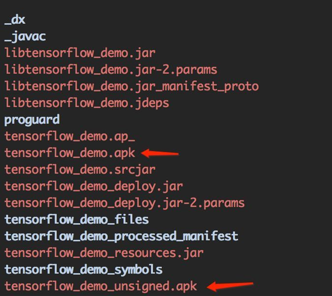

作者: 李嘉璇
出版社: 人民邮电出版社
出品方: 异步图书
出版年: 2017-6-1
ISBN: 9787115456137
内容提要
TensorFlow 是谷歌公司开发的深度学习框架，也是目前深度学习的主流框架之一。本书从深度学习的基础讲起，深入TensorFlow框架原理、模型构建、源代码分析和网络实现等各个方面。全书分为基础篇、实战篇和提高篇三部分。基础篇讲解人工智能的入门知识，深度学习的方法，TensorFlow的基础原理、系统架构、设计理念、编程模型、常用API、批标准化、模型的存储与加载、队列与线程，实现一个自定义操作，并进行TensorFlow源代码解析，介绍卷积神经网络（CNN）和循环神经网络（RNN）的演化发展及其TensorFlow实现、TensorFlow的高级框架等知识；实战篇讲解如何用TensorFlow写一个神经网络程序并介绍TensorFlow实现各种网络（CNN、RNN和自编码网络等），并对MINIST数据集进行训练，讲解TensorFlow在人脸识别、自然语言处理、图像和语音的结合、生成式对抗网络等方面的应用；提高篇讲解TensorFlow的分布式原理、架构、模式、API，还会介绍TensorFlow XLA、TensorFlow Debugger、TensorFlow和Kubernetes结合、TensorFlowOnSpark、TensorFlow移动端应用，以及TensorFlow Serving、TensorFlow Fold和TensorFlow计算加速等其他特性。最后，附录中列出一些可供参考的公开数据集，并结合作者的项目经验介绍项目管理的一些建议。
本书深入浅出，理论联系实际，实战案例新颖，基于最新的TensorFlow 1.1版本，涵盖TensorFlow的新特性，非常适合对深度学习和TensorFlow感兴趣的读者阅读。
序
今天深度学习已经渗透到互联网技术和产品的方方面面，它从学术界的一个研究课题变成了被工业界最广泛应用的关键技术。对于每一个程序员，我认为都应该或多或少了解和掌握深度学习。对于初学者来说，从TensorFlow入手是很好的起点。TensorFlow有谷歌的强大支持，并且有广泛的社区。
本书的作者李嘉璇曾是百度的一名优秀工程师，一位非常勤奋的女生。她在工作之余致力于人工智能的研究，对深度学习框架的架构、应用及编程进行深入钻研，并利用深度学习做图像处理、情感分析、文本挖掘等项目。更为难得的是，她在繁忙的工作之外积极创建TensorFlow及深度学习交流社区，同时也活跃于国内各大技术社区。这本书更是她投入了很多个不眠之夜编写而成。
鉴于这样的背景，我认为这本书非常适合希望入门深度学习的程序员。他们可以将本书作为一本入门和实践的书籍阅读。读者可以从本书中了解基本的深度学习原理、典型的模型、大量的TensorFlow源代码以及成功的应用范例。从本书出发，读者可以循序渐进，逐步深入，在工作实践中加以运用，领略深度学习的美妙。
余凯
地平线机器人创始人，前百度深度学习实验室主任
前言
缘起
2017年2月，TensorFlow的首届开发者峰会（2017 TensorFlow Dev Summit）在美国的加利福尼亚州举行。在会上，谷歌公司宣布正式发布TensorFlow 1.0版本。本书就是基于最新的1.1.0版本来介绍TensorFlow的技术解析和实战。
人工智能大潮来了。2016年，AlphaGo击败围棋大师李世石后，人工智能的应用仿佛一夜之间遍地开花。在科技潮流的大环境中，现在硅谷的用人单位越来越倾向于雇用既懂理论（思考者）又懂编程（执行者）的工程师。思考者的日常工作是阅读文献以求产生思路，而执行者则是编写代码来实现应用。但是要成为一名真正的工程师，学习机器学习是将思考者和执行者相结合的最快途径。
众所周知，人工智能是高级计算智能最宽泛的概念，机器学习是研究人工智能的一个工具，深度学习是机器学习的一个子集，是目前研究领域卓有成效的学习方法。深度学习的框架有很多，而TensorFlow将神经网络、算法这些平时停留在理论层面的知识，组织成一个平台框架，集合了神经网络的各个算法函数组成一个工具箱，让广大工程师可以专心建造自己的目标领域的“轮子”，而且TensorFlow是基于Python语言的，极易上手，这些优势迅速吸引了全世界的工程师。
我曾经也是一名前后端开发工程师，更专注于后端工程方向，而潜心研究深度学习和TensorFlow后，我被TensorFlow深深地迷住了。我发现它对各行各业将会有很深远的影响，并且会大大地解放劳动力。
与传统工程师的主要工作——实现产品需求或者设计高可用性架构不同，深度学习让人总结和抽象人类是怎样理解和看待问题的，并把这种方式教给机器。例如，在AlphaGo的研究中，人们需要先抽象出人类思考围棋的方式，然后将这种方式抽象成算法，并且配合人类大脑构造中神经网络的传输来实现这些算法。这时，工程师不会再写实现业务需求的逻辑代码，而是深度学习中将神经网络的“黑盒”和模型效果非常好却缺乏“可解释性”的特性相结合，在次次实验中尽量找出规律。记得美国前总统肯尼迪在宣布登月计划时曾说：“我们选择去月球，不是因为它简单，而是因为它困难。”今天，我相信，所有致力于人工智能方向的工程师之所以自豪地去研究，也不是因为它简单，而是因为它困难。我们研究它，是因为立足于现在这个点往前看，我们看不到已经建好的高楼大厦，看到的是一片等待我们去发掘的空旷的大地，而这个发掘过程需要的是十足的远见、决心、勇气和信心。
我在学习的过程中，由于深度学习的资料英文的居多，在理解上走了不少弯路。我把学到的知识和原理用心整理并用文字表述出来，写成这本书，希望能帮助没有接触过深度学习的广大程序员迅速上手，而不再被英文阅读理解挡在门外。说实话，TensorFlow的文档以及API接口是比较抽象的，再加上有一些从工程方向转入深度学习的人以前没有过深度学习的经验，所以如果带着工程类程序研发的思维去学习，甚至是实现业务逻辑需求的思维去学习，效果会很差。我希望这本书能为读者呈现一个通俗易懂、形象生动的TensorFlow，使读者迅速走入深度学习的世界。
在本书的写作过程中，为了能充分挤出时间，深夜当我困倦时，我常常让自己以最不舒服的方式入睡，希望能尽量少睡，以此增加仔细钻研的时间。有时我还会打开电视，将音量设置为静音，感受房间中电视背景光闪烁的动感，以此提醒自己时间的流动。刚开始我会坐在工作台前写作，累了又会抱着笔记本坐在床上继续写作，有时会写着写着不知不觉地睡着，凌晨三四点钟又醒来，感受黑夜里的那片安宁，心情顿时平静，再次投入到钻研中。每每有灵感，都非常激动；每每再次深入一个概念，增删易稿，把原理逼近真相地讲透，都让我非常有成就感。
面向的读者
我素来不爱探究数学公式的推导原理，对符号也很茫然，只是在必须要用时才对这些公式进行详细的推导，但是我却对这些原理在应用层面如何使用出奇地感兴趣。本书的目标就是带读者进入造“应用轮子”的大门。我会以最少的数学公式讲清楚如何用TensorFlow实现CNN、RNN，如何在实战中使用TensorFlow进行图片分类、人脸识别和自然语言处理等，以及如何将想训练的数据、想实现的应用亲手做出来。
同时，Python语言是一门相当高级的语言，有“可执行的伪代码”的美誉，可以用极少的代码行去完成一个复杂的功能，同时Python还有极为丰富的第三方库，让全世界很多工程师的开发工作变得异常简单。TensorFlow是用Python语言实现的框架，对很多学生来说非常容易上手，当然，如果是有开发经验的工程师，就更容易学会。如果说设计神经网络模型像是盖一栋大楼，那么TensorFlow强大的API用起来会让人感觉就像搭积木一样容易。因此，懂点儿Python，即便不怎么懂数学和算法原理也没关系，尽管跟着我一起学便是。
在翻译学上有一个概念叫作“平行语料库”，这个概念来自制作于公元前196年的古埃及罗塞塔石碑，石碑上用希腊文字、古埃及文字和当时的通俗体文字刻了同样的内容。在本书进行某个概念的讲解时，虽然是用Python代码作示范，但TensorFlow前端开发同时也支持多种上层语言，本书讲解过程中也会兼顾到用C++、Java、Go语言做开发的读者。
我希望，本书成为不同领域的读者进入人工智能领域的“垫脚石”，也希望所有的读者在人生路上能利用TensorFlow这个工具大放异彩。
我有很重的强迫症，因此，在编写本书的过程中，阅读了国内外很多与TensorFlow相关的资料，对本书的目录结构和框架经过很多次反复琢磨和调整；在写完之后，我又从头到尾地读过好几遍，并且和了解TensorFlow不同方面的人反复交流，根据建议又反复修改。这一切就是希望它能通俗易懂，把读者快速领入深度学习的大门。
这扇门的背后是异彩纷呈的，身怀这门技艺的人是应该非常自豪的，但这扇门的背后也是非常辛苦的，有时数据需要自己去想办法解决，还需要每天看论文，知晓最新科研成果，给自己以启发，反复地做实验，研究算法和模型，寻求提升和解决方法，经常会遇到在很长一段时间没有思路的情况。但是，只要做的东西是开创的，令人称赞的，就会开心地享受这个过程。
我专为本书读者建立了一个QQ交流群（320420130），希望在群里与大家深入讨论和交流学习过程中遇到的问题，也希望与大家分享最新的研究成果。
李嘉璇
2017年4月于北京石景山
个人博客：blog.greatgeekgrace.com
TensorFlow交流社区：tf. greatgeekgrace.com
电子邮箱：qiyueli_2013@163.com
第一篇 基础篇
著名历史学家斯塔夫里阿诺斯在《全球通史》中，曾以15世纪的航海在“物理上”连通“各大洲”作为标志将人类历史划分为两个阶段。在我正在写作的《互联网通史》中，我把互联网这个“信息上”连通“人类个体”的物件作为划分人类历史的标志。而随着人工智能最近的崛起，我们又该思考重新划分了，因为人工智能将会在“信息上”连通“各个物体”。到那时各个物体都有“智能”，如智能汽车、智能电视、扫地机器人、智能音响等智能家居，想象极度的智能下，屋子里的电器和家居都可能和我们有简单的交互。
深度学习领域之所以异军突起，是因为传统的研发思维，如架构、组件化、大规模并发、存储与计算等，已经是技术红海了，而每位工程师都应该学习机器学习，是因为它带给工程师全新的开发思维，工程师可以用自己的代码让机器更加“聪明”。
第1章 人工智能概述
有人说， 人工智能 在世界范围的流行，是因为那盘围棋。2016年3月，谷歌公司的AlphaGo向韩国棋院围棋九段大师李世石发起挑战，而这棋局走法的可能性有361!种，最终AlphaGo战胜了这场“棋局数比可见宇宙中的原子数还多”的智力游戏。2015年11月9日（在距这场比赛前4个月），谷歌公司开源了它的第二代深度学习系统TensorFlow，也就是AlphaGo的基础程序。
1.1 什么是人工智能
什么是人工智能（artificial intelligence，AI）？要了解这个问题，我们先来看看人工智能的几个应用。
1．微软小冰
相信很多朋友手机里都有关注“微软小冰”的公众号，这是微软（亚洲）互联网工程院的一款人工智能伴侣虚拟机器人，跟它聊天时你会发现，小冰有时回答得非常切中你的心意，而有时逻辑上表达却有点儿对不上上下文，所以你觉得它时而回答得不错像人，时而又一眼看穿它是个机器人。这种能否判断对方究竟是人还是机器人的思维实验，叫作“图灵测试”。
图灵测试是计算机科学之父英国人艾伦·图灵提出的，这是一种测试机器是否具备人类智能的方法。图灵设计了一种“模仿游戏”：远处的人在一段规定的时间内，根据两个实体——电脑和人类对他提出的各种问题来判断对方是人类还是电脑。 [1] 具体过程如图1-1所示。C向A和B提出问题，由C来判断对方是人类还是电脑。通过一系列这样的测试，从电脑被误判断为人的概率就可以测出电脑的智能程度，电脑越被误判成人，说明智能程度就越高。

图1-1
这种情感对话能力就是人工智能的一个方向。而现在微软小冰更是可以通过文本、图像、视频和语音与人类展开交流，逐渐具备能看、能听和能说的各种人工智能感官，并且能够和人类进行双向同步交互。
2．人脸识别
现在许多电脑开机密码、支付宝的刷脸支付、客流的闸机通行都有采用人脸识别技术。目前市面上也有许多人脸识别考勤机。很多公司已经采用了人脸闸机打卡签到技术，当有人刷脸打卡签到时，识别出这个人的面部特征，考勤机会将其与公司的员工信息进行比对，完成身份识别，确认后，便可开闸放行。
更进一步讲，人脸识别中还可以识别出人物的年龄、性别、是否佩戴眼镜、是否有笑容、情绪欢乐或悲伤，以及眼睛、鼻子、嘴等关键部位，这就是人脸关键点检测。图1-2就是人脸关键点检测的一个示例。
图1-2
国内有一些公司在人脸识别上已经达到了先进水平，如云从科技、旷视科技、商汤科技等。旷视科技的Face++有目前世界一流的人脸追踪、识别、分析等服务应用，面向开发者的云平台及API、SDK，已经可以直接调用。
以上是人工智能应用的两个例子。百度百科上给出的人工智能的解释是：“它是研究、开发用于模拟、延伸和扩展人的智能的理论、方法、技术及应用系统的一门新的技术科学。人工智能是计算机科学的一个分支，它企图了解智能的实质，并生产出一种新的能以人类智能相似的方式做出反应的智能机器，该领域的研究包括机器人、语言识别、图像识别、自然语言处理和专家系统等。” [2]
简而言之，人工智能就是研究用计算机来实现人类的智能，例如，去模仿人类的知觉、推理、学习能力等，从而让计算机能够像人一样思考和行动，有图像识别（机器识别出猫猫狗狗）、人机对话（机器感知到人类的语义和情感，并给出反馈）、围棋的人机对弈（AlphaGo、Master等让机器自己思考去下棋）等。
国际上的谷歌、苹果、亚马逊、微软等巨大公司都在“两条腿走路”，一方面在做研发项目，如“谷歌大脑”（Google Brain），另一方面同时发力智能家居，如“Google Home智能音箱”，希望把设备当成人来交流。国内的阿里、腾讯、百度、搜狗、地平线等公司以及很多不同领域的创业公司也都在积累的大量数据上，开始尝试训练出高效的模型，不断优化业务指数。
那么，机器是如何实现人类的智力的呢？其实，机器主要是通过大量的训练数据进行训练，程序不断地进行自我学习和修正来训练出一个模型，而模型的本质就是一堆参数，用上千万、上亿个参数来描述业务的特点，如“人脸”“房屋地段价格”“用户画像”的特点，从而接近人类智力。这个过程一般采用的是机器学习以及机器学习的子集——
深度学习 （deep learning），也就是结合深度神经网络的方法来训练。所以说，深度学习方法是能够迅速实现人工智能很有效的工具。
>
AlphaGo的原理 >20年前，IBM的“深蓝”计算机打败人类象棋高手的情景仿佛还历历在目。20年后，人工智能挑战最难的棋类——围棋棋局也成功了。那么AlphaGo是如何下棋的呢？我们知道，传统计算机的下棋方法，一般采取贪婪算法，用Alpha- > Beta修剪法配合Min-Max算法。而AlphaGo采用了蒙特卡洛树搜索法（Monte Carlo tree > search，MCTS）和深度卷积神经网络（deep convolutional neural > network，DCNN）相结合。模型中涉及的主要网络及作用如下。 >
● 估值网络（value network，也称盘面评估函数）：计算出盘面的分数。 >
● 策略网络（policy network）：计算对于下每一个棋子的概率和胜率。它评估对手和自己可能下的位置，对可能的位置进行评估和搜寻。 >
训练模型的主要过程分为以下4步。 >
（1）采用分类的方法得到直接策略。 >
（2）直接策略对历史棋局资料库进行神经网络学习，得到习得策略。 >
（3）采用强化学习的方法进行自我对局来得到改良策略。 >
（4）用回归的方法整体统计后得到估值网络。 >
这里的神经网络部分都采用的是深度卷积神经网络，在自我对局的部分采用的是蒙特卡洛树状搜寻法（MCTS）。 >
更详细的论文见谷歌公司发表在《自然》（ _Nature_ ）上的论文《Mastering the game of Go with deep neural > networks and tree search》。
1.2 什么是深度学习
深度学习，顾名思义，需要从“深度”和“学习”两方面来谈。
1．深度
深度学习的前身是人工神经网络（artificial neural network，ANN），它的基本特点就是试图模仿人脑的神经元之间传递和处理信息的模式。神经网络这个词本身可以指生物神经网络和人工神经网络。在机器学习中，我们说的神经网络一般就是指人工神经网络。
图1-3给出的是一个最基本的人工神经网络的3层模型。
图1-3
人工神经网络由各个层组成， 输入层 （input layer）输入训练数据，在 输出层 （output layer）输出计算结果，中间有1个或多个 隐藏层 （hidden layer），使输入数据向前传播到输出层。“深度”一词没有具体的特指，一般就是要求隐藏层很多（一般指5层、10层、几百层甚至几千层）。
人工神经网络的构想源自对人类大脑的理解——神经元的彼此联系。二者也有不同之处，人类大脑的神经元是按照特定的物理距离连接的，而人工神经网络有独立的层和连接，还有数据传播方向。
例如，我们拿一张图片，对它做一些预处理，如图像居中、灰度调整、梯度锐化、去除噪声、倾斜度调整等，就可以输入到神经网络的第一层。然后，第一层会自己提取这个图像的特征，把有用的特征向下传递，直到最后一层，然后输出结果。这就是一次
前向传播 （forword propagation）。
最后一层的输出要给出一个结论，例如，在分类问题中，要告诉我们到底输入的图像是哪个类别，一般它会给出一个“概率向量”。如图1-4所示，列出了这只猫所属品种的前5个概率值。
图1-4
人工神经网络的每一层由大量的节点（神经元）组成，层与层之间有大量连接，但是层内部的神经元一般相互独立。深度学习的目的就是要利用已知的数据学习一套模型，使系统在遇见未知的数据时也能够做出预测。这个过程需要神经元具备以下两个特性。
（1） 激活函数 （activation function）：这个函数一般是非线性函数，也就是每个神经元通过这个函数将原有的来自其他神经元的输入做一个非线性变化，输出给下一层神经元。激活函数实现的非线性能力是
前向传播 （forword propagation）很重要的一部分。
（2） 成本函数 （cost function）：用来定量评估在特定输入值下，计算出来的输出结果距离这个输入值的真实值有多远，然后不断调整每一层的权重参数，使最后的损失值最小。这就是完成了一次
反向传播 （backword propagation）。损失值越小，结果就越可靠。
神经网络算法的核心就是计算、连接、评估、纠错和训练，而深度学习的深度就在于通过不断增加中间隐藏层数和神经元数量，让神经网络变得又深又宽，让系统运行大量数据，训练它。
2．学习
什么是“学习”？有一些成语可以概括：举一反三、闻一知十、触类旁通、问牛知马、融会贯通等。计算机的学习和人类的学习类似，我们平时大量做题（训练数据），不断地经过阶段性考试（验证数据）的检验，用这些知识和解题方法（模型）最终走向最终（测试数据）的考场。
最简单也最普遍的一类机器学习算法就是 分类 （classification）。对于分类，输入的训练数据有 特征 （feature），有
标记 （label），在学习中就是找出特征和标记间的 映射关系
（mapping），通过标记来不断纠正学习中的偏差，使学习的预测率不断提高。这种训练数据都有标记的学习，称为 有监督学习 （supervised learning）。
无监督学习 （unsupervised learning）则看起来非常困难。无监督学习的目的是让计算机自己去学习怎样做一些事情。因此，所有数据只有特征而没有标记。
无监督学习一般有两种思路：一是在训练时不为其指定明确的分类，但是这些数据会呈现出聚群的结构，彼此相似的类型会聚集在一起。计算机通过把这些没有标记的数据分成一个个组合，就是
聚类 （clustering）；二是在成功时采用某种形式的激励制度，即 强化学习 （reinforcement learning，RL）。对强化学习来说，它虽然没有标记，但有一个延迟奖赏与训练相关，通过学习过程中的激励函数获得某种从状态到行动的映射。强化学习一般用在游戏、下棋（如前面提到的AlphaGo）等需要连续决策的领域。（6.7.1节会讲解强化学习的应用。）
有人可能会想，难道就只有有监督学习和无监督学习这两种非黑即白的关系吗？二者的中间地带就是 半监督学习 （semi-supervised learning）。对于半监督学习，其训练数据一部分有标记，另一部分没有标记，而没标记数据的数量常常极大于有标记数据的数量（这也符合现实，大部分数据没有标记，标记数据的成本很大）。它的基本规律是：数据的分布必然不是完全随机的，通过结合有标记数据的局部特征，以及大量没标记数据的整体分布，可以得到比较好的分类结果。
因此，“学习”家族的整体构造如图1-5所示 [3] 。
图1-5
关于有监督学习和无监督学习在实战中的应用，会在本书“实战篇”中介绍。
1.3 深度学习的入门方法
要想入门深度学习，需要两个工具，即算法知识和大量的数据，外加一台计算机，如果有GPU就更好了，但是因为许多入门初学者的条件有限，没有GPU也可以，本书的许多讲解都是基于Mac笔记本完成的。
我把深度学习的入门过程整理成图1-6所示的7个步骤。
图1-6
下面就来详细介绍一下这7个步骤。
1．学习或者回忆一些数学知识
因为计算机能做的就只是计算，所以人工智能更多地来说还是数学问题 [4] 。我们的目标是训练出一个模型，用这个模型去进行一系列的预测。于是，我们将训练过程涉及的过程抽象成数学函数：首先，需要定义一个网络结构，相当于定义一种线性非线性函数；接着，设定一个优化目标，也就是定义一种
损失函数 （loss function）。
而训练的过程，就是求解最优解及次优解的过程。在这个过程中，我们需要掌握基本的概率统计、高等数学、线性代数等知识，如果学过就最好，没学过也没关系，仅仅知道原理和过程即可，有兴趣的读者可以涉猎一些推导证明。
2．掌握经典机器学习理论与基本算法
这些基本算法包括支持向量机、逻辑回归、决策树、朴素贝叶斯分类器、随机森林、聚类算法、协同过滤、关联性分析、人工神经网络和BP算法、PCA、过拟合与正则化等。 [5]
在本书“实战篇”的第8章到第13章的例子中也有贯穿这些算法知识，保证读者可以用它写出一个小的TensorFlow程序。
3．掌握一种编程工具（语言）
Python语言是一种解释型、面向对象、动态数据类型的高级程序设计语言。Python是很多新入门的程序员的入门编程语言，也是很多老程序员后来必须掌握的编程语言。我们需要重点掌握使用线性代数库和矩阵的操作，尤其是Numpy、Pandas第三方库，也要多试试机器学习的库，如sklearn，做一些SVM及逻辑回归的练习。这对直接上手写TensorFlow程序大有裨益。
有些工业及学术领域的读者还可能擅长MATLAB或R，其实现算法的思想和Python也很类似。
同时考虑到许多读者是使用C++、Java、Go语言的，TensorFlow还提供了和Python“平行语料库”的接口。虽然本书是主要是基于Python讲解的，对于其他语言的原理和应用API也都非常类似，读者把基础掌握后，只需要花很短的时间就能使用自己擅长的语言开发。另外对于Java语言的同学，本书第18章会讲解TensorFlowOnSpark，第19章会讲到TensorFlow的移动端开发。
4．研读经典论文，关注最新动态和研究成果
一些经典论文是必读的。例如，要做手写数字识别，若采用LeNet，要先阅读一下LeNet的学术论文；要做物体目标检测的训练，若选定MSCNN框架，可以先读MSCNN相关的论文。那么，论文从哪里找呢？那么多论文应该读哪篇呢？
下面以GoogleNet的TensorFlow实现为例。在GitHub [6] 上，一般在开头的描述中就会说明这个模型所依据的论文，如图1-7所示。
顺着这篇论文阅读，可以大致了解这个网络的实现原理，对迅速上手应用有很大的作用。同时，我在第6章也会对LeNet、AlexNet、ResNet这几个常见的网络进行讲解，帮助读者举一反三。
图1-7
很多做模式识别的工作者之所以厉害，是因为他们有过很多、很深的论文积累，对模型的设计有很独到的见解，而他们可能甚至一行代码也不会写，而工程（写代码）能力在工作中很容易训练。许多工程方向的软件工程师，工作模式常常在实现业务逻辑和设计架构系统上，编码能力很强，但却缺少论文积累。同时具有这两种能力的人，正是硅谷一些企业目前青睐的人才。
读者平时还可以阅读一些博客、笔记，以及微信公众号、微博新媒体资讯等，往往一些很流行的新训练方法和模型会很快在这些媒体上发酵，其训练神经网络采用的一些方法可能有很大的启发性。
5．自己动手训练神经网络
接着，就是要选择一个开源的深度学习框架。选择框架时主要考虑哪种框架用的人多。人气旺后，遇到问题很容易找到答案；GitHub上关于这个框架的项目和演示会非常多；相关的论文也会层出不穷；在各个QQ群和微信群的活跃度会高；杂志、公众号、微博关注的人也会很多；行业交流和技术峰会讨论的话题也多；也能享受到国内外研究信息成果的同步。
目前这个阶段，TensorFlow因为背靠谷歌公司这座靠山，再加上拥有庞大的开发者群体，而且采用了称为“可执行的伪代码”的Python语言，更新和发版速度着实非常快。目前TensorFlow已经升级到1.1版，在性能方面也有大幅度提高，而且新出现的Debugger、Serving、XLA特性也是其他框架所不及的。此外，一些外围的第三方库（如Keras、TFLearn）也基于它实现了很多成果，并且Keras还得到TensorFlow官方的支持。TensorFlow支持的上层语言也在逐渐增多，对于不同工程背景的人转入的门槛正在降低。
在GitHub [7] 上有一个关于各种框架的比较，从建模能力、接口、模型部署、性能、架构、生态系统、跨平台等7个方面进行比较，TensorFlow也很占综合优势。截至2017年1月，TensorFlow的star数已经超过了其他所有框架的总和，如图1-8所示。
因此，从目前来看，投身TensorFlow是一个非常好的选择，掌握TensorFlow在找工作时是一个非常大的加分项。
图1-8
接下来就是找一个深度神经网络，目前的研究方向主要集中在视觉和语音两个领域。初学者最好从计算机视觉入手，因为它不像语音等领域需要那么多的领域知识，结果也比较直观。例如，用各种网络模型来训练手写数字（MNIST）及图像分类（CIFAR）的数据集。
6．深入感兴趣或者工作相关领域
人工智能目前的应用领域很多，主要是计算机视觉和自然语言处理，以及各种预测等。对于计算机视觉，可以做图像分类、目标检测、视频中的目标检测等；对于自然语言处理，可以做语音识别、语音合成、对话系统、机器翻译、文章摘要、情感分析等，还可以结合图像、视频和语音，一起发挥价值。
更可以深入某一个行业领域。例如，深入医学行业领域，做医学影像的识别；深入淘宝的穿衣领域，做衣服搭配或衣服款型的识别；深入保险业、通信业的客服领域，做对话机器人的智能问答系统；深入智能家居领域，做人机的自然语言交互；等等。
7．在工作中遇到问题，重复前六步
在训练中，准确率、坏案例（bad case）、识别速度等都是可能遇到的瓶颈。训练好的模型也不是一成不变的，需要不断优化，也需要结合具体行业领域和业务进行创新，这时候就要结合最新的科研成果，调整模型，更改模型参数，一步步更好地贴近业务需求。
1.4 什么是TensorFlow
想想，在机器学习流行之前，我们是如何做与语音和图像相关的识别的？大多数是基于规则的系统。例如，做自然语言处理，需要很多语言学的知识；再如，1997年的IBM的深蓝计算机对战国际象棋，也需要很多象棋的知识。
当以统计方法为核心的机器学习方法成为主流后，我们需要的领域知识就相对少了。重要的是做 特征工程 （feature engineering），然后调一些参数，根据一些领域的经验来不断提取特征，特征的好坏往往就直接决定了模型的好坏。这种方法的一大缺点是，对文字等抽象领域，特征还相对容易提取，而对语音这种一维时域信号和图像这种二维空域信号等领域，提取特征就相对困难。
深度学习的革命性在于，它不需要我们过多地提取特征，在神经网络的每一层中，计算机都可以自动学习出特征。为了实现深度学习中运用的神经网络，TensorFlow这样的深度学习开源工具就应运而生。我们可以使用它来搭建自己的神经网络。这就有点儿类似于PHP开发当中的CodeIgniter框架，Java开发当中的SSH三大框架，Python开发当中的Tornado、Django框架，C++当中的MFC、ACE框架。框架的主要目的就是提供一个工具箱，使开发时能够简化代码，呈现出来的模型尽可能简洁易懂。
1.5 为什么要学TensorFlow
首先，TensorFlow的一大亮点是支持 异构设备分布式计算 （heterogeneous distributed computing）。
何为异构？信息技术当中的 异构 是指包含不同的成分，有异构网络（如互联网，不同厂家的硬件软件产品组成统一网络且互相通信）、异构数据库（多个数据库系统的集合，可以实现数据的共享和透明访问 [8] ）。这里的 异构设备 是指使用CPU、GPU等核心进行有效地协同合作；与只依靠CPU相比，性能更高，功耗更低。
那何为分布式？分布式架构目的在于帮助我们调度和分配计算资源（甚至容错，如某个计算节点宕机或者太慢），使得上千万、上亿数据量的模型能够有效地利用机器资源进行训练。
图1-9给出的是开源框架TensorFlow的标志。
图1-9
TensorFlow支持 卷积神经网络 （convolutional neural network，CNN）和 循环神经网络
（recurrent neural network，RNN），以及RNN的一个特例 长短期记忆网络 （long short-term memory，LSTM），这些都是目前在计算机视觉、语音识别、自然语言处理方面最流行的深度神经网络模型。
下面参考《The Unreasonable Effectiveness of Recurrent Neural Networks》 [9] 这篇文章梳理了一个有效框架应该具有的功能。
- Tensor库是对CPU/GPU透明的，并且实现了很多操作（如切片、数组或矩阵操作等）。这里的透明是指，在不同设备上如何运行，都是框架帮用户去实现的，用户只需要指定在哪个设备上进行哪种运算即可。
- 有一个完全独立的代码库，用脚本语言（最理想的是Python）来操作Tensors，并且实现所有深度学习的内容，包括前向传播/反向传播、图形计算等。
- 可以轻松地共享预训练模型（如Caffe的模型及TensorFlow中的slim模块）。
- 没有编译过程。深度学习是朝着更大、更复杂的网络发展的，因此在复杂图算法中花费的时间会成倍增加。而且，进行编译的话会丢失可解释性和有效进行日志调试的能力。
在我看来，在目前的深度学习的研究领域主要有以下3类人群。
- 学者。主要做深度学习的理论研究，研究如何设计一个“网络模型”，如何修改参数以及为什么这样修改效果会好。平时的工作主要是关注科研前沿和进行理论研究、模型实验等，对新技术、新理论很敏感。
- 算法改进者。这些人为了把现有的网络模型能够适配自己的应用，达到更好的效果，会对模型做出一些改进，把一些新算法改进应用到现有模型中。这类人主要是做一些基础的应用服务，如基础的语音识别服务、基础的人脸识别服务，为其他上层应用方提供优良的模型。
- 工业研究者。这类人群不会涉及太深的算法，主要掌握各种模型的网络结构和一些算法实现。他们更多地是阅读优秀论文，根据论文去复现成果，然后应用到自己所在的工业领域。这个层次的人也是现在深度学习研究的主流人群。
我相信本书的读者也大都是第二类和第三类人群，且以第三类人群居多。
而在工业界，TensorFlow将会比其他框架更具优势。工业界的目标是把模型落实到产品上，而产品的应用领域一般有两个：一是基于服务端的大数据服务，让用户直接体验到服务端强大的计算能力（谷歌云平台及谷歌搜索功能）；二是直接面向终端用户的移动端（Android系统）以及一些智能产品的嵌入式。
坐拥Android的市场份额和影响力的谷歌公司，在这两个方向都很强大。此外，谷歌力推的模型压缩和8位低精度数据存储（详见第 19 章）不仅对训练系统本身有优化作用，在某种程度上也能使算法在移动设备上的部署获益，这些优化举措将会使存储需求和内存带宽要求降低，并且使性能得到提升，对移动设备的性能和功耗非常有利。
如果一个框架的用户生态好，用的人就会很多，而用的人多会让用户生态更繁荣，用的人也就会更多。这庞大的用户数就是TensorFlow框架的生命力。
截至2017年1月，与Caffe、Theano、Torch、MXNet等框架相比，TensorFlow在GitHub上Fork数和Star数都是最多的，如图1-10所示。
图1-10
图1-11展示了截至2017年2月，近些年几大机器学习框架的流行程度。
图1-11
1.5.1 TensorFlow的特性
在TensorFlow官方网站 [10] 上，着重介绍了TensorFlow的6大优势特性。
- 高度的灵活性 （deep flexibility）。TensorFlow是一个采用 数据流图 （data flow graph），用于数值计算的开源软件库。只要计算可以表示为一个数据流图，就可以使用TensorFlow，只需要构建图，书写计算的内部循环即可。因此，它并不是一个严格的“神经网络库”。用户也可以在TensorFlow上封装自己的“上层库”，如果发现没有自己想要的底层操作，用户也可以自己写C++代码来丰富。关于封装的“上层库”，TensorFlow现在有很多开源的上层库工具，极大地减少了重复代码量，在第7章中会详细介绍。
- 真正的可移植性 （true portability）。TensorFlow可以在CPU和GPU上运行，以及在台式机、服务器、移动端、云端服务器、Docker容器等各个终端运行。因此，当用户有一个新点子，就可以立即在笔记本上进行尝试。
- 将科研和产品结合在一起 （connect research and production）。过去如果将一个科研的机器学习想法应用到商业化的产品中，需要很多的代码重写工作。现在TensorFlow提供了一个快速试验的框架，可以尝试新算法，并训练出模型，大大提高了科研产出率。
- 自动求微分 （auto-differentiation）。求微分是基于梯度的机器学习算法的重要一步。使用TensorFlow后，只需要定义预测模型的结构和目标函数，将两者结合在一起后，添加相应的数据，TensorFlow就会自动完成计算微分操作。
- 多语言支持 （language options）。TensorFlow提供了Python、C++、Java接口来构建用户的程序，而核心部分是用C++实现的，如图1-12所示。第4章中会着重讲解TensorFlow的架构。用户也可以使用Jupyter Notebook [11] 来书写笔记、代码，以及可视化每一步的 特征映射 （feature map）。用户也可以开发更多其他语言（如Go、Lua、R等）的接口。
图1-12
- 最优化性能（maximize performance）。假如用户有一台32个CPU内核、4个GPU显卡的机器，如何将计算机的所有硬件计算资源全部发挥出来呢？TensorFlow给予线程、队列、分布式计算等支持，可以让用户将TensorFlow的数据流图上的不同计算元素分配到不同的设备上，最大化地利用硬件资源。关于线程和队列，将在4.9节中介绍；关于分布式，将在第14章介绍。
1.5.2 使用TensorFlow的公司
除了谷歌在自己的产品线上使用TensorFlow外，国内的京东、小米等公司，以及国外的Uber、eBay、Dropbox、Airbnb等公司，都在尝试使用TensorFlow。图1-13是摘自TensorFlow官方网站的日益壮大的公司墙。
图1-13
1.5.3 TensorFlow的发展
2016年4月，TensorFlow的0.8版本就支持了分布式、支持多GPU运算。2016年6月，TensorFlow的0.9版本改进了对移动设备的支持。2017年2月，TensorFlow的1.0正式版本中，增加了Java和Go的实验性API，以及专用编译器XLA和调试工具Debugger，还发布了tf.transform，专门用来数据预处理。并且还推出了“动态图计算”TensorFlow Fold，这是被评价为“第一次清晰地在设计理念上领先” [12] 。
用户还可以使用谷歌公司的PaaS TensorFlow产品Cloud Machine Learning来做分布式训练。现在也已经有了完整的TensorFlow Model Zoo。
另外，TensorFlow出色的版本管理和细致的官方文档手册，以及很容易找到解答的繁荣的社区，应该能让用户用起来相当顺手。
截至2017年3月，用TensorFlow作为生产平台和科研基础研发已经越来越坚实可靠。
1.6 机器学习的相关赛事
说到机器学习，不得不提到每年的一些挑战赛。近年来取得好成绩的队伍，常常时使用深度学习的方法的。正是这些赛事激励着全世界科学家不断采用更优化的方法提高算法结果的准确率，也引领着年度的深度学习探索方向。
1.6.1 ImageNet的ILSVRC
ILSVRC（ImageNet Large Scale Visual Recognition Challenge，大规模视觉识别挑战赛）是用来大规模评估对象检测和图像识别的算法的挑战赛。从2010年开始，至2016年已举办7届。ImageNet是目前世界上最大的图像识别数据库，拥有超过1500万张有标记的高分辨率图像的数据集，这些图像分属于大概22 000个类别。ILSVRC使用ImageNet的一个子集，分为1 000种类别，每种类别中都有大约1 000张图像。总之，大约有120万张训练图像，5万张验证图像和15万张测试图像。 [13] 图1-14所示为ImageNet的官方网站。
图1-14
ILSVRC每年邀请谷歌、微软、百度等IT企业使用ImageNet，测试他们图片分类系统运行情况。过去几年中，该系统的图像识别功能大大提高，出错率仅为约5%（比人眼还低，人眼的识别错误率大概在5.1% [14] ）。在2015年，ILSVRC的错误率已经降低到了3.57% [15] ，采用152层的ResNet获得了2015年分类任务的第一名。ILSVRC历年的Top-5错误率如图1-15所示。
在ImageNet上，习惯性地报告两个错误率：Top-1和Top-5。Top-1错误率是指，预测输出的概率最高的类别，是否和人工标记的类别一致，如果不一致，此时的概率。Top-5错误率是指，预测输出的概率最高的前5个类别当中，有没有和人工标记的类别一致，当5个都不一致时的概率。例如在图片分类任务下，对一张图片进行预测，输出这张图片分类概率最高的5个类别，只要有一个预测的类别和人工标注的类别标记一致，就是认为正确。当5个都不一致发生的概率就是Top-5错误率。
图1-15
值得自豪的是，在刚刚过去的ILSVRC 2016上，中国学术界和工业界科研团队包揽了多项冠军 [16] 。
- CUImage（商汤科技联合港中文）：目标检测第一。
- Trimps-Soushen（公安部三所）：目标定位第一。
- CUvideo（商汤科技联合港中文）：视频中物体检测子项目第一。
- NUIST（南京信息工程大学）：视频中的物体探测两个子项目第一。
- Hikvvision（海康威视）：场景分类第一。
- SenseCUSceneParsing（商汤科技联合港中文）：场景分析第一。
1.6.2 Kaggle
如果说ILSVRC企业参加的居多，那Kaggle这个平台则更多地面向个人开发者。图 1-16展示的是Kaggle的官方网站首页。
Kaggle成立于2010年，是一个进行数据发掘、数据分析和预测竞赛的在线平台。与Kaggle合作之后，一家公司可以提供一些数据，进而提出一个问题，Kaggle网站上的计算机科学家和数学家（也就是现在的数据科学家）将领取任务，提供潜在的解决方案。最终胜出的解决方案可以获得3万美元到25万美元的奖励。也就是说，Kaggle也是一个众包理念，利用全世界的人才来解决一个大问题。
图1-16
Kaggle这个比赛非常适合学生参加，因为一般在校学生可能拿不到很多数据。此外，Kaggle不仅对参赛者有算法能力上的要求，而且能锻炼参赛者对数据的“嗅觉”，使参赛者从数据本身问题出发来寻求解决方案。
1.6.3 天池大数据竞赛
“天池”是阿里搭建的一个大数据竞赛平台，图1-17展示的是它的官方网站页面。
图1-17
这个平台上一般会有一些穿衣搭配挑战、新浪微博互动预测、用户重复购买行为预测等赛事。平台提供的“赛题攻略”对新手入门有很大的引领作用。如果在一些项目上取得不错的成绩，还有丰厚的奖金，以及进入阿里巴巴的工作机会。
1.7 国内的人工智能公司
近年来，国内涌现出一批做人工智能的公司，很多原有的互联网公司也开始试水人工智能方向。虽然不可否认人工智能领域还是有一些泡沫存在，但是这个技术领域的井喷点确实来临了，确切地说是科研成果的井喷点。我们要做的就是加快科研成果向产品的转化速度。
国内的腾讯、阿里、百度三大公司在人工智能研究和商业化探索方面走得最早。腾讯优图是腾讯的人工智能开放平台；阿里云ET是阿里巴巴的智能机器人；百度主要在无人驾驶汽车和手机百度客户端的基于“自然语言的人机交互界面”的“度秘”上发力。这些都是人工智能在产业界应用的探索。此外，还有搜狗、云从科技、商汤科技、昆仑万维、格灵深瞳等公司，都在人工智能领域纷纷发力。
下面我们就来介绍国内几家比较有特色的做人工智能的公司。
（1）陌上花科技：衣+（dress+）。提供图像识别、图像搜索、物体追踪检测、图片自动化标记、图像视频智能分析、边看边买、人脸识别和分析等服务。其官方网站的首页如图1-18所示。
图1-18
（2）旷视科技：Face++。以人脸识别精度著称，并且提供人工智能开放平台。目前已经和美图秀秀、魔漫相机合作，实现美白、瘦脸、五官美化等美颜效果。此外，还和支付宝合作，未来有望推出“Smile to Pay”。其官方网站首页如图1-19所示。
图1-19
（3）科大讯飞。主要提供语音识别解决方案，以及语音合成、语言云（分词、词性标注、命名实体识别、依存句法分析、语义角色标注等）等语音扩展服务，有完善的SDK及多种语言实现的API。其官方网站首页如图1-20所示。
图1-20
（4）地平线。嵌入式人工智能的领导者，致力于提供高性能、低功耗、低成本、完整开放的嵌入式人工智能解决方案。其官方网站首页如图1-21所示。
图1-21
1.8 小结
本章主要介绍了人工智能、机器学习、深度学习的关系，以及深度学习的学习步骤，分析了这个领域的相关人群，以及这个领域的重要赛事。然后，全面介绍了TensorFlow的作用、特性，并介绍了国内做人工智能的公司，讲述了目前在产业界进行的探索，和提供给开发者的一些基础平台。
[1] 参考百度百科 “图灵测试”。
[2] 参考百度百科 “人工智能”。
[3] 参考威斯康星大学麦迪逊分校一个ppt的第14页：http://pages.cs.wisc.edu/～jerryzhu/pub/sslicml07.pdf 。
[4] 这里，一些人担心人工智能超越人类还会产生哲学和伦理问题。我认为做这种讨论还为时尚早，严谨的数据基础是要突破的主要方向。
[5] 推荐读者阅读李航老师的《统计学习方法》，很快就能入门。
[6] https://github.com/tensorflow/models/tree/master/inception
[7] https://github.com/zer0n/deepframeworks
[8] 参考百度百科 “异构数据库”。
[9] http://karpathy.github.io/2015/05/21/rnn-effectiveness/
[10] https://www.tensorflow.org/
[11] http://ipython.org/notebook.html
[12] 参考论文《Deep Leaning with Dynamic Computation Graphs》：https://openreview.net/pdf?id=ryrGawqex 。
[13] 参考论文《ImageNet Classification with Deep Convolutional Neural Networks》：http://www.cs.toronto.edu/～fritz/absps/ imagenet.pdf 。
[14] 数据出自论文《Delving Deep into Rectifiers: Surpassing Human-Level Performance on ImageNet Classification》：https://arxiv.org/abs/1502.01852 。
[15] 数据出自论文《Deep Residual Learning for Image Recognition》：https://arxiv.org/abs/1512.03385 。
第2章 TensorFlow环境的准备
本章的主要任务就是准备TensorFlow环境。与安装其他软件（如Caffe）相比，TensorFlow极容易安装，环境部署极为轻松。
接下来我们先介绍下载TensorFlow代码仓库，然后介绍基于pip的安装方式、基于Java的安装方式以及使用Bazel的源代码编译安装方式。
2.1 下载TensorFlow 1.1.0
2017年5月，TensorFlow已经开放到1.1.0-rc2版本，支持多种操作系统。接下来我们就用 1.1.0 版本来介绍TensorFlow的环境准备过程。
我们从GitHub代码仓库中将1.1.0版本的TensorFlow源代码下载下来，在Tags中选择1.1.0版本将跳转到1.1.0版本的代码仓库 [1] ，如图2-1所示。
图2-1
根据图2-2下载解压之后即得到源代码，我们将其保存在本地目录tensorflow-1.1.0中。
图2-2
2.2 基于pip的安装
pip是Python的包管理工具，主要用于PyPI [2] （Python Packet Index）上的包。命令简洁方便，包种类丰富，社区完善，并且拥有轻松升级/降级包的能力。
2.2.1 Mac OS环境准备
Mac OS是本书所讲内容依赖的环境，机器配置如图2-3所示。
图2-3
首先需要依赖Python环境，以及pip命令。这在Mac和Linux系统中一般都有。这里使用的Python版本是2.7.12。TensorFlow 1.1.0版本兼容Python 2和Python 3，读者可以用适合自己的Python环境。
1．安装virtualenv
virtualenv是Python的沙箱工具，用于创建独立的Python环境。我们毕竟是在自己机器上做实验，为了不来回修改各种环境变量，这里用virtualenv为TensorFlow创建一套“隔离”的Python运行环境。
首先，用pip安装virtualenv：
$ pip install virtualenv --upgrade
安装好后创建一个工作目录，这里直接在home下创建了一个tensorflow文件夹：
$ virtualenv --system-site-packages ~/tensorflow
然后进入该目录，激活沙箱：
$ cd ~/tensorflow
$ source bin/activate
(tensorflow) $
2．在virtualenv里安装TensorFlow
进入沙箱后，执行下面的命令来安装TensorFlow：
(tensorflow) $ pip install tensorflow==1.1.0
默认安装所需的依赖，直至安装成功。
3．运行TensorFlow
照着官方文档录入一个简单例子：
代码详情
1 |
|
恭喜，TensorFlow环境已经安装成功了。
注意，每次需要运行TensorFlow程序时，都需要进入tensorflow目录，然后执行source bin/activate命令来激活沙箱。
2.2.2 Ubuntu/Linux环境准备
使用Ubuntu/Linux的读者可以照着Mac OS的环境准备，先安装virtualenv的沙盒环境，再用pip安装TensorFlow软件包。
TensorFlow的Ubuntu/Linux安装分为CPU版本和GPU版本，下面来分别介绍。
（1）安装仅支持CPU的版本，直接安装如下：
$ pip install tensorflow==1.1.0
（2）安装支持GPU的版本的前提是已经安装了CUDA SDK，直接使用下面的命令：
$ pip install tensorflow-gpu==1.1.0
2.2.3 Windows环境准备
TensorFlow 1.1.0版本支持Windows 7、Windows 10和Server 2016。因为使用Windows PowerShell代替CMD，所以下面的命令均在PowerShell下执行。这里使用的是Windows 10系统，使用微软小娜呼唤出PowerShell，如图2-4所示。
图2-4
1．安装Python
TensorFlow在Windows上只支持64位Python 3.5.x，可以通过Python Releases for Windows [3] 或Python 3.5 from Anaconda下载并安装Python 3.5.2（注意选择正确的操作系统）。下载后，安装界面如图2-5所示，注意勾选“Add Python 3.5 to PATH”。
图2-5
选择Customize installation（自定义安装），进入下一步。如图2-6所示，可以看出Python包自带pip命令。
图2-6
然后，等待安装完成，再到PowerShell中输入python，看到进入终端的命令提示则代表python安装成功。在“开始”->“所有程序”下也可以找到Python终端。安装成功后的界面如图2-7所示。
图2-7
TensorFlow的Windows安装也分为CPU版本和GPU版本，下面来分别介绍。
（1）CPU版本安装。在PowerShell中执行如下命令，默认安装TensorFlow 1.1.0版本及相关依赖。
C:\> pip install tensorflow==1.1.0
安装完成后如图2-8所示。

图2-8
（2）GPU版本安装。如果读者的机器支持安装GPU版本，请先安装如下两个驱动：CUDA [4] 和CuDNN [5]
（后者需要注册NVIDIA用户，并加入CuDNN开发组，然后填若干问卷，才可以下载）。选择下载版本时要注意与CUDA版本匹配。解压后保存至CUDA的安装目录下。然后，安装GPU版本，安装命令如下：
C:\> pip install tensorflow-gpu==1.1.0
2．运行TensorFlow
在微软小娜中，搜索“python”，直接模糊匹配，调出命令窗口，输入测试代码：
代码详情
1 |
|
正确输出结果32，安装完毕。
2.3 基于Java的安装
基于Java的方式安装，可以参照TensorFlow官方GitHub的安装方法 [6] 。
我们需要下载JAR（Java ARchive）libtensorflow-1.1.0-rc2.jar和运行TensorFlow需要的本地库。这些都可以直接从官方GitHub上下载，如图2-9所示。
图2-9
这里仍然用Mac OS X系统，下载后的文件如下：
libtensorflow-1.1.0-rc2.jar
libtensorflow_jni-cpu-darwin-x86_64-1.1.0-rc2.tar.gz
对libtensorflow_jni-cpu-darwin-x86_64-1.1.0-rc2.tar.gz进行解压，解压到当前目录jni。
tar zxvf libtensorflow_jni-cpu-darwin-x86_64-1.1.0-rc2.tar.gz -C ./jni
这样就完成了TensorFlow的Java安装。下面我们写一个例子来测试一下，看能否正确输出TensorFlow的版本。将下面代码写入文件，命名为MyClass.java。
代码详情
1 |
|
然后进行编译：
javac -cp libtensorflow-1.1.0-rc2.jar MyClass.java
最后执行，成功输出所采用的TensorFlow版本，如图2-10所示。
图2-10
2.4 从源代码安装
从源代码编译安装，需要使用Bazel编译工具。我们先安装Bazel工具。在需要依赖的JDK 8配好之后，在Mac笔记本上直接执行下面命令，安装版本是0.4.4：
brew install bazel
其他操作系统（如Ubuntu）的计算机对Bazel的安装，可以采用apt-get等方式。
先进入tensorflow-1.1.0的源代码目录，运行./configure脚本会出现所采用的Python路径、是否用HDFS、是否用Google Cloud Platform等选项，读者可以根据自己的需要进行配置，或者直接按“回车”采用默认配置。
下面我们演示使用CPU版本的编译。具体如下：
代码详情
1 |
|
随后，我们执行bazel编译命令，因为编译时需要耗费大量的内存，加入—local_resources 2048,4,1.0来限制内存大小。具体如下：
代码详情
1 |
|
然后进入/tmp/tensorflow_pkg，可以看到生成的文件tensorflow-1.1.0-cp27-cp27m-macosx_10_12_intel.whl，直接安装如下：
pip install /tmp/tensorflow_pkg/tensorflow-1.1.0-cp27-cp27m-macosx_10_12_intel.whl
使用GPU版本的编译需要配置中选择使用CUDA，然后填写对应的CUDA SDK版本等，其他步骤均相同。
2.5 依赖的其他模块
TensorFlow在运行中需要做一些矩阵运算，时常会用到一些第三方模块，此外，在处理音频、自然语言时需要也要用到一些模块，建议一并安装好。本书“实战篇”中会大量用到这些扩展。
下面我们就来简单介绍TensorFlow依赖的一些模块。
2.5.1 numpy
numpy是用来存储和处理大型矩阵的科学计算包，比Python自身的 **嵌套列表结构 ** （nested list structure）要高效的多。它包括：
- 一个强大的 _N_ 维数组对象Array；
- 比较成熟的函数库；
- 用于整合C/C++和Fortran代码的工具包；
- 实用的线性代数、傅里叶变换和随机数生成函数。
numpy模块的安装方法如下：
pip install numpy --upgrade
2.5.2 matplotlib
matplotlib是Python最著名的绘图库，它提供了一整套和MATLAB相似的命令API，十分适合交互式地进行制图。用它可以画出美丽的线图、散点图、等高线图、条形图、柱状图、3D图等，而且还可以方便地将它作为绘图控件，嵌入GUI应用程序中。在后面的实例中，需要可视化地展现训练结果或者中间的特征映射，就很方便。
matplotlib模块的安装方法如下：
pip install matplotlib --upgrade
2.5.3 jupyter
jupyter notebook是Ipython的升级版，能够在浏览器中创建和共享代码、方程、说明文档。界面相当友好，功能也很强大。其实，jupyter实际就是一个基于Tornado框架的Web应用，使用MQ进行消息管理。
jupyter模块的安装方法如下：
pip install jupyter --upgrade
打开jupyter notebook：
jupyter notebook
出现如下显示：
代码详情
1 |
|
浏览器自动打开，启动成功，界面如图 2-11 所示。其中，在 tensorflow-1.1.0/tensorflow/ examples/udacity下有许多扩展名为.ipynb的示例文件，读者可以自行在浏览器中打开和学习。
图2-11
2.5.4 scikit-image
scikit-image [7] 有一组图像处理的算法，可以使过滤一张图片变得很简单，非常适合用于对图像的预处理。
scikit-image模块的安装方法如下：
pip install scikit-image --upgrade
2.5.5 librosa
librosa是用Python进行音频特征提取的第三方库，有很多方式可以提取音频特征。
librosa模块的安装如下：
pip install librosa --upgrade
2.5.6 nltk
nltk [8] 模块中包含着大量的语料库，可以很方便地完成很多自然语言处理的任务，包括分词、词性标注、命名实体识别（NER）及句法分析。
nltk的安装方法：
pip install nltk --upgrade
安装完成后，需要导入nltk工具包，下载nltk数据源，如下：
>>> import nltk
>>> nltk.download()
2.5.7 keras
Keras是第一个被添加到TensorFlow核心中的高级别框架，成为Tensorflow的默认API。第7章中会详细讲解Keras的使用。
keras模块的安装方法如下：
pip install keras --upgrade
2.5.8 tflearn
TFLearn是另一个支持TensorFlow的第三方框架，第7章中会详细讲解TFLearn的使用。
tflearn模块的安装方法如下：
pip install git+https://github.com/tflearn/tflearn.git
2.6 小结
本章介绍了TensorFlow环境的准备，分别讲解了使用pip命令、Java JAR文件、用Bazel工具对源代码进行编译这3种安装方式，以及在pip安装方式下，在Mac、Ubuntu/Linux、Windows系统上如何安装CPU版本和GPU版本的TensorFlow。
最后，讲了一些常用扩展的作用和安装，这些扩展在本书的“实战篇”中会用到。
[1] https://github.com/tensorflow/tensorflow/tree/v1.1.0
[2] https://pypi.python.org/pypi
[3] https://www.python.org/downloads/windows/
[4] https://developer.nvidia.com/cuda-downloads
[5] https://developer.nvidia.com/cudnn
[6] https://github.com/tensorflow/tensorflow/tree/master/tensorflow/java
第3章 可视化TensorFlow
可视化是认识程序的最直观方式。在做数据分析时，可视化一般是数据分析最后一步的结果呈现。把可视化放到“基础篇”，是为了让读者在安装完成后，就能先看一下TensorFlow到底有哪些功能，直观感受一下深度学习的学习成果，让学习目标一目了然。
3.1 PlayGround
PlayGround [1] 是一个用于教学目的的简单神经网络的在线演示、实验的图形化平台，非常强大地可视化了神经网络的训练过程。使用它可以在浏览器里训练神经网络，对Tensorflow有一个感性的认识。
PlayGround界面从左到右由数据（DATA）、特征（FEATURES）、神经网络的隐藏层（HIDDEN LAYERS）和层中的连接线和输出（OPUPUT）几个部分组成，如图3-1所示。
图3-1
3.1.1 数据
在二维平面内，点被标记成两种颜色。深色（电脑屏幕显示为蓝色）代表正值，浅色（电脑屏幕显示为黄色）代表负值。这两种颜色表示想要区分的两类，如图3-2所示。
图3-2
网站提供了4种不同形态的数据，分别是圆形、异或、高斯和螺旋，如图3-3所示。神经网络会根据所给的数据进行训练，再分类规律相同的点。
图3-3
PlayGournd中的数据配置非常灵活，可以调整 噪声 （noise）的大小。图3-4展示的是噪声为0、25和50时的数据分布。
图3-4
PlayGournd中也可以改变训练数据和测试数据的比例（ratio）。图3-5展示的是训练数据和测试数据比例为1 : 9和9 : 1时的情况。
图3-5
此外，PlayGournd中还可以调整输入的每批（batch）数据的多少，调整范围可以是1～30，就是说每批进入神经网络数据的点可以1～30个，如图3-6所示。
图3-6
3.1.2 特征
接下来我们需要做 特征提取 （feature extraction），每一个点都有 _X_ 1 和 _X_ 2 两个特征，由这两个特征还可以衍生出许多其他特征，如 _X_ 1 _X_ 1 、 _X_ 2 _X_ 2 、 _X_ 1 _X_ 2 、sin( _X_ 1 )、sin( _X_ 2 )等，如图3-7所示。
图3-7
从颜色上， _X_ 1 左边浅色（电脑屏幕显示为黄色）是负，右边深色（电脑屏幕显示为蓝色）是正， _X_ 1 表示此点的横坐标值。同理， _X_ 2 上边深色是正，下边浅色是负， _X_ 2 表示此点的纵坐标值。 _X_ 1 _X_ 1 是关于横坐标的“抛物线”信息， _X_ 2 _X_ 2 是关于纵坐标的“抛物线”信息， _X_ 1 _X_ 2 是“双曲抛物面”的信息，sin( _X_ 1 )是关于横坐标的“正弦函数”信息，sin( _X_ 2 )是关于纵坐标的“正弦函数”信息。
因此，我们要学习的 分类器 （classifier）就是要结合上述一种或者多种特征，画出一条或者多条线，把原始的蓝色和黄色数据分开。
3.1.3 隐藏层
我们可以设置隐藏层的多少，以及每个隐藏层神经元的数量，如图3-8所示。
图3-8
隐藏层之间的连接线表示 权重
（weight），深色（蓝色）表示用神经元的原始输出，浅色（黄色）表示用神经元的负输出。连接线的粗细和深浅表示权重的绝对值大小。鼠标放在线上可以看到具体值，也可以修改值，如图3-9所示。
图3-9
修改值时，同时要考虑激活函数，例如，当换成Sigmoid时，会发现没有负向的黄色区域了，因为Sigmoid的值域是(0,1)，如图3-10所示。
图3-10
下一层神经网络的神经元会对这一层的输出再进行组合。组合时，根据上一次预测的准确性，我们会通过反向传播给每个组合不同的权重。组合时连接线的粗细和深浅会发生变化，连接线的颜色越深越粗，表示权重越大。
3.1.4 输出
输出的目的是使黄色点都归于黄色背景，蓝色点都归于蓝色背景，背景颜色的深浅代表可能性的强弱。
我们选定螺旋形数据，7个特征全部输入，进行试验。选择只有3个隐藏层时，第一个隐藏层设置8个神经元，第二个隐藏层设置4个神经元，第三个隐藏层设置2个神经元。训练大概2分钟，测试损失（test loss）和训练损失（training loss）就不再下降了。训练完成时可以看出，我们的神经网络已经完美地分离出了橙色点和蓝色点，如图3-11所示。
图3-11
假设我们只输入最基本的前4个特征，给足多个隐藏层，看看神经网络的表现。假设加入6个隐藏层，前4层每层有8个神经元，第五层有6个神经元，第六层有2个神经元。结果如图3-12所示。
图3-12
我们发现，通过增加神经元的个数和神经网络的隐藏层数，即使没有输入许多特征，神经网络也能正确地分类。但是，假如我们要分类的物体是猫猫狗狗的图片，而不是肉眼能够直接识别出特征的黄点和蓝点呢？这时候怎样去提取那些真正有效的特征呢？
有了神经网络，我们的系统自己就能学习到哪些特征是有效的、哪些是无效的，通过自己学习的这些特征，就可以做到自己分类，这就大大提高了我们解决语音、图像这种复杂抽象问题的能力。
3.2 TensorBoard [2]
TensorBoard是TensorFlow自带的一个强大的可视化工具，也是一个Web应用程序套件。TensorBoard目前支持7种可视化，即SCALARS、IMAGES、AUDIO、GRAPHS、DISTRIBUTIONS、HISTOGRAMS和EMBEDDINGS。这7种可视化的主要功能如下。
- SCALARS：展示训练过程中的准确率、损失值、权重/偏置的变化情况。
- IMAGES：展示训练过程中记录的图像。
- AUDIO：展示训练过程中记录的音频。
- GRAPHS：展示模型的数据流图，以及训练在各个设备上消耗的内存和时间。
- DISTRIBUTIONS：展示训练过程中记录的数据的分布图。
- HISTOGRAMS：展示训练过程中记录的数据的柱状图。
- EMBEDDINGS：展示词向量（如Word2vec）后的投影分布。
TensorBoard通过运行一个本地服务器，来监听6006端口。在浏览器发出请求时，分析训练时记录的数据，绘制训练过程中的图像。在9.3节的MNIST示例中，会逐一讲解TensorBoard的图像绘制，让读者更好地了解训练的过程中发生了什么。本节我们就先看一下TensorBoard能够绘制出哪些东西。
TensorBoard的可视化界面如图3-13所示。

图3-13
从图3-13中可以看到，在标题处有上述几个可视化面板，下面通过一个示例，分别介绍这些可视化面板的功能。
这里，我们运行手写数字识别的入门例子，如下：
python tensorflow-1.1.0/tensorflow/examples/tutorials/mnist/mnist_with_summaries.py
然后，打开TensorBoard面板：
tensorboard ––logdir=/tmp/mnist/logs/mnist_with_summaries
这时，输出：
Starting TensorBoard 39 on port 6006
(You can navigate to http://192.168.0.101:6006)
我们就可以在浏览器中打开http://192.168.0.101:6006，查看面板的各项功能。
3.2.1 SCALARS面板
SCALARS面板的左边是一些选项，包括Split on undercores（用下划线分开显示）、Data downloadlinks（数据下载链接）、Smoothing（图像的曲线平滑程度）以及Horizontal Axis（水平轴）的表示，其中水平轴的表示分3种（STEP代表迭代次数，RELATIVE代表按照训练集和测试集的相对值，WALL代表按照时间），如图3-14左边所示。图3-14右边给出了准确率和交叉熵损失函数值的变化曲线（迭代次数是1000次）。
图3-14
SCALARS面板中还绘制了每一层的 偏置 （biases）和 权重
（weights）的变化曲线，包括每次迭代中的最大值、最小值、平均值和标准差，如图3-15所示。

图3-15
3.2.2 IMAGES面板
图3-16展示了训练数据集和测试数据集经过预处理后图片的样子。

图3-16
3.2.3 AUDIO面板
AUDIO面板是展示训练过程中处理的音频数据。这里暂时没有找到合适的例子，读者了解即可。
3.2.4 GRAPHS面板
GRAPHS面板是对理解神经网络结构最有帮助的一个面板，它直观地展示了数据流图。图 3-17 所示界面中节点之间的连线即为数据流，连线越粗，说明在两个节点之间流动的张量（tensor）越多。
图3-17
在GRAPHS面板的左侧，可以选择迭代步骤。可以用不同Color（颜色）来表示不同的Structure（整个数据流图的结构），或者用不同Color来表示不同Device（设备）。例如，当使用多个GPU时，各个节点分别使用的GPU不同。
当我们选择特定的某次迭代（如第899次）时，可以显示出各个节点的Compute time（计算时间）以及Memory（内存消耗），如图3-18所示。
图3-18
3.2.5 DISTRIBUTIONS面板
DISTRIBUTIONS面板和接下来要讲的HISTOGRAMS面板类似，只不过是用平面来表示来自特定层的激活前后、权重和偏置的分布。图3-19展示的是激活之前和激活之后的数据分布。
图3-19
3.2.6 HISTOGRAMS面板
HISTOGRAMS主要是立体地展现来自特定层的激活前后、权重和偏置的分布。图3-20展示的是激活之前和激活之后的数据分布。
图3-20
3.2.7 EMBEDDINGS面板
EMBEDDINGS面板在MNIST这个示例中无法展示，在3.3节中我们会用Word2vec例子来看一下这个面板的词嵌入投影仪。
3.3 可视化的例子
词嵌入 （word embedding）在机器学习中非常常见，可以应用在自然语言处理、推荐系统等其他程序中。下面我们就以Word2vec为例来看看词嵌入投影仪的可视化。
TensorFlow的Word2Vec有basic、optimised这两个版本，我们重点来看这两个版本的可视化表示。
3.3.1 降维分析
本节将以GitHub上的一段代码 [3] 为例，讲述可视化的思路。
Word2vec采用text8 [4] 作为文本的训练数据集。这个文本中只包含a～z字符和空格，共27种字符。我们重点讲述产生的结果可视化的样子以及构建可视化的过程。这里我们采用的是Skip- gram模型，即根据目标词汇预测上下文。也就是说，给定 _n_ 个词围绕着词 _w_ ，用 _w_ 来预测一个句子中其中一个缺漏的词 _c_ ，以概率 _p_ ( _c_ | _w_ )来表示。最后生成的用t-SNE降维呈现词汇接近程度的关系如图3-21所示。
图3-21
在word2vec_basic.py中，从获得数据到最终得到可视化的结果的过程分为5步。
（1）下载文件并读取数据。主要是read_data函数，它读取输入的数据，输出一个list，里面的每一项就是一个词。
代码详情
1 |
|
这里的data就类似于[‘fawn’, ‘homomorphism’, ‘nordisk’, ‘nunnery’]。
（2）建立一个词汇字典。这里首先建立了一个词汇字典，字典里是对应的词和这个词的编码。
代码详情
1 |
|
dictionary里存储的就是词与这个词的编码；reverse_dictionary是反过来的dictionary，对应的是词的编码与这个词；data是list，存储的是词对应的编码，也就是第一步中得到的词的list，转化为词的编码表示；count中存储的是词汇和词频，其中重复数量少于49 999个词，用’UNK’来代表稀有词。具体示例如下：
代码详情
1 |
|
（3）产生一个批次（batch）的训练数据。这里定义generate_batch函数，输入batch_size、num_skips和skip_window，其中batch_size是每个batch的大小，num_skips代表样本的源端要考虑几次，skip_windows代表左右各考虑多少个词，其中skip_windows*2=num_skips。最后返回的是batch和label，batch的形状是[batch_size]，label的形状是[batch_size, 1]，也就是用一个中心词来预测一个周边词。
举个例子。假设我们的句子是“我在写一首歌”，我们将每一个字用dictionary中的编码代替，就变成了[123, 3084, 12, 6, 195, 90]，假设这里的window_size是3，也就是只预测上文一个词，下文一个词，假设我们的generate_batch函数从3084出发，源端重复2次，那么batch就是[3084 3084 12 12 6 6 195 195]，3084的上文是123，下文是12；12的上文是3084，下文是6；6的上文是12，下文是195；195的上文是6，下文是90。因此，对应输出的label就是：
代码详情
1 |
|
（4）构建和训练模型。这里我们构建一个Skip-gram模型，具体模型搭建可以参考Skip-gram的相关论文。执行结果如下：
代码详情
1 |
|
（5）用t-SNE降维呈现。这里我们将上一步训练的结果做了一个t-SNE降维处理，最终用Matplotlib绘制出图形，图形见图3-19。代码如下：
代码详情
1 |
|
>
小知识 >
t-SNE是流形学习（manifold > Learning）方法的一种。它假设数据是均匀采样于一个高维空间的低维流形，流形学习就是找到高维空间中的低维流形，并求出相应的嵌入映射，以实现维数约简或者数据可视化。流形学习方法分为线性的和非线性的两种。线性的流形学习方法如主成份分析（PCA），非线性的流形学习方法如等距特征映射（Isomap）、拉普拉斯特征映射（Laplacian > eigenmaps，LE）、局部线性嵌入（Locally-linear embedding，LLE）等。
3.3.2 嵌入投影仪
在3.2节中我们说到，在TensorBorad的面板中还有一个EMBEDDINGS面板，用于交互式可视化和分析高维数据。对于上面的word2vec_basic.py文件，我们只是做了一个降维分析，下面我们就来看看TensorBorad在词嵌入中的投影。这里采用官方GitHub开源实现上的例子 [5] 进行讲解。
这里我们自定义了两个操作（operator，OP）：SkipgramWord2vec和NegTrainWord2vec。为什么需要自定义操作以及如何定义一个操作将在4.10节介绍。操作需要先编译，然后执行。这里采用Mac OS系统，在g++命令后加上-undefined dynamic_lookup参数：
代码详情
1 |
|
在当前目录下生成word2vec_ops.so文件，然后执行word2vec_optimized.py，生成的模型和日志文件位于/tmp/，我们执行：
tensorboard --logdir=/tmp/
访问http://192.168.0.101:6006/，得到的EMBEDDINGS面板如图3-22所示。
图3-22
在EMBEDDINGS面板左侧的工具栏中，可以选择降维的方式，有T-SNE、PCA和CUSTOM的降维方式，并且可以做二维/三维的图像切换。例如，切换到t- SNE降维工具，可以手动调整Dimension（困惑度）、Learning rate（学习率）等参数，最终生成10 000个点的分布，如图3-23所示。
图3-23
在EMBEDDINGS面板的右侧，可以采用正则表达式匹配出某些词，直观地看到词之间的余弦距离或欧式距离的关系，如图3-24所示。
图3-24
任意选择一个点，如8129，选择“isolate 101 points”按钮，将会展示出100个在空间上最接近被选择点的词，也可以调整展示的词的数量，如图3-25所示。
图3-25
3.4 小结
可视化是研究深度学习的一个重要方向，有利于我们直观地探究训练过程中的每一步发生的变化。TensorFlow提供了强大的工具TensorBoard，不仅有完善的API接口，而且提供的面板也非常丰富。在4.3.2节我们会讲解实现TensorBoard的API。在第17章我们还会讲到TensorFlow的调试工具，调试和可视化配合起来，有利于精准地调整模型。
[1] http://playground.tensorflow.org/
[2] 本节内容参考https://github.com/tensorflow/tensorflow/blob/master/tensorflow/tensorboard/README.md 。
[4] http://mattmahoney.net/dc/textdata
[5] https://github.com/tensorflow/models/blob/master/tutorials/embedding/word2vec_optimized.py
第4章 TensorFlow基础知识
本章主要参考TensorFlow官方网站上的新手入门 [1] 和扩展教程 [2] ，讲解TensorFlow的基本概念。本章从系统架构、设计理念、编程模型、常用API、存储与加载模型、线程及队列、加载数据、自定义操作等多个方面进行讲解，相信通过本章的学习，读者会对TensorFlow的全貌有一个基本的认识。本章的学习对理解TensorFlow的原理和实战非常重要，读者需要用心揣摩。
4.1 系统架构
图4-1给出的是TensorFlow的系统架构，自底向上分为设备层和网络层、数据操作层、图计算层、API层、应用层，其中设备层和网络层、数据操作层、图计算层是TensorFlow的核心层。 [3]
下面就自底向上详细介绍一下TensorFlow的系统架构。最下层是网络通信层和设备管理层。网络通信层包括gRPC（google Remote Procedure Call Protocol）和远程直接数据存取（Remote Direct Memory Access，RDMA），这都是在分布式计算时需要用到的。设备管理层包括TensorFlow分别在CPU、GPU、FPGA等设备上的实现，也就是对上层提供了一个统一的接口，使上层只需要处理卷积等逻辑，而不需要关心在硬件上的卷积的实现过程。
其上是数据操作层，主要包括卷积函数、激活函数等操作（参见4.7节）。再往上是图计算层，也是我们要了解的核心，包含本地计算图和分布式计算图的实现（本章会做基础知识的梳理，包括图的创建、编译、优化和执行，本书的“实战篇”会介绍图的具体应用，第 15章会介绍分布式计算图的实现）。再往上是API层和应用层（4.4节和4.7节会介绍重点常用的API的Python实现以及一些其他语言的实现，本书的“实战篇”会重点讲解调用API层对深度学习各种网络模型的实现）。
图4-1
4.2 设计理念
TensorFlow的设计理念主要体现在以下两个方面。
（1）将图的定义和图的运行完全分开。因此，TensorFlow被认为是一个“符号主义”的库。
我们知道，编程模式通常分为 命令式编程 （imperative style programming）和 符号式编程 （symbolic style programming）。命令式编程就是编写我们理解的通常意义上的程序，很容易理解和调试，按照原有逻辑执行。符号式编程涉及很多的嵌入和优化，不容易理解和调试，但运行速度相对有所提升。现有的深度学习框架中，Torch是典型的命令式的，Caffe、MXNet采用了两种编程模式混合的方法，而TensorFlow完全采用符号式编程。
符号式计算一般是先定义各种变量，然后建立一个数据流图，在数据流图中规定各个变量之间的计算关系，最后需要对数据流图进行编译，但此时的数据流图还是一个空壳儿，里面没有任何实际数据，只有把需要运算的输入放进去后，才能在整个模型中形成数据流，从而形成输出值。 [4]
例如：
t = 8 + 9
print(t)
在传统的程序操作中，定义了t的运算，在运行时就执行了，并输出17。而在TensorFlow中，数据流图中的节点，实际上对应的是TensorFlow API中的一个操作，并没有真正去运行：
import tensorflow as tf
t = tf.add(8, 9)
print(t) # 输出 Tensor("Add_1:0", shape=(), dtype=int32)
定义了一个操作，但实际上并没有运行。
（2）TensorFlow中涉及的运算都要放在图中，而图的运行只发生在 会话
（session）中。开启会话后，就可以用数据去填充节点，进行运算；关闭会话后，就不能进行计算了。因此，会话提供了操作运行和Tensor求值的环境。例如：
代码详情
1 |
|
了解了设计理念，接下来看一下TensorFlow的编程模型。
4.3 编程模型 [5]
TensorFlow是用数据流图做计算的，因此我们先创建一个数据流图（也称为网络结构图），如图4-2所示，看一下数据流图中的各个要素。
图4-2讲述了TensorFlow的运行原理。图中包含输入（input）、塑形（reshape）、Relu层（Relu layer）、Logit层（Logit layer）、Softmax、交叉熵（cross entropy）、梯度（gradient）、SGD训练（SGD Trainer）等部分，是一个简单的回归模型。
它的计算过程是，首先从输入开始，经过塑形后，一层一层进行前向传播运算。Relu层（隐藏层）里会有两个参数，即 _W_ h1 和 _b_ h1 ，在输出前使用ReLu（Rectified Linear Units）激活函数做非线性处理。然后进入Logit层（输出层），学习两个参数 _W_ sm 和bsm 。用Softmax来计算输出结果中各个类别的概率分布。用交叉熵来度量两个概率分布（源样本的概率分布和输出结果的概率分布）之间的相似性。然后开始计算梯度，这里是需要参数 _W_ h1 、 _b_ h1 、 _W_ sm 和 _b_ sm ，以及交叉熵后的结果。随后进入SGD训练，也就是反向传播的过程，从上往下计算每一层的参数，依次进行更新。也就是说，计算和更新的顺序为 _b_ sm 、 _W_ sm 、 _b_ h1 和 _W_ h1 。
图4-2 [6]
顾名思义，TensorFlow是指“张量的流动”。TensorFlow的数据流图是由 节点 （node）和 边 （edge）组成的
有向无环图 （directed acycline graph，DAG）。TensorFlow由Tensor和Flow两部分组成，Tensor（张量）代表了数据流图中的边，而Flow（流动）这个动作就代表了数据流图中节点所做的操作。
4.3.1 边
TensorFlow的边有两种连接关系：数据依赖和控制依赖 [7] 。其中，实线边表示数据依赖，代表数据，即张量。任意维度的数据统称为张量。在机器学习算法中，张量在数据流图中从前往后流动一遍就完成了一次 前向传播
（forword propagation），而残差 [8] 从后向前流动一遍就完成了一次 反向传播 （backword propagation）。
还有一种特殊边，一般画为虚线边，称为 控制依赖 （control dependency），可以用于控制操作的运行，这被用来确保happens- before关系，这类边上没有数据流过，但源节点必须在目的节点开始执行前完成执行。常用代码如下：
tf.Graph.control_dependencies(control_inputs)
TensorFlow支持的张量具有表4-1所示的数据属性。
表4-1
| 数据类型 | Python类型 | 描述 |
|---|---|---|
| DT_FLOAT | tf.float32 | 32位浮点型 |
| DT_DOUBLE | tf.float64 | 64位浮点型 |
| DT_INT64 | tf.int64 | 64位有符号整型 |
| DT_INT32 | tf.int32 | 32位有符号整型 |
| DT_INT16 | tf.int16 | 16位有符号整型 |
| DT_INT8 | tf.int8 | 8位有符号整型 |
| DT_UINT8 | tf.uint8 | 8位无符号整型 |
| DT_STRING | tf.string | 可变长度的字节数组，每一个张量元素都是一个字节数组 |
| DT_BOOL | tf.bool | 布尔型 |
| DT_COMPLEX64 | tf.complex64 | 由两个32位浮点数组成的复数：实部和虚部 |
| DT_QINT32 | tf.qint32 | 用于量化 [9] 操作的32位有符号整型 |
| DT_QINT8 | tf.qint8 | 用于量化操作的8位有符号整型 |
| DT_QUINT8 | tf.quint8 | 用于量化操作的8位无符号整型 |
有关图及张量的实现的源代码均位于tensorflow-1.1.0/tensorflow/python/framework/ops.py，后面会详细讲。
4.3.2 节点
图中的 节点 又称为 算子 ，它代表一个 操作 （operation，OP），一般用来表示施加的数学运算，也可以表示
数据输入 （feed in）的起点以及 输出 （push out）的终点，或者是读取/写入 持久变量 （persistent variable）的终点。表4-2列举了一些TensorFlow实现的算子。算子支持表4-1所示的张量的各种数据属性，并且需要在建立图的时候确定下来。
表4-2 [10]
| 类别 | 示例 |
|---|---|
| 数学运算操作 | Add、Subtract、Multiply、Div、Exp、Log、Greater、Less、Equal…… |
| 数组运算操作 | Concat、Slice、Split、Constant、Rank、Shape、Shuffle…… |
| 矩阵运算操作 | MatMul、MatrixInverse、MatrixDeterminant…… |
| 有状态的操作 | Variable、Assign、AssignAdd…… |
| 神经网络构建操作 | SoftMax、Sigmoid、ReLU、Convolution2D、MaxPool,…… |
| 检查点操作 | Save、Restore |
| 队列和同步操作 | Enqueue、Dequeue、MutexAcquire、MutexRelease…… |
| 控制张量流动的操作 | Merge、Switch、Enter、Leave、NextIteration |
与操作相关的代码位于tensorflow-1.1.0/tensorflow/python/ops/目录下。以数学运算为例，代码为上述目录下的math_ops.py，里面定义了add、subtract、multiply、scalar_mul、div、divide、truediv、floordiv等数学运算，每个函数里面调用了gen_math_ops.py中的方法，这个文件是在编译（安装时）TensorFlow时生成的，位于Python库site- packages/tensorflow/python/ops/gen_math_ops.py中，随后又调用了tensorflow-1.1.0/tensorflow/core/kernels/下面的核函数实现。再例如，数据运算的代码位于tensorflow-1.1.0/tensorflow/python/ops/array_ops.py中，里面定义了concat、split、slice、size、rank等运算，每个函数都调用了gen_array_ops.py中的方法，这个文件也是在编译TensorFlow时生成的，位于Python库site- packages/tensorflow/python/ops/gen_array_ops.py中，随后又调用了tensorflow-1.1.0/tensorflow/core/kernels/下面的核函数实现。
4.3.3 其他概念
除了边和节点，TensorFlow还涉及其他一些概念，如图、会话、设备、变量、内核等。下面就分别介绍一下。
1．图
把操作任务描述成有向无环图。那么，如何构建一个图呢？构建图的第一步是创建各个节点。具体如下：
import tensorflow as tf
# 创建一个常量运算操作，产生一个 1×2 矩阵
matrix1 = tf.constant([[3., 3.]])
# 创建另外一个常量运算操作，产生一个 2×1 矩阵
matrix2 = tf.constant([[2.],[2.]])
# 创建一个矩阵乘法运算 ，把matrix1和matrix2作为输入
# 返回值product代表矩阵乘法的结果
product = tf.matmul(matrix1, matrix2)
2．会话
启动图的第一步是创建一个Session对象。会话（session）提供在图中执行操作的一些方法。一般的模式是，建立会话，此时会生成一张空图，在会话中添加节点和边，形成一张图，然后执行。
要创建一张图并运行操作的类，在Python的API中使用tf.Session，在C++ 的API中使用tensorflow::Session。示例如下：
with tf.Session() as sess:
result = sess.run([product])
print result
在调用Session对象的run()方法来执行图时，传入一些Tensor，这个过程叫 填充
（feed）；返回的结果类型根据输入的类型而定，这个过程叫 取回 （fetch）。
与会话相关的源代码位于tensorflow-1.1.0/tensorflow/python/client/session.py。
会话是图交互的一个桥梁，一个会话可以有多个图，会话可以修改图的结构，也可以往图中注入数据进行计算。因此，会话主要有两个API接口：Extend和Run。Extend操作是在Graph中添加节点和边，Run操作是输入计算的节点和填充必要的数据后，进行运算，并输出运算结果。
3．设备
设备
（device）是指一块可以用来运算并且拥有自己的地址空间的硬件，如GPU和CPU。TensorFlow为了实现分布式执行操作，充分利用计算资源，可以明确指定操作在哪个设备上执行。具体如下：
代码详情
1 |
|
与设备相关的源代码位于tensorflow-1.1.0/tensorflow/python/framework/device.py。
4．变量
变量
（variable）是一种特殊的数据，它在图中有固定的位置，不像普通张量那样可以流动。例如，创建一个变量张量，使用tf.Variable()构造函数，这个构造函数需要一个初始值，初始值的形状和类型决定了这个变量的形状和类型：
# 创建一个变量，初始化为标量0
state = tf.Variable(0, name="counter")
创建一个常量张量：
input1 = tf.constant(3.0)
TensorFlow 还提供了填充机制，可以在构建图时使用tf.placeholder()临时替代任意操作的张量，在调用Session对象的run()方法去执行图时，使用填充数据作为调用的参数，调用结束后，填充数据就消失。代码示例如下：
代码详情
1 |
|
与变量相关的源代码位于tensorflow/tensorflow/python/ops/variables.py。
5．内核
我们知道 操作 （operation）是对抽象操作（如matmul或者add）的一个统称，而 内核
（kernel）则是能够运行在特定设备（如CPU、GPU）上的一种对操作的实现。因此，同一个操作可能会对应多个内核。
当自定义一个操作时，需要把新操作和内核通过注册的方式添加到系统中。4.10节会用一个示例来讲解如何自定义一个操作。
4.4 常用API
了解TensorFlow的API有助于在应用时得心应手。下面介绍的是常用API，在后面的示例中基本上都会用到。这里主要介绍基于Python的API，基于其他语言的API也大同小异，最重要的是理解API的功能及其背后的原理。 [11]
4.4.1 图、操作和张量
TensorFlow的计算表现为数据流图，所以tf.Graph类中包含一系列表示计算的操作对象（tf.Operation），以及在操作之间流动的数据——张量对象（tf.Tensor）。与图相关的API均位于tf.Graph类中，参见表4-3。
表4-3
| 操作 | 描述 |
|---|---|
| tf.Graph. init () | 创建一个空图 |
| tf.Graph.as_default() | 将某图设置为默认图，并返回一个上下文管理器。如果不显式添加一个默认图，系统会自动设置一个全局的默认图。所设置的默认图，在模块范围内定义的节点都将默认加入默认图中 |
| tf.Graph.device(device_name_or_function) | 定义运行图所使用的设备，并返回一个上下文管理器 |
| tf.Graph.name_scope(name) | 为节点创建层次化的名称，并返回一个上下文管理器 |
tf.Operation类代表图中的一个节点，用于计算张量数据。该类型由节点构造器（如tf.matmul()或者Graph.create_op()）产生。例如，c = tf.matmul(a, b)创建一个Operation类，其类型为MatMul的操作类。与操作相关的API均位于tf.Operation类中，参见表4-4。
| 操作 | 描述 |
|---|---|
| tf.Operation.name | 操作的名称 |
| tf.Operation.type | 操作的类型，如MatMul |
| tf.Operation.inputstf.Operation.outputs | 操作的输入与输出 |
| tf.Operation.control_inputs | 操作的依赖 |
| tf.Operation.run(feed_dict=None, session=None) | 在会话中运行该操作 |
| tf.Operation.get_attr(name) | 获取操作的属性值 |
tf.Tensor类是操作输出的符号句柄，它不包含操作输出的值，而是提供了一种在tf.Session中计算这些值的方法。这样就可以在操作之间构建一个数据流连接，使TensorFlow能够执行一个表示大量多步计算的图形。与张量相关的API均位于tf.Tensor类中，参见表4-5。
表4-5
| 操作 | 描述 |
|---|---|
| tf.Tensor.dtype | 张量的数据类型 |
| tf.Tensor.name | 张量的名称 |
| tf.Tensor.value_index | 张量在操作输出中的索引 |
| tf.Tensor.graph | 张量所在的图 |
| tf.Tensor.op | 产生该张量的操作 |
| tf.Tensor.consumers() | 返回使用该张量的操作列表 |
| tf.Tensor.eval(feed_dict=None, session=None) | 在会话中求张量的值，需要使用sess.as_default()或者eval(session=sess) |
| tf.Tensor.get_shape() | 返回用于表示张量的形状（维度）的类TensorShape |
| tf.Tensor.set_shape(shape) | 更新张量的形状 |
| tf.Tensor.device | 设置计算该张量的设备 |
4.4.2 可视化
在第3章中，我们讲解了可视化面板的功能，但如何编写可视化的程序呢？可视化时，需要在程序中给必要的节点添加 摘要
（summary），摘要会收集该节点的数据，并标记上第几步、时间戳等标识，写入 事件文件 （event file）中。tf.summary.FileWriter类用于在目录中创建事件文件，并且向文件中添加摘要和事件，用来在TensorBoard中展示。9.3节将详细讲解可视化的过程。
表4-6给出了可视化常用的API操作。
表4-6
| API | 描述 |
|---|---|
| tf.summary.FileWriter. init (logdir, graph=None, max_queue= 10, flush_secs=120, graph_def=None) | 创建FileWriter和事件文件，会在logdir中创建一个新的事件文件 |
| tf.summary.FileWriter.add_summary(summary, global_step=None) | 将摘要添加到事件文件 |
| tf.summary.FileWriter.add_event(event) | 向事件文件中添加一个事件 |
| tf.summary.FileWriter.add_graph(graph, global_step=None, graph_def=None) | 向事件文件中添加一个图 |
| tf.summary.FileWriter.get_logdir() | 获取事件文件的路径 |
| tf.summary.FileWriter.flush() | 将所有事件都写入磁盘 |
| tf.summary.FileWriter.close() | 将事件写入磁盘，并关闭文件操作符 |
| tf.summary.scalar(name, tensor, collections=None) | 输出包含单个标量值的摘要 |
| tf.summary.histogram(name, values, collections=None) | 输出包含直方图的摘要 |
| tf.summary.audio(name, tensor, sample_rate, max_outputs=3, collections=None) | 输出包含音频的摘要 |
| tf.summary.image(name, tensor, max_outputs=3, collections= None) | 输出包含图片的摘要 |
| tf.summary.merge(inputs, collections=None, name=None) | 合并摘要，包含所有输入摘要的值 |
4.5 变量作用域
在TensorFlow中有两个 作用域
（scope），一个是name_scope，另一个是variable_scope。它们究竟有什么区别呢？简而言之，name_scope主要是给variable_name加前缀，也可以给op_name加前缀；name_scope是给op_name加前缀。下面我们就来分别介绍。
4.5.1 variable_scope示例
variable_scope变量作用域机制在TensorFlow中主要由两部分组成：
代码详情
1 |
|
当tf.get_variable_scope().reuse == False时，variable_scope作用域只能用来创建新变量：
代码详情
1 |
|
上述程序会抛出ValueError错误，因为v这个变量已经被定义过了，但tf.get_variable_scope().reuse默认为False，所以不能重用。
当tf.get_variable_scope().reuse == True时，作用域可以共享变量：
代码详情
1 |
|
1．获取变量作用域
可以直接通过tf.variable_scope()来获取变量作用域：
代码详情
1 |
|
如果在开启的一个变量作用域里使用之前预先定义的一个作用域，则会跳过当前变量的作用域，保持预先存在的作用域不变。
代码详情
1 |
|
2．变量作用域的初始化
变量作用域可以默认携带一个初始化器，在这个作用域中的子作用域或变量都可以继承或者重写父作用域初始化器中的值。方法如下：
代码详情
1 |
|
上面讲的是variable_name，那对于op_name呢？在variable_scope作用域下的操作，也会被加上前缀：
代码详情
1 |
|
variable_scope主要用在循环神经网络（RNN）的操作中，其中需要大量的共享变量。
4.5.2 name_scope示例
TensorFlow中常常会有数以千计的节点，在可视化的过程中很难一下子展示出来，因此用name_scope为变量划分范围，在可视化中，这表示在计算图中的一个层级。name_scope会影响op_name，不会影响用get_variable()创建的变量，而会影响通过Variable()创建的变量。因此：
代码详情
1 |
|
可以看出，tf.name_scope()返回的是一个字符串，如上述的”bar”。name_scope对用get_variable()创建的变量的名字不会有任何影响，而Variable()创建的操作会被加上前缀，并且会给操作加上名字前缀。
4.6 批标准化
批标准化 （batch normalization，BN）是为了克服神经网络层数加深导致难以训练而诞生的。我们知道，深度神经网络随着网络深度加深，训练起来会越来越困难，收敛速度会很慢，常常会导致
梯度弥散问题 （vanishing gradient problem）。
统计机器学习中有一个ICS（Internal Covariate Shift）理论，这是一个经典假设： 源域 （source domain）和
目标域 （target domain）的数据 分布 是一致的。也就是说，训练数据和测试数据是满足相同分布的。这是通过训练数据获得的模型能够在测试集获得好的效果的一个基本保障。
Covariate Shift是指训练集的样本数据和目标样本集分布不一致时，训练得到的模型无法很好地 泛化
（generalization）。它是分布不一致假设之下的一个分支问题，也就是指源域和目标域的条件概率是一致的，但是其边缘概率不同。的确，对于神经网络的各层输出，在经过了层内操作后，各层输出分布就会与对应的输入信号分布不同，而且差异会随着网络深度增大而加大，但是每一层所指向的样本
标记 （label）仍然是不变的。
解决思路一般是根据训练样本和目标样本的比例对训练样本做一个矫正。因此，通过引入批标准化来规范化 [12] 某些层或者所有层的输入，从而固定每层输入信号的均值与方差。
4.6.1 方法
批标准化一般用在非线性映射（激活函数）之前，对 _x_ = _Wu_ + _b_ 做规范化，使结果（输出信号各个维度）的均值为0，方差为1。让每一层的输入有一个稳定的分布会有利于网络的训练。
4.6.2 优点
批标准化通过规范化让激活函数分布在线性区间，结果就是加大了梯度，让模型更加大胆地进行梯度下降，于是有如下优点：
- 加大探索的步长，加快收敛的速度；
- 更容易跳出局部最小值；
- 破坏原来的数据分布，一定程度上缓解过拟合。
因此，在遇到神经网络收敛速度很慢或 梯度爆炸 [13] （gradient explode）等无法训练的情况下，都可以尝试用批标准化来解决。
4.6.3 示例
我们对每层的Wx_plus_b进行批标准化，这个步骤放在激活函数之前：
代码详情
1 |
|
更多关于批标准化的理论可以查看Sergey Ioffe和Christian Szegedy的论文《Batch Normalization: Accelerating Deep Network Training by Reducing Internal Covariate Shift》 [14] 。
4.7 神经元函数及优化方法
本节主要介绍TensorFlow中构建神经网络所需的神经元函数，包括各种激活函数、卷积函数、池化函数、损失函数、优化器等。读者阅读时，务必把本节介绍的常用API记熟，这有利于在“实战篇”轻轻松松地构建神经网络进行训练。
4.7.1 激活函数
激活函数 （activation function）运行时激活神经网络中某一部分神经元，将激活信息向后传入下一层的神经网络。神经网络之所以能解决非线性问题（如语音、图像识别），本质上就是激活函数加入了非线性因素，弥补了线性模型的表达力，把“激活的神经元的特征”通过函数保留并映射到下一层。
因为神经网络的数学基础是处处可微的，所以选取的激活函数要能保证数据输入与输出也是可微的。那么激活函数在TensorFlow中是如何表达的呢？
激活函数不会更改输入数据的维度，也就是输入和输出的维度是相同的。TensorFlow中有如下激活函数，它们定义在tensorflow-1.1.0/tensorflow/python/ops/nn.py文件中，这里包括平滑非线性的激活函数，如sigmoid、tanh、elu、softplus和softsign，也包括连续但不是处处可微的函数relu、relu6、crelu和relu_x，以及随机正则化函数dropout：
代码详情
1 |
|
上述激活函数的输入均为要计算的x（一个张量），输出均为与x数据类型相同的张量。常见的激活函数有sigmoid、tanh、relu和softplus这4种。下面我们就来逐一讲解。
（1）sigmoid函数。这是传统神经网络中最常用的激活函数之一（另一个是tanh），对应的公式和图像如图4-3所示。
使用方法如下：
代码详情
1 |
|
图4-3
sigmoid函数的优点在于，它的输出映射在(0,1)内，单调连续，非常适合用作输出层，并且求导比较容易。但是，它也有缺点，因为软饱和性 [15] ，一旦输入落入饱和区， _f ‘_ ( _x_ )就会变得接近于0，很容易产生梯度消失 [16] 。
（2）tanh函数。对应的公式和图像如图4-4所示。
图4-4
tanh函数也具有软饱和性。因为它的输出以0为中心，收敛速度比sigmoid要快。但是仍无法解决梯度消失的问题。
（3）relu函数是目前最受欢迎的激活函数。softplus可以看作是ReLU的平滑版本。relu定义为 _f_ ( _x_ )=max( _x_ ,0)。softplus定义为 _f_ ( _x_ )=log(1+exp( _x_ ))。
由图4-5可见，relu在 _x_ <0时硬饱和。由于 _x_>0时导数为1，所以，relu能够在 _x_ >0时保持梯度不衰减，从而缓解梯度消失问题，还能够更快地收敛，并提供了神经网络的稀疏表达能力。但是，随着训练的进行，部分输入会落到硬饱和区，导致对应的权重无法更新，称为“神经元死亡”。
图4-5
使用示例如下：
代码详情
1 |
|
除了relu本身外，TensorFlow还定义了relu6，也就是定义在min(max(features, 0), 6)的tf.nn.relu6(features, name=None)，以及crelu，也就是tf.nn.crelu(features, name=None)。
（4）dropout函数。一个神经元将以概率keep_prob决定是否被抑制。如果被抑制，该神经元的输出就为0；如果不被抑制，那么该神经元的输出值将被放大到原来的1/keep_prob倍。 [17]
在默认情况下，每个神经元是否被抑制是相互独立的。但是否被抑制也可以通过noise_shape来调节。当noise_shape[i] == shape(x)[i]时，x中的元素是相互独立的。如果shape(x) = [k, l, m, n]，x中的维度的顺序分别为批、行、列和通道，如果noise_shape = [k, 1, 1, n]，那么每个批和通道都是相互独立的，但是每行和每列的数据都是关联的，也就是说，要不都为0，要不都还是原来的值。
使用示例如下：
代码详情
1 |
|
>
激活函数的选择 >当输入数据特征相差明显时，用tanh的效果会很好，且在循环过程中会不断扩大特征效果并显示出来。当特征相差不明显时，sigmoid效果比较好。同时，用sigmoid和tanh作为激活函数时，需要对输入进行规范化，否则激活后的值全部都进入平坦区，隐层的输出会全部趋同，丧失原有的特征表达。而relu会好很多，有时可以不需要输入规范化来避免上述情况。 >
因此，现在大部分的卷积神经网络都采用relu作为激活函数。我估计大概有85%～90%的神经网络会采用ReLU，10%～15%的神经网络会采用tanh，尤其用在自然语言处理上。
4.7.2 卷积函数
卷积函数 是构建神经网络的重要支架，是在一批图像上扫描的二维过滤器。9.4.1 节会详细讲解卷积的过程。卷积函数定义在tensorflow-1.1.0/tensorflow/python/ops下的nn_impl.py和nn_ops.py文件中。
代码详情
1 |
|
下面就分别加以说明。
（1）tf.nn.convolution(input, filter, padding, strides=None, dilation_rate=None, name=None, data_format =None)这个函数计算N维卷积的和。
（2）tf.nn.conv2d(input, filter, strides, padding, use_cudnn_on_gpu=None, data_format=None, name=None)这个函数的作用是对一个四维的输入数据input和四维的卷积核filter进行操作，然后对输入数据进行一个二维的卷积操作，最后得到卷积之后的结果。
代码详情
1 |
|
使用示例如下：
代码详情
1 |
|
代码详情
1 |
|
这里打印出tf.shape(y)的结果是[10 9 9 15]。
（4）tf.nn.separable_conv2d (input, depthwise_filter, pointwise_filter, strides, padding, rate=None, name=None, data_format=None)是利用几个分离的卷积核去做卷积。在这个API中，将应用一个二维的卷积核，在每个通道上，以深度channel_multiplier进行卷积。
代码详情
1 |
|
使用示例如下：
代码详情
1 |
|
这里打印出tf.shape(y)的结果是[10 9 9 20]。
（5）tf.nn.atrous_conv2d(value, filters, rate, padding, name=None)计算Atrous卷积，又称孔卷积或者扩张卷积。
使用示例如下：
代码详情
1 |
|
这里打印出tf.shape(y)的结果是[1 5 5 1]。
（6）tf.nn.conv2d_transpose(value, filter, output_shape, strides, padding=’SAME’, data_format=’NHWC’, name=None) [18] 在解卷积网络（deconvolutional network）中有时称为“反卷积”，但实际上是conv2d的转置，而不是实际的反卷积。
代码详情
1 |
|
使用示例如下：
代码详情
1 |
|
这里打印出tf.shape(y)的结果是[1 5 5 3]。
（7）tf.nn.conv1d(value, filters, stride, padding, use_cudnn_on_gpu=None, data_format=None, name=None)和二维卷积类似。这个函数是用来计算给定三维的输入和过滤器的情况下的一维卷积。不同的是，它的输入是三维，如[batch, in_width, in_channels]。卷积核的维度也是三维，少了一维filter_height，如 [filter_width, in_channels, out_channels]。stride是一个正整数，代表卷积核向右移动每一步的长度。
（8）tf.nn.conv3d(input, filter, strides, padding, name=None)和二维卷积类似。这个函数用来计算给定五维的输入和过滤器的情况下的三维卷积。和二维卷积相对比：
- input的shape中多了一维in_depth，形状为Shape[batch, in_depth, in_height, in_width, in_channels]；
- filter的shape中多了一维filter_depth，由filter_depth, filter_height, filter_width构成了卷积核的大小；
- strides中多了一维，变为[strides_batch, strides_depth, strides_height, strides_width, strides_channel]，必须保证strides[0] = strides[4] = 1。
（9）tf.nn.conv3d_transpose(value, filter, output_shape, strides, padding=’SAME’, name=None)和二维反卷积类似，不再赘述。
4.7.3 池化函数
在神经网络中，池化函数一般跟在卷积函数的下一层，它们也被定义在tensorflow-1.1.0/ tensorflow/python/ops下的nn.py和gen_nn_ops.py文件中。
代码详情
1 |
|
池化操作是利用一个矩阵窗口在张量上进行扫描，将每个矩阵窗口中的值通过取最大值或平均值来减少元素个数。每个池化操作的矩阵窗口大小是由ksize指定的，并且根据步长strides决定移动步长。下面就分别来说明。
（1）tf.nn.avg_pool(value, ksize, strides, padding, data_format=’NHWC’, name=None)。这个函数计算池化区域中元素的平均值。
代码详情
1 |
|
使用示例如下：
代码详情
1 |
|
上述代码打印出tf.shape(output)的结果是[10 6 6 10]。计算输出维度的方法是：shape(output) =
(shape(value) - ksize + 1) / strides。
（2）tf.nn.max_pool(value, ksize, strides, padding, data_format=’NHWC’, name=None)。这个函数是计算池化区域中元素的最大值。
使用示例如下：
代码详情
1 |
|
上述代码打印出tf.shape(output)的结果是[10 6 6 10]。
（3）tf.nn.max_pool_with_argmax(input, ksize, strides, padding, Targmax = None, name=None)。这个函数的作用是计算池化区域中元素的最大值和该最大值所在的位置。
在计算位置argmax的时候，我们将input铺平了进行计算，所以，如果input = [b, y, x, c]，那么索引位置是(( b _height + y)_ width + x) * channels + c。
使用示例如下，该函数只能在GPU下运行，在CPU下没有对应的函数实现：
代码详情
1 |
|
返回结果是一个张量组成的元组（output, argmax），output表示池化区域的最大值；argmax的数据类型是Targmax，维度是四维。
（4）tf.nn.avg_pool3d()和tf.nn.max_pool3d()分别是在三维下的平均池化和最大池化。
（5）tf.nn.fractional_avg_pool()和tf.nn.fractional_max_pool()分别是在三维下的平均池化和最大池化。
（6）tf.nn.pool(input, window_shape, pooling_type, padding, dilation_rate=None, strides=None, name=None, data_format=None)。这个函数执行一个N维的池化操作。
4.7.4 分类函数
TensorFlow中常见的分类函数主要有sigmoid_cross_entropy_with_logits、softmax、log_softmax、softmax_cross_entropy_with_logits等，它们也主要定义在tensorflow-1.1.0/tensorflow/python/ops的nn.py和nn_ops.py文件中。
代码详情
1 |
|
下面我们就逐一讲解。
（1）tf.nn.sigmoid_cross_entropy_with_logits(logits, targets, name=None)：
代码详情
1 |
|
这个函数的输入要格外注意，如果采用此函数作为损失函数，在神经网络的最后一层不需要进行sigmoid运算。
（2）tf.nn.softmax(logits, dim=-1, name=None)计算Softmax激活，也就是softmax = exp(logits) / reduce_sum(exp(logits), dim)。
（3）tf.nn.log_softmax(logits, dim=-1, name=None)计算log softmax激活，也就是logsoftmax = logits - log(reduce_sum(exp(logits), dim))。
（4）tf.nn.softmax_cross_entropy_with_logits(_sentinel=None, labels=None, logits=None, dim=-1, name =None)：
代码详情
1 |
|
（5）tf.nn.sparse_softmax_cross_entropy_with_logits(logits, labels, name=None) ：
代码详情
1 |
|
4.7.5 优化方法
如何加速神经网络的训练呢？目前加速训练的优化方法基本都是基于梯度下降的，只是细节上有些差异。梯度下降是求函数极值的一种方法，学习到最后就是求损失函数的极值问题。
TensorFlow提供了很多 优化器 （optimizer），我们重点介绍下面这8个：
代码详情
1 |
|
这8个优化器对应8种优化方法，分别是梯度下降法（BGD和SGD）、Adadelta法、Adagrad法（Adagrad和AdagradDAO）、Momentum法（Momentum和Nesterov Momentum）、Adam、Ftrl法和RMSProp法，其中BGD、SGD、Momentum和Nesterov Momentum是手动指定学习率的，其余算法能够自动调节学习率。
下面就介绍其中几种优化方法。
1．BGD法
BGD的全称是batch gradient descent，即批梯度下降。这种方法是利用现有参数对训练集中的每一个输入生成一个估计输出 _y i _ ，然后跟实际输出 _y i _ 比较，统计所有误差，求平均以后得到平均误差，以此作为更新参数的依据。它的迭代过程为：
（1）提取训练集中的所有内容{ _x_ 1 , …, _x n _ }，以及相关的输出 _y i _ ；
（2）计算梯度和误差并更新参数。
这种方法的优点是，使用所有训练数据计算，能够保证收敛，并且不需要逐渐减少学习率；缺点是，每一步都需要使用所有的训练数据，随着训练的进行，速度会越来越慢。
那么，如果将训练数据拆分成一个个批次（batch），每次抽取一批数据来更新参数，是不是会加速训练呢？这就是最常用的SGD。
2．SGD法
SGD的全称是stochastic gradient descent，即随机梯度下降。因为这种方法的主要思想是将数据集拆分成一个个批次（batch），随机抽取一个批次来计算并更新参数，所以也称为MBGD（minibatch gradient descent）。
SGD在每一次迭代计算mini- batch的梯度，然后对参数进行更新。与BGD相比，SGD在训练数据集很大时，仍能以较快的速度收敛。但是，它仍然会有下面两个缺点。
（1）由于抽取不可避免地梯度会有误差，需要手动调整 学习率 （learning rate），但是选择合适的学习率又比较困难。尤其在训练时，我们常常想对常出现的特征更新速度快一些，而对不常出现的特征更新速度慢一些，而SGD在更新参数时对所有参数采用一样的学习率，因此无法满足要求。
（2）SGD容易收敛到局部最优，并且在某些情况下可能被困在鞍点。
为了解决学习率固定的问题，又引入了Momentum法。
3．Momentum法
Momentum是模拟物理学中动量的概念，更新时在一定程度上保留之前的更新方向，利用当前的批次再微调本次的更新参数，因此引入了一个新的变量v（速度），作为前几次梯度的累加。因此，Momentum能够更新学习率，在下降初期，前后梯度方向一致时，能够加速学习；在下降的中后期，在局部最小值的附近来回震荡时，能够抑制震荡，加快收敛。
4．Nesterov Momentum法
Nesterov Momentum法由Ilya Sutskever在Nesterov工作的启发下提出的，是对传统Momentum法的一项改进，其基本思路如图4-6所示。
图4-6 [19]
标准Momentum法首先计算一个梯度（短的1号线），然后在加速更新梯度的方向进行一个大的跳跃（长的1号线）；Nesterov项首先在原来加速的梯度方向进行一个大的跳跃（2号线），然后在该位置计算梯度值（3号线），然后用这个梯度值修正最终的更新方向（4号线）。
上面介绍的优化方法都需要我们自己设定学习率，接下来介绍几种自适应学习率的优化方法。
5．Adagrad法
Adagrad法能够自适应地为各个参数分配不同的学习率，能够控制每个维度的梯度方向。这种方法的优点是能够实现学习率的自动更改：如果本次更新时梯度大，学习率就衰减得快一些；如果这次更新时梯度小，学习率衰减得就慢一些。
6．Adadelta法
Adagrad法仍然存在一些问题：其学习率单调递减，在训练的后期学习率非常小，并且需要手动设置一个全局的初始学习率。Adadelta法用一阶的方法，近似模拟二阶牛顿法，解决了这些问题。
7．RMSprop法
RMSProp法与Momentum法类似，通过引入一个衰减系数，使每一回合都衰减一定比例。在实践中，对循环神经网络（RNN）效果很好。
8．Adam法
Adam的名称来源于 自适应矩估计 [20] （adaptive moment estimation）。Adam法根据损失函数针对每个参数的梯度的一阶矩估计和二阶矩估计动态调整每个参数的学习率。
9．各个方法的比较
Karpathy在MNIST数据集上用上述几个优化器做了一些性能比较，发现如下规律 [21]
：在不怎么调整参数的情况下，Adagrad法比SGD法和Momentum法更稳定，性能更优；精调参数的情况下，精调的SGD法和Momentum法在收敛速度和准确性上要优于Adagrad法。
各个优化器的损失值比较结果如图4-7所示。

图4-7
各个优化器的测试准确率比较如图4-8所示。
图4-8
各个优化器的训练准确率比较如图4-9所示。
图4-9
想要更深入研究各种优化方法，可以参考《An overview of gradient descent optimization algorithms》 [22] 。
4.8 模型的存储与加载
训练好一个神经网络模型后，我们就希望能够将其应用在预测数据上。那么，如何把模型存储起来呢？同时，对于一个已经存储起来的模型，在将其应用在预测数据上时又如何加载呢？
TensorFlow的API提供了以下两种方式来存储和加载模型。
（1）生成 检查点文件 （checkpoint file），扩展名一般为.ckpt，通过在tf.train.Saver对象上调用Saver.save()生成。它包含权重和其他在程序中定义的变量，不包含图结构。如果需要在另一个程序中使用，需要重新创建图形结构，并告诉TensorFlow如何处理这些权重。
（2）生成图协议文件（graph proto file），这是一个二进制文件，扩展名一般为.pb，用tf.train.write_graph()保存，只包含图形结构，不包含权重，然后使用tf.import_graph_def()来加载图形。
下面我们就分“模型存储”和“图存储”来介绍这两种方式。在TensorFlow的高级API，如Keras中，也提供了更高级的语句来保存和加载模型，在7.2.3节中会介绍。
4.8.1 模型的存储与加载
模型存储主要是建立一个tf.train.Saver()来保存变量，并且指定保存的位置，一般模型的扩展名为.ckpt。
下面我们定义一个新的神经网络，含两个全连接层和一个输出层，来训练MNIST数据集，并把训练好的模型存储起来。我们用MNIST数据集来说明。 [23]
1．加载数据及定义模型
加载数据及定义模型的代码如下：
代码详情
1 |
|
生成网络模型，得到预测值，代码如下:
代码详情
1 |
|
定义损失函数，代码如下：
代码详情
1 |
|
接下来我们就要训练刚才定义好的模型，并把每一轮训练得到的参数都存储下来。
2．训练模型及存储模型
首先，我们定义一个存储路径，这里就用当前路径下的ckpt_dir目录，代码如下：
代码详情
1 |
|
定义一个计数器，为训练轮数计数，代码如下：
# 计数器变量，设置它的trainable=False，不需要被训练
global_step = tf.Variable(0, name='global_step', trainable=False)
当定义完所有变量后，调用tf.train.Saver()来保存和提取变量，其后面定义的变量将不会被存储，代码如下：
# 在声明完所有变量后，调用tf.train.Saver
saver = tf.train.Saver()
# 位于tf.train.Saver之后的变量将不会被存储
non_storable_variable = tf.Variable(777)
训练模型并存储，如下：
代码详情
1 |
|
于是，在训练的过程中，ckpt_dir下会出现16个文件，其中有5个model.ckpt-{n}.data- 00000-of-00001文件，是训练过程中保存的模型，5个model.ckpt-{n}.meta文件，是训练过程中保存的元数据（TensorFlow默认只保存最近5个模型和元数据，删除前面没用的模型和元数据），5个model.ckpt-{n}.index文件，{n}代表迭代次数，以及1个检查点文本文件，里面保存着当前模型和最近的5个模型，内容如下：
代码详情
1 |
|
那么，假如在训练某个模型时突然因为某种原因，脚本停止运行了，或者机器重启了，是不是就要从头开始训练呢？我们知道，训练一个神经网络的时间都比较长，少则几个小时，多则几天，甚至几周。如果能将之前训练的参数保存下来，就可以在出现意外状况时接着上一次的地方开始训练。此外，每个固定的轮数在检查点保存一个模型（.ckpt文件），也有利于随时将模型拿出来进行预测，用前几次的预测效果就可以估计出神经网络究竟设计得怎么样。
3．加载模型
如果有已经训练好的模型变量文件，可以用saver.restore来进行模型加载：
代码详情
1 |
|
4.8.2 图的存储与加载
当仅保存图模型时，才将图写入二进制协议文件中，例如：
代码详情
1 |
|
当读取时，又从协议文件中读取出来：
代码详情
1 |
|
4.9 队列和线程
和TensorFlow中的其他组件一样， 队列 （queue）本身也是图中的一个节点，是一种有状态的节点，其他节点，如 入队节点
（enqueue）和 出队节点
（dequeue），可以修改它的内容。例如，入队节点可以把新元素插到队列末尾，出队节点可以把队列前面的元素删除。本节主要介绍队列、队列管理器、线程和协调器的有关知识。
4.9.1 队列
TensorFlow中主要有两种队列，即FIFOQueue和RandomShuffleQueue，它们的源代码实现在tensorflow-1.1.0/tensorflow/python/ops/data_flow_ops.py中。
1．FIFOQueue
FIFOQueue创建一个先入先出队列。例如，我们在训练一些语音、文字样本时，使用循环神经网络的网络结构，希望读入的训练样本是有序的，就要用FIFOQueue。关于循环神经网络的讲解参见9.5节。
我们先创建一个含有队列的图：
代码详情
1 |
|
然后开启一个会话，执行2次q_inc操作，随后查看队列的内容：
代码详情
1 |
|
最终结果如下：
0.3
1.1
1.2
2．RandomShuffleQueue
RandomShuffleQueue创建一个随机队列，在出队列时，是以随机的顺序产生元素的。例如，我们在训练一些图像样本时，使用CNN的网络结构，希望可以无序地读入训练样本，就要用RandomShuffleQueue，每次随机产生一个训练样本。关于CNN的实战讲解参见第10章。
RandomShuffleQueue在TensorFlow使用异步计算时非常重要。因为TensorFlow的会话是支持多线程的，我们可以在主线程里执行训练操作，使用RandomShuffleQueue作为训练输入，开多个线程来准备训练样本，将样本压入队列后，主线程会从队列中每次取出mini- batch的样本进行训练。详细的例子将在4.10节中详细讲解。
下面我们创建一个随机队列，队列最大长度为10，出队后最小长度为2：
q = tf.RandomShuffleQueue(capacity=10, min_after_dequeue=2, dtypes="float")
然后开启一个会话，执行10次入队操作，8次出队操作：
代码详情
1 |
|
发现结果确实是乱序的：
5.0
0.0
6.0
9.0
2.0
3.0
1.0
4.0
我们尝试修改入队次数为12次，再运行，发现程序阻断不动，或者我们尝试修改出队此时为10次，即不保留队列最小长度，发现队列输出8次结果后，在终端仍然阻断了。现象如图4-10所示，在箭头处卡在不动。这种情况称为阻断。

图4-10
阻断一般发生在：
- 队列长度等于最小值，执行出队操作；
- 队列长度等于最大值，执行入队操作。
只有队列满足要求后，才能继续执行。可以通过设置绘画在运行时的等待时间来解除阻断：
代码详情
1 |
|
上面的例子都是在会话的主线程中进行入队操作。当数据量很大时，入队操作从硬盘中读取数据，放入内存中，主线程需要等待入队操作完成，才能进行训练操作。会话中可以运行多个线程，我们使用线程管理器QueueRunner创建一系列的新线程进行入队操作，让主线程继续使用数据，即训练网络和读取数据是异步的，主线程在训练网络，另一个线程在将数据从硬盘读入内存。
4.9.2 队列管理器
我们创建一个含有队列的图：
代码详情
1 |
|
创建一个队列管理器QueueRunner，用这两个操作向队列q中添加元素。目前我们只使用一个线程：
qr = tf.train.QueueRunner(q, enqueue_ops=[increment_op, enqueue_op] * 1)
启动一个会话，从队列管理器qr中创建线程：
代码详情
1 |
|
输出结果如下：
4.0
9.0
12.0
15.0
18.0
22.0
25.0
27.0
32.0
35.0
不是我们期待的自然数列，并且线程被阻断。这是因为加1操作和入队操作不同步，可能加1操作执行了很多次之后，才会进行一次入队操作。另外，因为主线程的训练（出队操作）和读取数据的线程的训练（入队操作）是异步的，主线程会一直等待数据送入。
QueueRunner 有一个问题就是：入队线程自顾自地执行，在需要的出队操作完成之后，程序没法结束。这样就要使用tf.train.Coordinator来实现线程间的同步，终止其他线程。
4.9.3 线程和协调器
使用协调器（coordinator）来管理线程：
代码详情
1 |
|
发现上述代码能正常运行，返回结果，并结束。但我们发现，在关闭队列线程后，再执行出队操作，就会抛出tf.errors.OutOfRange错误。把coord.request_stop()和主线程的出队操作q.dequeue()调换位置，如下：
代码详情
1 |
|
这种情况就需要使用tf.errors.OutOfRangeError来捕捉错误，终止循环：
代码详情
1 |
|
所有队列管理器被默认加在图的tf.GraphKeys.QUEUE_RUNNERS集合中。
4.10 加载数据
TensorFlow作为符号编程框架，需要先构建数据流图，再读取数据，随后进行模型训练。TensorFlow官方网站给出了以下读取数据3种方法 [24] 。
- 预加载数据 （preloaded data）：在TensorFlow图中定义常量或变量来保存所有数据。
- 填充数据 （feeding）：Python产生数据，再把数据填充后端。
- 从文件读取数据 （reading from file）：从文件中直接读取，让队列管理器从文件中读取数据。
4.10.1 预加载数据
预加载数据的示例如下：
代码详情
1 |
|
这种方式的缺点在于，将数据直接嵌在数据流图中，当训练数据较大时，很消耗内存。
4.10.2 填充数据
使用sess.run()中的feed_dict参数，将Python产生的数据填充给后端。
代码详情
1 |
|
填充的方式也有数据量大、消耗内存等缺点，并且数据类型转换等中间环节增加了不小开销。这时最好用第三种方法，在图中定义好文件读取的方法，让TensorFlow自己从文件中读取数据，并解码成可使用的样本集。
4.10.3 从文件读取数据
从文件读取数据分为如下两个步骤：
（1）把样本数据写入TFRecords二进制文件；
（2）再从队列中读取。
我们以MNIST数据集为例来说明，如何把MNIST的数据转换成TFRecords文件。
TFRecords是一种二进制文件，能更好地利用内存，更方便地复制和移动，并且不需要单独的标记文件。接下来我们就看一下如何转换，具体代码参见 tensorflow-1.1.0/tensorflow/examples/ how_tos/reading_data/convert_to_records.py。
1．生成TFRecords文件
我们定义主函数，给训练、验证、测试数据集做转换：
代码详情
1 |
|
转换函数convert_to的主要功能是，将数据填入到tf.train.Example的 协议缓冲区 （protocol buffer）中，将协议缓冲区序列化为一个字符串，通过tf.python_io.TFRecordWriter 写入TFRecords文件。
代码详情
1 |
|
编码函数如下：
代码详情
1 |
|
运行结束后，在/tmp/data下生成3个文件，即train.tfrecords、validation.tfrecords和test.tfrecords。
2．从队列中读取
一旦生成了TFRecords文件，接下来就可以使用队列读取数据了。主要分为3步：
（1）创建张量，从二进制文件读取一个样本；
（2）创建张量，从二进制文件随机读取一个mini-batch；
（3）把每一批张量传入网络作为输入节点。
代码参见tensorflow-1.1.0/tensorflow/examples/how_tos/reading_data/fully_connected_reader.py。
首先我们定义从文件中读取并解析一个样本：
代码详情
1 |
|
接下来使用tf.train.shuffle_batch将前面生成的样本随机化，获得一个最小批次的张量：
代码详情
1 |
|
最后，我们把生成的batch张量作为网络的输入，进行训练：
代码详情
1 |
|
输出结果如下：
代码详情
1 |
|
数据集大小为5 5000，2轮训练，共110 000个数据，batch_size大小为100，故训练次数为1 100次，每100次训练输出一次结果，共输出11次结果。
如上所述，我们总结出TensorFlow使用TFRecords文件训练样本的步骤：
（1）在生成文件名队列中，设定epoch数量；
（2）训练时，设定为无穷循环；
（3）在读取数据时，如果捕捉到错误，终止。
4.11 实现一个自定义操作
尽管TensorFlow自己提供了足够多的操作，初学者甚至中高级的读者都可以直接用手册中的API来实现自己的业务需求。想创建一个不包含在现有TensorFlow库中的操作，可以先试试用现有的Python操作的组合能不能实现，如果现有操作的组合不能实现，或者能够实现但是效率不高，再或者因为发现在XLA框架中难以自己融合（对XLA的讲解参见第16章），想手工融合几个操作，如何实现呢？
本节内容较难，需要熟练掌握C++语言，并且对张量的流动和前向传播和反向传播有很深的理解。建议初学者跳过这部分内容，看完全书之后再看本节。
4.11.1 步骤
要自定义一个操作，最简单的是需要以下3步。
（1）在C++文件（*_ops.cc文件）中注册新的操作。这里定义了操作功能的接口规范，如操作的名称、输入和输出以及属性等。
（2）在C++文件（*_kernels.cc文件）中实现这个操作。也就是，对上一步中操作注册规范的具体实现，可以实现在如CPU、GPU等多个内核上。
（3）测试操作。编译出该操作的库文件（*_ops.so文件），然后在Python中使用这个操作。
因此，要创建一个新的操作，需要掌握一些C++语言的知识。
4.11.2 最佳实践
下面以词嵌入的例子来说明，源代码参见https://github.com/tensorflow/models/blob/master/ tutorials/embedding/word2vec_optimized.py 。在3.3.2节中，我们以嵌入投影仪的可视化讲过这个Word2vec的可视化例子。
第一步，我们创建word2vec_ops.cc来注册两个操作，即SkipgramWord2vec和NegTrainWord2vec，代码如下：
代码详情
1 |
|
第二步，我们将这两个操作在CPU设备上进行实现，生成word2vec_kernels.cc文件，代码如下：
代码详情
1 |
|
第三步，编译出该操作的类文件，并做测试。
我们需要在特定的头文件目录下编译，使用Python提供的get_include获取头文件目录，然后使用C++编译器（如g++）将操作编译成动态库，如下：
代码详情
1 |
|
TensorFlow的Python API提供了tf.load_op_library函数来加载动态库，并向TensorFlow框架注册操作。load_op_library返回一个包含操作和内核的Python模块。于是，我们测试如下：
代码详情
1 |
|
成功输出了：
代码详情
1 |
|
说明我们注册的自定义操作成功了。
4.12 小结
本章主要讲解了TensorFlow的基础知识，包括系统架构、设计理念、基本概念，以及常用的API、神经元函数和神经网络，还介绍了存储与加载模型的方法以及线程和队列的知识（这些内容很有利于在第14章对分布式的理解），最后介绍了自定义操作的方法。本章是全书中最重要的。
[1] https://www.tensorflow.org/get_started/get_started
[2] https://www.tensorflow.org/extend/architecture
[3] 本节内容参考https://www.tensorflow.org/extend/architecture 。
[4] 这一段参考http://www.xue163.com/5800/10381/58008965.html 。
[5] 本节内容参考TensorFlow白皮书《TensorFlow: Large-Scale Machine Learning on Heterogeneous Distributed Systems》：http://download.tensorflow.org/paper/whitepaper2015.pdf 。
[6] 本图参考https://www.tensorflow.org/images/tensors_flowing.gif 。
[7] 源自图论里的DAG、数据依赖、控制依赖的相关描述。
[8] 在数理统计中，残差是指实际观察值与训练的估计值之间的差。
[9] 量化是数字信号处理领域的一个概念，是指将信号的连续取值（或者大量可能的离散取值）近似为有限多个（或较少的）离散值的过程（参考百度百科 “量化”）。
[10] 本表的内容参考TensorFlow白皮书《TensorFlow: Large-Scale Machine Learning on Heterogeneous Distributed Systems》：http://download.tensorflow.org/paper/whitepaper2015.pdf 。
[11] 基于Java和Go语言的API还在完善，基于Java语言的API参见https://www.tensorflow.org/api_docs/java/reference/org/ tensorflow/package- summary 。基于Go语言的API参见https://godoc.org/github.com/tensorflow/tensorflow/tensorflow/go 。
[12] 规范化，这里也可以称为标准化，是将数据按比例缩放，使之落入一个小的特定区间。这里是指将数据减去平均值，再除以标准差。
[13] 梯度爆炸与梯度消失相反，如果是梯度非常大，链式求导后乘积就变得很大，使权重变得非常大，产生指数级爆炸。
[14] https://arxiv.org/abs/1502.03167
[15] 软饱和是指激活函数 _h_ ( _x_ )在取值趋于无穷大时，它的一阶导数趋于0。硬饱和是指当| _x_ | > _c_ 时，其中 _c_ 为常数， _f ‘_ ( _x_ )=0。relu就是一类左侧硬饱和激活函数。
[16] 梯度消失是指在更新模型参数时采用链式求导法则反向求导，越往前梯度越小。最终的结果是到达一定深度后梯度对模型的更新就没有任何贡献了。
[17] dropout在论文中最早被提出时是这么做的：在训练的时候用概率 _p_ 丢弃，然后在预测的时候，所有参数按比例缩小，也就是乘以 _p_ 。在各种深度学习框架（如Keras、TensorFlow）的实现中，都是用反向ropout来代替dropout。也就是这里所说的，在训练的时候一边dropout，然后再按比例放大，也就是乘以1/ _p_ ，然后在预测的时候，不做任务处理。
[18] 源代码位于tensorflow-1.1.0/tensorflow/python/ops/nn_ops.py。
[19] 本图出自Geoffrey Hinton的Coursera公开课“Neural Networks for Machine Learning”第6章：https://www.coursera.org/ learn/neural- networks 。
[20] 矩估计就是利用样本矩来估计总体中相应的参数。如果一个随机变量 _X_ 服从某种分布， _X_ 的一阶矩是 _E_ ( _X_ )，也就是样本平均值， _X_ 的二阶矩是 _E_ ( _X_ 2)，也就是样本平方的平均值。
[21] 这一结论和图4-7至图4-9参考http://sebastianruder.com/optimizing-gradient-descent/ 。
[22] http://sebastianruder.com/optimizing-gradient-descent/
[23] 本节代码参考<https://github.com/nlintz/TensorFlow- Tutorials/blob/master/10_save_restore_net.py> 。为了讲解方便，这里对代码顺序略微做了调整。
[24] https://www.tensorflow.org/versions/r0.10/how_tos/reading_data/#preloaded_data
第5章 TensorFlow源代码解析
在了解了TensorFlow的基本原理、编程模型和常用API后，我们一起梳理一下TensorFlow的源代码，以便更深入地理解TensorFlow的设计，为今后学习各种模型示例做准备。
源代码解析往往是学习一门新技术时，能够整体理解其框架的重要途径，相信本章会是很多程序员最喜爱的一章。
5.1 TensorFlow的目录结构
我们仍然以TensorFlow 1.1.0版本为例，看看TensorFlow的代码结构。
进入tensorflow-1.1.0目录，代码结构如下：
├── ACKNOWLEDGMENTS # TensorFlow版权声明
├── ADOPTERS.md # 使用 TensorFlow的人员或组织列表
├── AUTHORS # TensorFlow作者的官方列表
├── BUILD
├── CONTRIBUTING.md # TensorFlow贡献指导
├── ISSUE_TEMPLATE.md # 提ISSUE的模板
├── LICENSE # 版权许可
├── README.md
├── RELEASE.md # 每次发版的change log
├── WORKSPACE # 配置移动端开发环境
├── bower.BUILD
├── configure
├── models.BUILD
├── tensorflow # 主目录，后面分析的重点
├── third_party # 第三方库，包括eigen3（特征运算的库，包括SVD、LU分解等）、gpus（支持cuda）、hadoop、jpeg、llvm、py、sycl
├── tools # 构建cuda支持
└── util
其中，最重要的源代码保存在tensorflow目录中。tensorflow目录的结构如下：
├── BUILD
├── __init__.py
├── c
├── cc # 采用C++进行训练的样例
├── compiler
├── contrib # 将常用功能封装在一起的高级API
├── core # C++实现的主要目录
├── examples # 各种示例，本书后续讲的例子主要就在这个目录中
├── g3doc # 针对C++、Python版本的代码文档
├── go
├── java
├── opensource_only # 声明目录
├── python # Python实现的主要目录
├── stream_executor # 流处理
├── tensorboard # App、Web支持，以及脚本支持
├── tensorflow.bzl
├── tf_exported_symbols.lds
├── tf_version_script.lds
├── tools # 一些工具杂项
├── user_ops
└── workspace.bzl
下面我们就简单介绍几个重点目录。
5.1.1 contirb
contrib目录中保存的是将常用的功能封装成的高级API。但是这个目录并不是官方支持的，很有可能在高级API完善后被官方迁移到核心的TensorFlow目录中或去掉，现在有一部分包（package）在https://github.com/tensorflow/models 有了更完整的体现。这里重点介绍几个常用包。
- framework：很多函数（如get_variables、get_global_step）都在这里定义，还有一些废弃或者不推荐（deprecated）的函数。
- layers：这个包主要有initializers.py、layers.py、optimizers.py、regularizers.py、summaries.py等文件。initializers.py中主要是做变量初始化的函数。layers.py中有关于层操作和权重偏置变量的函数。optimizers.py中包含损失函数和global_step 张量的优化器操作。regularizers.py中包含带有权重的正则化函数。summaries.py中包含将摘要操作（见 4.4.2节可视化API）添加到tf.GraphKeys.SUMMARIES集合中的函数。
- learn：这个包是使用TensorFlow进行深度学习的高级API，包括完成训练模型和评估模型、读取批处理数据和队列功能的API封装。
- rnn：这个包提供了额外的RNN Cell，也就是对RNN隐藏层的各种改进，如LSTMBlockCell、GRUBlockCell、FusedRNNCell、GridLSTMCell、AttentionCellWrapper等。
- seq2seq：这个包提供了建立神经网络seq2seq层和损失函数的操作。
- slim：TensorFlow-Slim （TF-Slim）是一个用于定义、训练和评估TensorFlow中的复杂模型的轻量级库。在使用中可以将TF-Slim与TensorFlow的原生函数和tf.contrib中的其他包进行自由组合。TF-Slim现在已经被逐渐迁移到TensorFlow开源的Models [1] 中，这里包含了几种广泛使用的卷积神经网络图像分类模型的代码，可以从头训练模型或者预训练模型开始微调。TF-Slim非常有用，在12.1节中会用到。
5.1.2 core
这个目录中保存的都是C语言的文件，是TensorFlow的原始实现。
├── BUILD
├── common_runtime # 公共运行库
├── debug
├── distributed_runtime # 分布式执行模块，含有grpc session、grpc worker、 grpc master等
├── example
├── framework # 基础功能模块
├── graph
├── kernels # 一些核心操作在CPU、CUDA内核上的实现
├── lib # 公共基础库
├── ops
├── platform # 操作系统实现相关文件
├── protobuf # .proto文件，用于传输时的结构序列化
├── public # API的头文件目录
├── user_ops
└── util
Protocol Buffers是谷歌公司创建的一个数据序列化 [2]
（serialization）工具，可以用于结构化数据序列化，很适合作为数据存储或者RPC数据交换的格式。定义完协议缓冲区后，将生成.pb.h和.pb.cc文件，其中定义了相应的get、set以及序列化和反序列化函数。TensorFlow的几个核心proto文件graph_def.proto、node_def.proto、op_def.proto都保存在framework目录中。构图时先构建graph_def，存储下来，然后在实际计算时再转成如图、节点、操作等的内存对象。
下面以tensorflow-1.1.0/tensorflow/core/framework/node_def.proto为例来说明定义proto文件的过程。node_def.proto定义中指定了设备（device）操作（op）以及操作的属性（attr）。代码如下：
代码详情
1 | syntax = "proto3"; |
framework目录中还有node_def_builder.h、node_def_builder.cc、node_def_util.h、node_def_util_test.cc等文件，这都是为了在C++里能操作上面代码中定义的node_def.proto的protobuf 结构。
5.1.3 examples
examples目录中给出了深度学习的一些例子，包括MNIST、Word2vec、Deepdream、Iris、HDF5的一些例子，对入门非常有帮助。此外，这个目录中还有TensorFlow在Android系统上的移动端实现，以及一些扩展为.ipynb的文档教程，可以用jupyter打开（使用方式参见2.4.3节）。
5.1.4 g3doc
TensorFlow的文档是用Markdown在维护的，并存放在g3doc中。g3doc目录可以认为是TensorFlow的离线手册，非常好用。
g3doc/api_docs目录中的任何内容都是从代码中的注释生成的，不应该直接编辑。脚本tools/docs/gen_docs.sh是用来生成API文档的。如果无参数调用，它只重新生成Python API文档（即操作的文档，包括用Python和C ++定义的）。如果传递了-a，运行脚本时还会重新生成C++ API的文档。这个脚本必须从tools/docs目录调用，如果使用参数-a，需要安装doxygen [3] 。
5.1.5 python
第4章中介绍的很多函数的实现都是在python这个目录中。例如，4.7节中的激活函数、卷积函数、池化函数、损失函数、优化方法等。
5.1.6 tensorboard
tensorboard目录中是实现TensorFlow图表可视化工具的代码，代码是基于Tornado [4] 来实现网页端可视化的。
5.2 TensorFlow源代码的学习方法
如何高效地学习TensorFlow源代码呢？很多人在接触TensorFlow后会首先问这个问题。下面我就介绍一下TensorFlow源代码的学习步骤。
（1）了解自己要研究的基本领域，如图像分类、物体检测、语音识别等，了解对应这个领域所用的技术，如 卷积神经网络 （convolutional neural network，CNN）和 循环神经网络 （recurrent neural network，RNN），知道实现的基本原理。
（2）尝试运行GitHub上对应的基本模型 [5] ，其目录结构如下：
├── AUTHORS
├── CONTRIBUTING.md
├── LICENSE
├── README.md
├── WORKSPACE
├── autoencoder
├── compression
├── differential_privacy
├── im2txt
├── inception
├── lm_1b
├── namignizer
├── neural_gpu
├── neural_programmer
├── next_frame_prediction
├── resnet
├── slim
├── street
├── swivel
├── syntaxnet
├── textsum
├── transformer
├── tutorials
└── video_prediction
如果研究领域是计算机视觉，可以看代码中的如下几个目录：compresssion（图像压缩）、im2txt（图像描述）、inception（对ImageNet数据集用Inception V3架构去训练和评估）、resnet（残差网络）、slim（图像分类）和street（路标识别或验证码识别）。
如果研究领域是自然语言处理，可以看lm_1b（语言模型）、namignizer（起名字）、swivel（使用Swivel算法转换词向量）、syntaxnet（分词和语法分析）、textsum（文本摘要）以及tutorials目录里的word2vec（词转换为向量）。
这些都是教科书式的代码，看懂学懂对今后自己实现模型大有裨益。尝试运行上述模型，并对模型进行调试和调参。当你完整阅读完MNIST或者CIFAR10整个项目的逻辑后，就会掌握TensorFlow项目架构。
这里，我着重说一下slim目录。
slim目录中的TF- Slim是图像分类的一个库，它包含用于定义、训练和评估复杂模型的轻量级高级API。可以用于训练和评估的几个广泛使用的CNN图像分类模型，如lenet、alexnet、vgg、inception_v1、inception_v2、inception_v3、inception_v4、resnet_v1、resnet_v2等，这些模型都位于slim/nets中，具体如下：
├── alexnet.py
├── alexnet_test.py
├── cifarnet.py
├── inception.py
├── inception_resnet_v2.py
├── inception_resnet_v2_test.py
├── inception_utils.py
├── inception_v1.py
├── inception_v1_test.py
├── inception_v2.py
├── inception_v2_test.py
├── inception_v3.py
├── inception_v3_test.py
├── inception_v4.py
├── inception_v4_test.py
├── lenet.py
├── nets_factory.py
├── nets_factory_test.py
├── overfeat.py
├── overfeat_test.py
├── resnet_utils.py
├── resnet_v1.py
├── resnet_v1_test.py
├── resnet_v2.py
├── resnet_v2_test.py
├── vgg.py
└── vgg_test.py
TF-Slim包含的脚本可以让人从头训练模型或从预先训练的网络开始训练模型并微调，这些脚本位于slim/scripts，具体如下：
├── finetune_inception_v1_on_flowers.sh
├── finetune_inception_v3_on_flowers.sh
├── train_cifarnet_on_cifar10.sh
└── train_lenet_on_mnist.sh
TF-Slim还包含用于下载标准图像数据集，将其转换为TensorFlow支持的TFRecords格式，这些脚本位于slim/datasets，具体如下：
├── cifar10.py
├── dataset_factory.py
├── dataset_utils.py
├── download_and_convert_cifar10.py
├── download_and_convert_flowers.py
├── download_and_convert_mnist.py
├── flowers.py
├── imagenet.py
└── mnist.py
随后可以轻松地在任何上述数据集上训练任何模型。
（3）结合要做的项目，找到相关的论文，自己用TensorFlow实现这篇论文的内容，这会让你有一个质的飞跃。
上面介绍的学习方法在本书“实战篇”中会再结合例子进行讲解。
5.3 小结
本章简略地解析了TensorFlow源代码，介绍了它的主要的目录结构，以及一些模块的位置和功能，还介绍了TensorFlow的源代码学习方法，建议读者可以自己多去研究。
[1] https://github.com/tensorflow/models/tree/master/slim
[2] 序列化是指将对象的状态信息转换为可以存储或传输的形式的过程。
[3] 内容参考官方网站https://www.tensorflow.org/community/documentation 。
[4] http://www.tornadoweb.org/en/stable/
[5] https://github.com/tensorflow/models
第6章 神经网络的发展及其TensorFlow实现
卷积神经网络 （convolutional neural network，CNN）的演进从LeNet到AlexNet，再到VggNet、GoogLeNet，最后到ResNet，演进的方式有一定规律，并且也在ImageNet LSVRC竞赛上用120万张图片、1000类标记上取得了很好的成绩。循环神经网络（recurrent neural networks，RNN）的演进从Vanilla RNN到隐藏层结构精巧的GRU和LSTM，再到双向和多层的Deep Bidirectional RNN。本章主要介绍这些神经网络模型的结构和演化脉络，并且尝试用TensorFlow去构建这些网络，为读者将来自己设计网络或者根据读到的论文构建网络模型打下基础。
6.1 卷积神经网络
卷积神经网络（CNN），属于人工神经网络的一种，它的 权值共享 （weight sharing）的网络结构显著降低了模型的复杂度，减少了权值的数量，是目前语音分析和图像识别领域研究热点。
在传统的识别算法中，我们需要对输入的数据进行特征提取和数据重建，而卷积神经网络可以直接将图片作为网络的输入，自动提取特征，并且对图片的变形（如平移、比例缩放、倾斜）等具有高度不变形。
那什么是 卷积 （convolution）呢？卷积是泛函分析中的一种积分变换的数学方法，通过两个函数 _f_ 和 _g_ 生成第三个函数的一种数学算子，表征函数 _f_ 与 _g_ 经过翻转和平移的重叠部分的面积。① 设 _f_ ( _x_ )和 _g_ ( _x_ )是 _R_ 1 上的两个可积函数，做积分后的新函数就称为函数 _f_ 与 _g_ 的卷积：
我们知道， 神经网络 （neural networks，NN）的基本组成包括输入层、隐藏层、输出层。卷积神经网络的特点在于隐藏层分为 卷积层 和 池化层 （pooling layer，又叫 下采样层 ）。卷积层通过一块块 卷积核 （conventional kernel）在原始图像上平移来提取特征，每一个特征就是一个特征映射；而池化层通过汇聚特征后稀疏参数来减少要学习的参数，降低网络的复杂度，池化层最常见的包括
最大值池化 （max pooling）和 平均值池化 （average pooling），如图 6-1所示。
图6-1 [1]
卷积核在提取特征映射时的动作称为padding，其有两种方式，即SAME和VALID。由于移动步长（Stride）不一定能整除整张图的像素宽度，我们把不越过边缘取样称为Valid Padding，取样的面积小于输入图像的像素宽度；越过边缘取样称为Same Padding，取样的面积和输入图像的像素宽度一致。在图6-2中，左边为Valid Padding，右边为Same Padding。
图6-2 [2]
关于卷积神经网络的推导和实现可参考相关论文 [3] 。
6.2 卷积神经网络发展
神经网络的发展过程如图6-3所示。本图参考了中国科学院计算技术研究所刘昕博士整理的卷积神经网络结构演化的历史。

图6-3
卷积神经网络发展的起点是 神经认知机
（neocognitron）模型，当时已经出现了卷积结构。第一个卷积神经网络模型LeCun诞生于1989年，其发明人是LeCun。学习卷积神经网络的读本是Lecun的论文 [4] ，在这篇论文里面较为详尽地解释了什么是卷积神经网络，并且阐述了为什么要卷积，为什么要降采样， 径向基函数 （radial basis function，RBF）怎么用，等等。
1998年LeCun提出了LeNet，但随后卷积神经网络的锋芒逐渐被SVM等手工设计的特征的分类器盖过。随着ReLU和Dropout的提出，以及GPU和大数据带来的历史机遇，卷积神经网络在2012年迎来了历史性突破——AlexNet。
如图6-3所示，AlexNet之后卷积神经网络的演化过程主要有4个方向的演化：一个是网络加深，二是增强卷积层的功能，三是从分类任务到检测任务，四是增加新的功能模块。
下面就简单讲述各个阶段的几个网络的结构及特点。
6.2.1 网络加深
1．LeNet
LeNet的论文详见http://vision.stanford.edu/cs598_spring07/papers/Lecun98.pdf 。LeNet包含的组件如下。
- 输入层：32×32。
- 卷积层：3个。
- 降采样层：2个。
- 全连接层：1个。
- 输出层（高斯连接）：10个类别（数字0～9的概率）。
LeNet的网络结构如图6-4所示。
图6-4
下面就介绍一下各个层的用途及意义。
（1）输入层。输入图像尺寸为32×32。这要比MNIST数据集中的字母（28×28）还大，即对图像做了预处理reshape操作。这样做的目的是希望潜在的明显特征，如笔画断续、角点，能够出现在最高层特征监测卷积核的中心。
（2）卷积层（C1, C3, C5）。卷积运算的主要目的是使原信号特征增强，并且降低噪音。在一个可视化的在线演示示例 [5] 中，我们可以看出不同的卷积核输出特征映射的不同，如图 6-5所示。
（3）下采样层（S2, S4）。下采样层主要是想降低网络训练参数及模型的过拟合程度。通常有以下两种方式。
- 最大池化 （max pooling）：在选中区域中找最大的值作为采样后的值。
- 平均值池化 （mean pooling）：把选中的区域中的平均值作为采样后的值。
（4）全连接层（F6）。F6是全连接层，计算输入向量和权重向量的点积，再加上一个偏置。随后将其传递给sigmoid函数，产生单元 _i_ 的一个状态。
（5）输出层。输出层由 欧式径向基函数 （Euclidean radial basis function）单元组成，每个类别（数字的0～9）对应一个径向基函数单元，每个单元有84个输入。也就是说，每个输出RBF单元计算输入向量和该类别标记向量之间的欧式距离。距离越远，RBF输出越大。
经过测试，采用LeNet，6万张原始图片的数据集，错误率能够降低到0.95%；54万张人工处理的失真数据集合并上6万张原始图片的数据集，错误率能够降低到0.8%。 [6]
接着，历史转折发生在2012年，Geoffrey Hinton和他的学生Alex Krizhevsky在ImageNet竞赛中一举夺得图像分类的冠军，刷新了图像分类的记录，通过比赛回应了对卷积方法的质疑。比赛中他们所用网络称为AlexNet。
图6-5
2．AlexNet
AlexNet在2012年的ImageNet图像分类竞赛中，Top-5错误率为15.3%；2011年的冠军是采用基于传统浅层模型方法，Top-5错误率为25.8%。AlexNet也远远超过2012年竞赛的第二名，错误率为26.2%。AlexNet的论文详见Alex Krizhevsky、Ilya Sutskever和Geoffrey E．Hinton的《ImageNet Classification with Deep Convolutional Neural Networks》 [7] 。
AlexNet的结构如图6-6所示。图中明确显示了两个GPU之间的职责划分：一个GPU运行图中顶部的层次部分，另一个GPU运行图中底部的层次部分。GPU之间仅在某些层互相通信。

图6-6
AlexNet由5个卷积层、5个池化层、3个全连接层，大约5000万个可调参数组成。最后一个全连接层的输出被送到一个1000维的softmax层，产生一个覆盖1000类标记的分布。
AlexNet之所以能够成功，让深度学习卷积的方法重回到人们视野，原因在于使用了如下方法。
- 防止过拟合：Dropout、 数据增强 （data augmentation）。
- 非线性激活函数：ReLU。
- 大数据训练：120万（百万级）ImageNet图像数据。
- GPU实现、LRN（local responce normalization）规范化层的使用。
要学习如此多的参数，并且防止过拟合，可以采用两种方法：数据增强和Dropout。
（1）数据增强：增加训练数据是避免过拟合的好方法，并且能提升算法的准确率。当训练数据有限的时候，可以通过一些变换从已有的训练数据集中生成一些新数据，来扩大训练数据量。通常采用的变形方式以下几种，具体效果如图6-7所示。
- 水平翻转图像（又称反射变化，flip）。
- 从原始图像（大小为256×256）随机地平移变换（crop）出一些图像（如大小为224×224）。
- 给图像增加一些随机的光照（又称光照、彩色变换、颜色抖动）。
（2）Dropout。AlexNet做的是以0.5的概率将每个隐层神经元的输出设置为0。以这种方式被抑制的神经元既不参与前向传播，也不参与反向传播。因此，每次输入一个样本，就相当于该神经网络尝试了一个新结构，但是所有这些结构之间共享权重。因为神经元不能依赖于其他神经元而存在，所以这种技术降低了神经元复杂的互适应关系。因此，网络需要被迫学习更为健壮的特征，这些特征在结合其他神经元的一些不同随机子集时很有用。如果没有Dropout，我们的网络会表现出大量的过拟合。Dropout使收敛所需的迭代次数大致增加了一倍。
图6-7
Alex用非线性激活函数relu代替了sigmoid，发现得到的SGD的收敛速度会比sigmoid/tanh快很多。
单个GTX 580 GPU只有3 GB内存，因此在其上训练的数据规模有限。从AlexNet结构图可以看出，它将网络分布在两个GPU上，并且能够直接从另一个GPU的内存中读出和写入，不需要通过主机内存，极大地增加了训练的规模。
6.2.2 增强卷积层的功能
1．VGGNet
VGGNet可以看成是加深版本的AlexNet，参见Karen Simonyan和Andrew Zisserman 的论文《Very Deep Convolutional Networks for Large-Scale Visual Recognition》 [8] 。
VGGNet和下文中要提到的GoogLeNet是2014年ImageNet竞赛的第二名和第一名，Top-5错误率分别为7.32%和6.66% [9] 。VGGNet也是5个卷积组、2层全连接图像特征、1层全连接分类特征，可以看作和AlexNet一样总共8个部分。根据前5个卷积组，VGGNet论文中给出了A～E这5种配置，如图6-8所示。卷积层数从8（A配置）到16（E配置）递增。VGGNet不同于AlexNet的地方是：VGGNet使用的层更多，通常有16～19层，而AlexNet只有8层。VGGNet的结构如图6-8所示。
从VGGNet的论文中可以看出，随着卷积层从8到16的一步步加深，通过加深卷积层数已经到达了准确率提升的瓶颈。从论文中给出的结果（如图6-9所示）可以看到，再加深模型，错误率已经很难再降低了。

图6-8
| 模型 | ILSVRC-2012上Top-5分类任务错误率（%） | |
|---|---|---|
| 验证集 | 测试集 | |
| 16层VGG | 7.5% | 7.4% |
| 19层VGG | 7.5% | 7.3% |
| VGG和SVM结合 | 7.1% | 7.0% |
图6-9
2．GoogLeNet
提到GoogleNet，我们首先要说起NIN（Network in Network）的思想 [10] （详见Min Lin和Qiang Chen和Shuicheng Yan的论文《Network In Network》），它对传统的卷积方法做了两点改进：将原来的线性卷积层（linear convolution layer）变为多层感知卷积层（multilayer perceptron）；将全连接层的改进为全局平均池化。这使得卷积神经网络向另一个演化分支——增强卷积模块的功能的方向演化，2014年诞生了GoogLeNet（即Inception V1）。谷歌公司提出的GoogLeNet是2014年ILSVRC挑战赛的冠军，它将Top-5的错误率降低到了6.67%。GoogLeNet的更多内容详见Christian Szegedy和Wei Liu等人的论文《Going Deeper with Convolutions》 [11] 。
GoogLeNet的网络的中段结构如图6-10所示。
图6-10
论文中介绍了如何发现Inception模型的最优结构，如图6-11所示。原始的设计见图6-11的左侧，使用1×1、3×3、5×5的卷积核对应图像的区域，然后连接起来到全连接层。降维后的设计如图6-11的右侧，使用1×1的卷积核进行降维，在全连接层将1×1、3×3、5×5的卷积结果连接起来。这样做使网络的宽度和深度均可扩大。使用了Inception模型的结构可以有2～3倍的加速。
图6-11
GoogLeNet的主要思想是围绕“深度”和“宽度”去实现的。
（1）深度。层数更深，论文中采用了22层。为了避免梯度消失问题，GoogLeNet巧妙地在不同深度处增加了两个损失函数来避免反向传播时梯度消失的现象。
（2）宽度。增加了多种大小的卷积核，如1×1、3×3、5×5，但并没有将这些全都用在特征映射上，都结合起来的特征映射厚度将会很大。但是采用了图6-11右侧所示的降维的Inception模型，在3×3、5×5卷积前，和最大池化后都分别加上了1×1的卷积核，起到了降低特征映射厚度的作用。
3．ResNet
把网络加深和增强卷积模块功能两个演化方向相结合，诞生了ResNet（Residual Network，残差网络）。ReNet是2015年ILSVRC竞赛中不依赖外部数据的物体检测和物体识别两个项目的冠军，是由MSRA何凯明团队提出的，训练深达152层的网络。同时，MSRA也是2015年ImageNet竞赛的大赢家，在分类、检测、定位以及COCO数据集上的检测（detection）和分隔（segmentation），都获得了冠军。图 6-12 展示的是一个 34 层的 ResNet 的结构。残差网络的更多内容详见Kaiming He、Xiangyu Zhang、Shaoqing Ren和Jian Sun的论文《Deep Residual Learning for Image Recognition》 [12] 。
按照一般的经验，只要没有发生梯度消失或者梯度爆炸，并且不过拟合，网络应该是越深越好。但是，论文作者在CIFAR10上训练网络时却发现，层数从20层增加到56层，错误率上升了，准确率下降了，如图6-13所示。
图6-12
图6-13
这种情况被称为 网络退化 （network degradation）。为此ResNet中引入了一个shortcut结构（指图6-12中卷积层之间的带箭头的曲线部分），将输入跳层传递与卷积的结果相加。
关于ResNet中 残差 （residual）的含义，其实是如果能用几层网络去逼近一个复杂的非线性映射 _H_ ( _x_ )来预测图片的分类，那么同样可以用这几层网络去逼近它的 残差函数 （residual function） _F_ ( _x_ )= _H_ ( _x_ )− _x_ ，并且我们认为优化残差映射要比直接优化 _H_ ( _x_ )简单。
6.2.3 从分类任务到检测任务
从分类任务到检测任务这个演化方向经历了从R-CNN到Fast R-CNN，再到Faster R-CNN的演化。
R-CNN可以看作是Region Proposal Networks [13]
（RPN）和CNN结合的力作。在ImageNet、VOC、MSCOCO数据集上都曾经取得过很好的效果。但它的主要缺点是重复计算，因为最后建议的区域（region）有几千个，多数都是互相重叠的，重叠的部分会被多次重复提取特性。
Fast R-CNN是R- CNN的加速版本，将最后建议的区域映射到CNN的最后一个卷积层的特征映射上，这样一张图片只需要提取一次特征，大大提高了速度。但Fast R-CNN的速度瓶颈在RPN上。此外，Fast R-CNN支持多类物体的同时检测，其行人与车辆检测技术就是汽车高级辅助驾驶系统的关键技术之一。
Fater-R-CNN将RPN也交给CNN来做，于是速度更快，可以达到实时。详见Shaoqing Ren、Kaiming He、Ross Girshick和Jian Sun的论文《Faster R-CNN: Towards Real-Time Object Detection with Region Proposal Networks》 [14] 。
关于检测任务如图片目标检测、视频目标检测（VID）的更多资料请读者自行查阅。
6.2.4 增加新的功能模块
增加新的功能模块这个演化方向主要涉及FCN（反卷积）、STNet、CNN与RNN/LSTM的混合架构。这部分涉及的知识较深，更多资料请读者自行查阅。
6.3 MNIST的AlexNet实现
接下来我们就试试用TensorFlow来构建一个网络模型（这里以AlexNet为例）。构建好模型后，使用MNIST数据来看看训练结果如何。
现在我就一步步介绍如何将一个好的开源模型（如AlexNet）在TensorFlow上实现。MNIST在TensorFlow的例子中是用CNN去训练的，而我们把原来普通的CNN更改成AlexNet。这里我主要是参考代码https://github.com/aymericdamien/TensorFlow- Examples/blob/master/examples/ 3_NeuralNetworks/convolutional_network.py 和https://github.com/tensorflow/models/blob/master/ tutorials/image/alexnet/alexnet_benchmark.py ，然后根据AlexNet的网络结构图来实现。
同时，一次完整的训练模型和评估模型的过程一般分为3个步骤：加载数据，定义网络模型，训练模型和评估模型。接下来就分成这3个部分讲解我们的代码。
6.3.1 加载数据
在加载数据的过程中，我们还要定义模型的超参数、模型所用的网络的参数以及数据的输入。如下：
代码详情
1 | import tensorflow as tf |
6.3.2 构建网络模型
接下来我们定义AlexNet需要用到的卷积、池化和规范化操作。为了简单，我们将这些功能封装起来。代码如下：
代码详情
1 | # 定义卷积操作 |
定义所有的网络参数（网络参数的具体值详见AlexNet的结构图，参见图6-6），如下：
代码详情
1 | # 定义所有的网络参数 |
定义AlexNet的网络模型：
代码详情
1 | # 定义整个网络 |
构建模型，定义损失函数和优化器，并构建评估函数：
代码详情
1 | # 构建模型 |
6.3.3 训练模型和评估模型
训练模型和评估模型的代码如下：
代码详情
1 | # 初始化变量 |
输出结果如下：
代码详情
1 | Iter 1280, Minibatch Loss= 397151.531250, Training Accuracy= 0.43750 |
我们也可以像实现AlexNet的模型这样，用TensorFlow实现其他网络（如VGGNet、GoogLeNet、ResNet），具体实现的步骤我们总结如下：
（1）仔细研读该网络的论文，理解每一层的输入/输出值以及网络结构；
（2）按照加载数据，定义网络模型，训练模型和评估模型这样的步骤实现网络。
读者可以从简单的VGGNet开始动手试试。https://github.com/tensorflow/models/tree/master/ slim/nets 有所有这几个经典网络的实现方式。
6.4 循环神经网络 [15]
循环神经网络主要是自然语言处理（natural language processing，NLP）应用的一种网络模型。它不同于传统的 前馈神经网络
（feed-forward neural network，FNN），循环神经网络在网络中引入了定性循环，使信号从一个神经元传递到另一个神经元并不会马上消失，而是继续存活。这就是循环神经网络名称的来历。
在传统的神经网络中，输入层到输出层的每层直接是全连接的，但是层内部的神经元彼此之间没有连接。这种网络结构应用到文本处理时却有难度。例如，我们要预测某个单词的下一个单词是什么，就需要用到前面的单词。循环神经网络的解决方式是，隐藏层的输入不仅包括上一层的输出，还包括上一时刻该隐藏层的输出。理论上，循环神经网络能够包含前面的任意多个时刻的状态，但实践中，为了降低训练的复杂性，一般只处理前面几个状态的输出。
循环神经网络的特点在于它是按时间顺序展开的，下一步会受本步处理的影响，网络模型如图6-14所示。在计算时间为2的那步时，输入层和前一步（时间为1）的数据都会对时间为2的那步的输出值有影响。
图6-14 [16]
循环神经网络的训练也是使用误差 反向传播
（backpropagation，BP）算法，并且参数w1、w2和w3是共享的。但是，其在反向传播中，不仅依赖当前层的网络，还依赖前面若干层的网络，这种算法称为
随时间反向传播 （backpropagation through time，BPTT）算法。BPTT算法是BP算法的扩展，可以将加载在网络上的时序信号按层展开，这样就使得前馈神经网络的静态网络转化为动态网络。
6.5 循环神经网络发展
循环神经网络的发展如图6-15所示。
图6-15
最初Vanilla RNN的改进和CNN的改进类似，也是朝着两个方向演化：一是隐藏层的功能逐渐增强，二是网络的双向化及加深。本节内容参考《Recurrent Neural Networks, Part 1–Introduction to RNNs》 [17] 。
6.5.1 增强隐藏层的功能
1．简单RNN
简单RNN（Simple RNN，SRNN）是一个3层网络，在隐藏层（也叫上下文层）增加了上下文单元。图6-16中的CONTEXT( _t_ )是隐藏层，CONTEXT( _t_ -1)是上下文单元。上下文单元节点与隐藏层中的节点的连接及权值都是固定的。
图6-16
如图6-16所示，假设当前是 _t_ 时刻，则分3步来预测 _P_ ( _w m _ )：
- 单词 _w m _ -1 映射到词向量，记作INPUT( _t_ )；
- 连接上一次训练的隐藏层CONTEXT( _t_ -1)，通过sigmoid激活函数生成当前 _t_ 时刻的CONTEXT( _t_ )；
- 利用softmax函数，预测 _P_ ( _w m _ )。
2．LSTM
一般的RNN只能与前面若干序列有关，若超过十步，就很容易产生梯度消失或者梯度爆炸问题。产生梯度消失是因为导数的链式法则导致了连乘，造成梯度指数级消失。通过引入单元（cell）结构，得到了RNN的改进模型
长短期记忆 （Long-Short Term Memory，LSTM）模型，这个模型可以解决梯度消失的问题，如图6-17所示。
可以看出，把图6-14中RNN隐藏层中的黑圆圈换成图6-17里LSTM中的Block，就得到LSTM模型了。这个Block里面主要有1个单元（cell），3个门（gate）。
图6-17 [18]
- 单元 （cell）：主要有一个状态参数，用来记录状态。
- 输入门 （input gate）和输出门（output gate）：对参数的输入、输出进行处理。
- 忘记门 （forget gate）：用来设置选择性遗忘的权重，原始RNN在这里权重是1。
3．GRU
GRU [19] （Gated Recurrent Unit Recurrent Neural Network）中在隐藏层上不同距离处的单词对当前的隐藏层的状态的影响不同，距离越远的影响越小。在每个前面的状态对当前的隐藏层的状态的影响上进行了距离加权，距离越远权值越小。同时，在发生误差时，仅仅对产生误差的对应单词的权重进行更新。
如图6-18所示，GRU的思想和LSTM的十分相似。GRU有两个门，即重置门 _r_ 和更新门 _z_ 。重置门决定如何组合新输入和之前的记忆，更新门决定留下多少之前的记忆。如果把重置门都设为1，更新门都设为0，就得到普通的RNN模型。
图6-18
4．CW-RNN [20]
CW-RNN（Clockwork RNN）是一种使用时钟频率驱动的RNN。它将隐藏层分为几个组，通过不同的隐藏层组工作在不同的时钟频率下来解决长时间依赖问题。每一组按照自己规定的时钟频率对输入进行处理。将时钟时间离散化，不同的时间点不同的隐藏层组工作，所有的隐藏层组在每一步不会都同时工作，这样就加快网络的训练。此外，时钟周期大的组的神经元速度慢，周期小的速度快，连接方向是周期大的连接到周期小的，周期小的不会连接到周期大的。CW- RNN的结构图如图6-19所示。
图6-19
如图6-19所示，隐藏层中的神经元会被划分为若干个组，记为 _g_ ，每一组中的神经元个数相同，记为 _k_ ，并为每一个组分配一个时钟周期 _T i _
∈{ _T_ 1 , _T_ 2 ,…, _T_ _g_ }，每一个组内的所有神经元是全连接的，但是组 _j_ 到组 _i_ 是循环连接，并需要满足 _T j _ 大于 _T i _ 。如图6-19所示，这些组按照时钟周期递增从左到右进行排序，即 _T_ 1 < _T_ 2 <…< _T g _ ，连接方向便是从右到左，从速度慢的组连接到速度快的组。
6.5.2 双向化及加深网络
1．双向RNN
双向RNN [21] （Bidirectional RNN）假设当前（第 _t_ 步）的输出不仅与前面的序列有关，而且与后面的序列有关。原始的双向RNN是一个相对较简单的RNN，由两个RNN上下叠加在一起组成。输出由这两个RNN的隐藏层的状态决定，如图6-20所示。
图6-20
目前的双向RNN有所发展，例如，将双向的思想和LSTM、GRU结合，变成双向LSTM、双向GRU等。
2．深度双向RNN
“双向”与“深度”结合，就产生了 深度双向 RNN（Deep Bidirectional RNN），深度双向RNN与双向RNN类似，但在隐藏层叠加了多层，使每一步的输入有多层网络，有更强大的表达与学习能力，但需要更多的训练数据。图 6-21 左侧表示了一个多个隐藏层的 RNN，右侧表示 深度双向 LSTM（DBLSTM）。
图6-21 [22]
本节大致介绍了RNN的发展脉络。除此之外，RNN在训练的过程的学习算法也逐渐丰富，如BPTT（Back Propagation Through Time）、RTRL（Real-time Recurrent Learning）、EKF（Extended Kalman Filter）等，读者可以自行查阅相关资料进行学习。
6.6 TensorFlow Model Zoo
TensorFlow的模型都位于https://github.com/tensorflow/models 。正如5.2节中介绍的，这个目录中有很多图像和语音处理的模型，可以直接拿来用。这些模型的检查点文件（参考 4.8.1节ckpt模型文件的保存）有的被打成压缩包，可以直接下载，当作预训练模型使用，如表6-1所示。
表6-1
| 模型 | 检查点 |
|---|---|
| Inception V1 | inception_v1_2016_08_28.tar.gz |
| Inception V2 | inception_v2_2016_08_28.tar.gz |
| Inception V3 | inception_v3_2016_08_28.tar.gz |
| Inception V4 | inception_v4_2016_09_09.tar.gz |
| Inception-ResNet-v2 | inception_resnet_v2.tar.gz |
| ResNet 50 | resnet_v1_50.tar.gz |
| ResNet 101 | resnet_v1_101.tar.gz |
| ResNet 152 | resnet_v1_152.tar.gz |
| VGG16 | vgg_16.tar.gz |
| VGG19 | vgg_19.tar.gz |
此外，我们知道，Caffe因为开源时间比较久，有很多训练好的模型，读者可以利用它作为自己训练项目的预训练模型，大大地减少训练时间和迭代次数。Caffe的模型位于Caffe Model Zoo中，我们可以用工具 [23] 将Caffe的模型转换为TensorFlow的模型。
6.7 其他研究进展
了解了CNN和RNN的发展，现在再来看看深度学习还有什么令人激动的研究进展。目前TensorFlow的拥趸巨多，这些新的进展一旦出现，在开源社区如GitHub上就会立刻有人将其实现，并且很多也会慢慢合并到Keras等第三方框架中，让开发人员运用新的算法更加得心应手。
6.7.1 强化学习
强化学习 （reinforcement learning）是机器学习大家族中的一个分支，并且随着和深度神经网络相结合，体现出更强大的特性，并且在AlphaGo的改良 策略网络
（policy network）中，也用到了强化学习的方法。
强化学习介于有监督学习和无监督学习之间。在强化学习中，只有很少的标记（奖励），这些标记还有延迟。模型通过这些奖励，不断学习在环境中的行为。
强化学习主要用在游戏、下棋、博弈这类有得分并且有很多步操作的活动中，主要是用来做连续决策。强化学习大家族中有很多方法，如Q- learning、Sarsa、Policy Gradient、Actor Critic等，一般包括算法更新和思维决策两个部分。如果与神经网络相结合，可以采用深度Q网络（Deep Q Network，DQN）。目前也有很多使用Keras的开源实现，读者可以自行查找。
6.7.2 深度森林
我们知道，使用深度神经网络训练模型时，首先需要大量的训练数据，尤其是很多标记数据，并且依赖强大的计算设施和超参数的调节。周志华教授在其论文《Deep Forest：Towards An Alternative to Deep Neural Networks》 [24] 中提出了一种基于树的新方法——
多粒度级联森林 （multi-grained cascade forest，gcForest）。gcForest在只有少量数据的情况下也可以训练，并且超参数比深度神经网络少得多，对超参数设定来说性能健壮性也很高，所以使用gcForest训练起来很容易。此外，对于不同规模或者不同数据，也能使用默认设定取得很好的结果。
这为我们使用深度神经网络之外的方法打开了一扇门。未来的深度学习中也许会出现更多神经网络方向外的思路。
6.7.3 深度学习与艺术
在绘画领域，有一个非常著名的“艺术风格的神经网络算法”（A Neural Algorithm of Artistic Style） [25] 。这个算法主要是进行绘画风格的迁移。例如，把梵高、毕加索的绘画风格应用在选定的照片上。也就是说，它可以把一幅图片的风格和内容分开，从而把A图片的风格和B图片的内容组合起来，生成一幅风格化的内容图片。在美图秀秀、魔漫相机、脸萌等软件上，也有类似的玩法。这个算法也已经有了采用TensorFlow的开源实现 [26] 。读者可以自己尝试，探究参数并了解原理。
在音乐领域，也可以利用深度学习来进行创作。例如，用大量的MIDI音频旋律作为训练数据，采用RNN来生成一段旋律，有了这段旋律，就可以作为后续创作的种子和灵感，如果输入大量的巴赫、贝多芬、肖邦的乐曲，还可以模仿他们的作曲风格做出旋律。用音乐作曲已经有了TensorFlow的开源实现 [27] 。
扩展到其他艺术领域，我们知道，一个创作者的天赋或者勤奋的大量积累是创作的灵感来源，甚至有时候需要从生活中的其他事物中寻找灵感。记得大张伟曾经说过他的创作过程就是去听几个GB的歌去找灵感，每月要去听几千首的歌。深度学习可以帮你创作一些旋律小样，希望可以作为灵感的种子。
6.8 小结
本章主要介绍了卷积神经网络和循环神经网络的发展过程，描述了发展的脉络和方向，对后来研究中设计模型结构很有启发意义。此外，本章还介绍了深度学习研究中的其他进展，如强化学习、深度森林、深度学习在音乐和绘画上的进展，都是目前很火的研发方向。本书还举例了TensorFlow对AlexNet的实现，以及TensorFlow目前完善的预训练模型社区TensorFlow Model Zoo，读者熟练后，可以找到跟自己业务模型相近的预训练模型进行训练。除此之外，迁移学习、One Shot学习、目标检测、视觉跟踪、机器人技术目标分割等也是研究的热点，读者可以选择自己钻研的行业潜心研究。
[1] 本图参考https://classroom.udacity.com/courses/ud730/lessons/6370362152/concepts/63798118170923 。
[2] 本图参考https://classroom.udacity.com/courses/ud730/lessons/6370362152/concepts/63798118170923 。
[3] http://cogprints.org/5869/1/cnn_tutorial.pdf
[4] http://yann.lecun.com/exdb/publis/pdf/lecun-98.pdf
[5] https://graphics.stanford.edu/courses/cs178/applets/convolution.html
[6] 数据出自Yann LeCun、Leon Bottou、Yoshua Bengio和Patrick Haffner的论文《GradientBased Learning Applied to Document Recognition》：http://vision.stanford.edu/cs598_spring07/papers/Lecun98.pdf 。
[7] <https://papers.nips.cc/paper/4824-imagenet-classification-with-deep- convolutional-neural-networks.pdf>
[8] http://www.robots.ox.ac.uk/~vgg/research/very_deep/
[9] 数据来源于竞赛结果官网：http://image-net.org/challenges/LSVRC/2014/results 。
[10] https://arxiv.org/abs/1312.4400 。
[11] https://arxiv.org/abs/1409.4842 。
[12] https://arxiv.org/abs/1512.03385
[13] RPNs是指从任意尺寸的图片中得到一系列的带有识别出物体概率分数的建议区域。具体流程是使用一个小的网络在最后卷积得到的特征映射上进行滑动扫描，这个滑动的网络每次与特征映射上的窗口进行全连接，然后映射到一个低维向量，如256D或512D，最后将这个低维向量送入到两个全连接层，即box回归层（box- regression layer）和box分类层（box- classification layer）。
[14] https://arxiv.org/abs/1506.01497
[15] 本节代码参考<https://github.com/aymericdamien/TensorFlow- Examples/blob/master/examples/3_NeuralNetworks/recurrent_network.py> ，并做了相应修改。
[16] 本图出自Alex Graves的论文《Supervised Sequence Labelling with Recurrent Neural Networks》：http://www.cs.toronto. edu/～graves/preprint.pdf 。
[17] <http://www.wildml.com/2015/09/recurrent-neural-networks-tutorial- part-1-introduction-to-rnns/>
[18] 本图出自Alex Graves的论文《Supervised Sequence Labelling with Recurrent Neural Networks》：http://www.cs.toronto. edu/～graves/preprint.pdf
[19] 详见Junyoung Chung、Caglar Gulcehre、KyungHyun Cho、Yoshua Bengio等人的论文《Empirical Evaluation of Gated Recurrent Neural Networks on Sequence Modeling》：https://arxiv.org/abs/1412.3555 。
[20] 本小节参考Jan Koutník、Klaus Greff、Faustino Gomez、Jurgen Schmidhuber的论文《A Clockwork RNN》：https:// arxiv.org/pdf/1402.3511.pdf 。
[21] Mike Schuster和Kuldip K. Paliwal的论文《Bidirectional Recurrent Neural Networks》。
[22] 图出自Alex Graves, Navdeep Jaitly and Abdel-rahman Mohamed的论文《HYBRID SPEECH RECOGNITION WITH DEEP BIDIRECTIONAL LSTM》：https://www.cs.toronto.edu/～graves/asru_2013.pdf
[23] https://github.com/ethereon/caffe-tensorflow
[24] https://arxiv.org/abs/1702.08835
[25] Leon A. Gatys, Alexander S. Ecker,Matthias Bethge的论文：https://arxiv.org/pdf/1508.06576v2.pdf
[26] https://github.com/anishathalye/neural-style
[27] https://github.com/tensorflow/magenta
第7章 TensorFlow的高级框架
得益于TensorFlow社区的繁荣，诞生出许多高质量的 元框架
（metaframework），如Keras、TFLearn、TensorLayer等。使用元框架能够大大减少编写TensorFlow代码的工作量，方便开发者快速搭建网络模型，并且使代码简单、可读性强。
本章我们主要讲解官方默认支持的Keras和老牌的TFLearn提供的高级API。
7.1 TFLearn
TFLearn是一个建立在TensorFlow顶部的模块化的深度学习框架，它为TensorFlow提供更高级的API，以便于快速实验，同时保持完全透明和兼容。
在6.2节中我们已经用原生的TensorFlow代码完成了AlexNet。读者可能已经感受到其代码的冗长，下面我们就用TFLearn框架，看看如何将代码写得简洁。 [1]
7.1.1 加载数据
这里用的是牛津大学的鲜花数据集 [2] （Flower Dataset）。这个数据集提供了17个类别的鲜花数据，每个类别80张图片，并且图片有大量的姿态和光的变化。
注意，在代码的开始需要导入用到的与卷积、池化、规范化相关的类，方法如下：
代码详情
1 | import tflearn |
7.1.2 构建网络模型
构建AlexNet网络模型时，直接使用TFLearn中的卷积、池化、规范化、全连接、dropout函数来构建即可。方法如下：
代码详情
1 | # 构建AlexNet网络 |
7.1.3 训练模型
构建完模型之后，就可以训练模型了。这里我们加了一步，就是假设有训练好或训练到一半的AlexNet模型的检查点文件，直接载入，方法如下：
代码详情
1 | model = tflearn.DNN(network, checkpoint_path='model_alexnet', |
可见，代码简洁得让人惊讶。这就是第三方库的优点。
7.2 Keras
Keras是一个高级的Python神经网络框架，其文档详见https://keras.io/ 。Keras已经被添加到TensorFlow中，成为其默认的框架，为TensorFlow提供更高级的API。
如果读者不想了解TensorFlow的细节，只需要模块化，那么Keras是一个不错的选择。如果将TensorFlow比喻为编程界的Java或C++，那么Keras就是编程界的Python。它作为TensorFlow的高层封装，可以与TensorFlow联合使用，用它快速搭建原型。
另外，Keras兼容两种后端，即Theano和TensorFlow，并且其接口形式和Torch有几分相像。掌握Keras可以大幅提升对开发效率和网络结构的理解。
7.2.1 Keras的优点
Keras是高度封装的，非常适合新手使用，代码更新速度比较快，示例代码也比较多，文档和讨论区也比较完善。最重要的是，Keras是TensorFlow官方支持的。当机器上有可用的GPU时，代码会自动调用GPU进行并行计算。
Keras官方网站上描述了它的几个优点，具体如下。
- 模块化 ：模型的各个部分，如神经层、成本函数、优化器、初始化、激活函数、规范化都是独立的模块，可以组合在一起来创建模型。
- 极简主义 ：每个模块都保持简短和简单。
- 易扩展性 ：很容易添加新模块，因此Keras适于做进一步的高级研究。
- 使用Python语言：模型用Python实现，非常易于调试和扩展。
7.2.2 Keras的模型 [3]
Keras的核心数据结构是模型。模型是用来组织网络层的方式。模型有两种，一种叫Sequential模型，另一种叫Model模型。Sequential模型是一系列网络层按顺序构成的栈，是单输入和单输出的，层与层之间只有相邻关系，是最简单的一种模型。Model模型是用来建立更复杂的模型的。
这里先介绍简单的Sequential模型的使用（7.2.3 节将会以一个示例来介绍Model模型）。首先是加载数据，这里我们假设数据已经加载完毕，是X_train, Y_train和X_test, Y_test。然后构建模型：
代码详情
1 | from keras.models import Sequential |
然后，编译模型，同时指明损失函数和优化器：
model.compile(loss='categorical_crossentropy', optimizer='sgd', metrics=['accuracy'])
最后，训练模型和评估模型：
model.fit(X_train, Y_train, nb_epoch=5, batch_size=32)
loss_and_metrics = model.evaluate(X_test, Y_test, batch_size=32)
这就是一个最简单的模型的使用。如果要搭建复杂的网络，可以使用Keras的Model模型，它能定义多输出模型、含有共享层的模型、共享视觉模型、图片问答模型、视觉问答模型等。在Keras的源代码的examples文件夹里还有更多的例子，有兴趣的读者可以参考。
7.2.3 Keras的使用
我们下载Keras代码 [4] 到本地目录，将下载后的目录命名为keras。Keras源代码中包含很多示例，例如：
- CIFAR10——图片分类（使用CNN和实时数据）；
- IMDB——电影评论观点分类（使用LSTM）；
- Reuters——新闻主题分类（使用多层感知器）；
- MNIST——手写数字识别（使用多层感知器和CNN）；
- OCR——识别字符级文本生成（使用LSTM）。
这里我们主要用MNIST示例进行讲解。后续在第13章中，我们仍会以Keras框架来讲解原理及代码实现。
1．安装
Keras的安装非常简单，不依赖操作系统，建议大家直接通过pip命令安装：
pip install keras
安装完成后，需要选择依赖的后端，在~/.keras/keras.json下修改最后一行backend对应的值即可。修改后的文件如下：
代码详情
1 | { |
2．实现卷积神经网络 [5]
用Keras实现一个网络模型，主要分为加载数据、模型构建、模型编译、模型训练、模型评估或者模型预测几步。下面我们就用最简单的MNIST示例来看如何用Keras实现一个卷积神经网络（CNN）。
首先，定义好超参数以及加载数据，如下：
代码详情
1 | batch_size = 128 |
下面来构建模型，这里用2个卷积层、1个池化层和2个全连接层来构建，如下：
代码详情
1 | model = Sequential() |
随后，用model.compile()函数编译模型，采用多分类的损失函数，用Adadelta算法做优化方法，如下：
代码详情
1 | model.compile(loss='categorical_crossentropy', |
然后，开始用model.fit()函数训练模型，输入训练集和测试数据，以及batch_size和nb_epoch参数，如下：
代码详情
1 | </details> |
代码详情
1 | score = model.evaluate(X_test, Y_test, verbose=0) |
计算出的损失值和准确率如下：
Test score: 0.0327563833317
Test accuracy: 0.9893
这是一个非常简单的例子。尽管模型架构是不变的，但是读者要将其应用到自己的开发领域，一般是先读懂对应的神经网络论文，然后用这个架构去搭建和训练模型。
3．模型的加载及保存
Keras的save_model和load_model方法可以将Keras模型和权重保存在一个HDF5文件中，这里面包括模型的结构、权重、训练的配置（损失函数、优化器）等。如果训练因为某种原因中止，就用这个HDF5文件从上次训练的地方重新开始训练。
keras/tests目录中的test_model_saving.py文件中给出了加载和保存模型的方式。test_model_saving.py文件的内容如下：
代码详情
1 | from keras.models import save_model, load_model |
如果只是希望保存模型的结构，而不包含其权重及训练的配置（损失函数、优化器），可以使用下面的代码将模型序列化成json或者yaml文件：
json_string = model.to_json()
json_string = model.to_yaml()
保存完成后，还可以手动编辑，并且使用如下语句进行加载：
from keras.models import model_from_json
model = model_from_json(json_string)
model = model_from_yaml(yaml_string)
如果仅需要保存模型的权重，而不包含模型的结构，可以使用save_weights和load_weights语句来保存和加载：
model.save_weights('my_model_weights.h5')
model.load_weights('my_model_weights.h5')
7.3 小结
本章主要介绍了TensorFlow的高质量的 元框架
——Keras和TFLearn。当读者熟练使用TensorFlow去构建神经网络后，会发现TensorFlow的确过于灵活，且代码十分冗长。使用元框架提供的高级API能够可以极大地提高开发效率，很容易做一些模型实验。在第11章和第13章中都会用Keras和TFLearn里的高级API来构建网络。
[1] 本节代码参考https://github.com/tflearn/tflearn/blob/master/examples/images/alexnet.py 。
[2] http://www.robots.ox.ac.uk/～vgg/data/flowers/17/
[3] 本节的示例参考Keras的官方文档：https://keras.io/ 。
[4] https://github.com/fchollet/keras
[5] 本节代码参考https://github.com/fchollet/keras/blob/master/examples/mnist_cnn.py 。
第二篇 实战篇
经过基础篇的学习，相信读者对TensorFlow的基本概念已经掌握得很好了，而实战是一个程序员的自我修养。
俄罗斯著名的戏剧和表演理论家康斯坦丁·斯坦尼斯拉夫斯基在他的著作《演员的自我修养》里主张体验，让演员和角色合二为一，这样才能把角色内心生活的一切不可捉摸的细微变化和全部深度，艺术地表达出来。只有这样的艺术才能完全抓住观众的心，使观众弄明白舞台上所发生的一切，丰富观众的内心的经验，在他们心中留下时间无法磨灭的痕迹。而人的情感一定是依照天性自然发生的，是不经意间达到的，却不是随时能通过外在变化（如哭泣、面部表情）来表达，这时就需要表演者对戏剧角色的动作行为深入研究，然后揣摩出内心的情感特征，让“动作”和“心理”相互影响，激发出天性，使动作的表现更加真实。
学者式的研究与学习表演有很大相似之处。学习表演的对象是剧本中的人物，将剧本和角色剖析成不同层次的单元；这里研究的对象是TensorFlow，最终希望能够服务于我们所做的工作上。那么，从哪些方面学习才能真正掌握它呢？基础篇相当于将TensorFlow剖析成不同的单元，并讲解了“剧本”（卷积神经网络）发展的脉络。在本篇中，我们就要通过“动作”（各种例子）去揣摩不同单元是如何构成每一种网络的例子，并且细腻地知道每个单元对做不同任务的网络的影响。
实践出真知，现在我们这就进入实战演练。
第8章 第一个TensorFlow程序
理解TensorFlow的运行方式对后面几章的具体实战非常重要。本章就用一个简单的例子来讲解TensorFlow的运行方式。
8.1 TensorFlow的运行方式
TensorFlow的运行方式分如下4步：
（1）加载数据及定义超参数；
（2）构建网络；
（3）训练模型；
（4）评估模型和进行预测。
下面我们以一个神经网络为例，讲解TensorFlow的运行方式。在这个例子中，我们构造一个满足一元二次函数 _y_ = _ax_ 2 + _b_ 的原始数据，然后构建一个最简单的神经网络，仅包含一个输入层、一个隐藏层和一个输出层。通过TensorFlow将隐藏层和输出层的 _weights_ 和 _biases_ 的值学习出来，看看随着训练次数的增加，损失值是不是不断在减小。
8.1.1 生成及加载数据
首先来生成输入数据。我们假设最后要学习的方程为 _y_ = _x_ 2 − 0.5，我们来构造满足这个方程的一堆 _x_ 和 _y_ ，同时加入一些不满足方程的噪声点。
import tensorflow as tf
import numpy as np
# 构造满足一元二次方程的函数
x_data = np.linspace(-1,1,300)[:, np.newaxis] # 为了使点更密一些，我们构建了300个点，分布在-1到1区间，直接采用np生成等差数列的方法，并将结果为300个点的一维数组，转换为300×1的二维数组
noise = np.random.normal(0, 0.05, x_data.shape) # 加入一些噪声点，使它与x_data的维度一致，并且拟合为均值为0、方差为0.05的正态分布
y_data = np.square(x_data) - 0.5 + noise # y = x^2 – 0.5 + 噪声
接下来定义 _x_ 和 _y_ 的占位符来作为将要输入神经网络的变量：
xs = tf.placeholder(tf.float32, [None, 1])
ys = tf.placeholder(tf.float32, [None, 1])
8.1.2 构建网络模型
这里我们需要构建一个隐藏层和一个输出层。作为神经网络中的层，输入参数应该有4个变量：输入数据、输入数据的维度、输出数据的维度和激活函数。每一层经过向量化（ _y_ = _weights_ × _x_ + _biases_ ）的处理，并且经过激活函数的非线性化处理后，最终得到输出数据。
下面来定义隐藏层和输出层，示例代码如下：
def add_layer(inputs, in_size, out_size, activation_function=None):
# 构建权重：in_size×out_size大小的矩阵
weights = tf.Variable(tf.random_normal([in_size, out_size]))
# 构建偏置：1×out_size的矩阵
biases = tf.Variable(tf.zeros([1, out_size]) + 0.1)
# 矩阵相乘
Wx_plus_b = tf.matmul(inputs, weights) + biases
if activation_function is None:
outputs = Wx_plus_b
else:
outputs = activation_function(Wx_plus_b)
return outputs # 得到输出数据
# 构建隐藏层，假设隐藏层有10个神经元
h1 = add_layer(xs, 1, 20, activation_function=tf.nn.relu)
# 构建输出层，假设输出层和输入层一样，有1个神经元
prediction = add_layer(h1, 20, 1, activation_function=None)
接下来需要构建损失函数：计算输出层的预测值和真实值间的误差，对二者差的平方求和再取平均，得到损失函数。运用梯度下降法，以0.1的效率最小化损失：
# 计算预测值和真实值间的误差
loss = tf.reduce_mean(tf.reduce_sum(tf.square(ys - prediction),
reduction_indices=[1]))
train_step = tf.train.GradientDescentOptimizer(0.1).minimize(loss)
8.1.3 训练模型
我们让TensorFlow训练1000次，每50次输出训练的损失值：
init = tf.global_variables_initializer() # 初始化所有变量
sess = tf.Session()
sess.run(init)
for i in range(1000): # 训练1000次
sess.run(train_step, feed_dict={xs: x_data, ys: y_data})
if i % 50 == 0: # 每50次打印出一次损失值
print(sess.run(loss, feed_dict={xs: x_data, ys: y_data}))
输出结果如下，在打印出的20次结果中，可以看出损失值是趋于变小的：
代码详情
1 | 4.62726 |
以上就是最简单的利用TensorFlow的神经网络训练一个模型的过程，目标就是要训练出权重值来使模型拟合 _y_ = _x_ 2 − 0.5的系数1和−0.5，通过损失值越来越小，可以看出训练参数越来越逼近目标结果。按照标准的步骤，接下来应该评估模型，就是把学习出来的系数weights、biase进行前向传播后和真值 _y_ = _x_ 2 − 0.5的结果系数进行比较，根据相近程度计算准确率。这里省略了评估过程。
在第9章将进行对MNIST数据集在各种神经网络上的训练。
8.2 超参数的设定
所谓 超参数 （hyper-parameters），就是指机器学习模型里的框架参数。与权重参数不同的是，它是需要手动设定、不断试错的。
学习率 （learning rate）是一个最常设定的超参数。学习率设置得越大，训练时间越短，速度越快；而 学习率 设置得越小，训练得准确度越高。那么，如何确定一个比较好的学习率呢？只能通过实验的方法。例如，先设置0.01，观察损失值的变化，然后尝试0.001、0.0001，最终确定一个比较合适的学习率。
我们也可以设置可变的学习率。那么，怎样才算是准确率不再提高，应该停止训练了呢？例如，在训练过程中记录最佳的准确率，在连续 _n_ 轮（epoch）没达到最佳的准确率时，便可以认为准确率不再提高，就可以停止训练，称为“early stopping”，这个策略叫作 “no- improvement- in-n”规则（例如，我们设置连续10轮准确率不再变动，就认为不再提高）。此时，让学习率减半；下一次满足时，再让学习率减半。这样，在逐渐解决最优解时，我们的学习率越来越小，准确度就越来越高。
mini-batch 大小 是另一个最常设定的超参数。每批大小决定了权重的更新规则。例如，大小为32时，就是把32个样本的梯度全部计算完，然后求平均值，去更新权重。批次越大训练的速度越快，可以利用矩阵、线性代数库来加速，但是权重更新频率略低。批次越小训练的速度就慢。那么，如何选择批次大小呢？也需要结合机器的硬件性能以及数据集的大小来设定。
正则项系数 （regularization parameter，λ）是另一个常用的超参数。但是，设定没有太多可遵循的规则，一般凭经验。一般来说，如果在较复杂的网络发现出现了明显的过拟合（在训练数据准确率很高但测试数据准确率反而下降），可以考虑增加此项。初学者可以一开始设置为0，然后确定好一个比较好的学习率后，再给λ一个值，随后根据准确率再进行精细调整。
8.3 小结
本章主要介绍了如何用TensorFlow构建一个神经网络。构建神经网络主要分为4个步骤：构造数据、构建网络、训练模型、评估及预测模型。此外，还介绍了一些超参数设定的经验和技巧。
第9章 TensorFlow在MNIST中的应用
MNIST [1] （Mixed National Institute of Standards and Technology）是一个入门级的计算机视觉数据集，数据集中都是美国中学生手写的数字。它的训练集包含6万张图片，测试集包含1万张图片，并且数字已经进行过预处理和格式化，做了大小调整并居中，图片尺寸也固定为28×28。这个数据集很小，但训练速度很快，而且收敛效果也很好，非常适合作为实战的例子去学习。
接下来我们就以MNIST数据集为例，尝尽TensorFlow在深度学习中的各种应用。
9.1 MNIST数据集简介
MNIST数据集是NIST数据集的子集，包含以下4个文件。
- train-labels-idx1-ubyte.gz：训练集标记文件（28 881字节）。
- train-images-idx3-ubyte.gz：训练集图片文件（9 912 422 字节）。
- t10k-labels-idx1-ubyte.gz：测试集标记文件（4 542字节）。
- t10k-images-idx3-ubyte.gz：测试集图片文件（1 648 877字节）。
MNIST数据集包括训练集的图片和标记数据，以及测试集的图片和标记数据，在测试集包含的10 000个样例中，前5 000个样例取自原始的NIST训练集，后5 000个取自原始的NIST测试集，因此前5 000个预测起来更容易些。
下面具体讲解它们的格式 [2] 。
9.1.1 训练集的标记文件
训练集标记文件train-labels-idx1-ubyt的格式如下：
代码详情
1 | [offset] [type] [value] [description] |
其中，MSB（most significant bit，最高有效位），在二进制数中，MSB是最高加权位，与十进制数字中最左边的一位类似 [3] 。通常，MSB位于二进制数的最左侧。MSB first指的是最高有效位在前。
这里magic number是指写入ELF格式（Executable and Linkable Format）的ELF头文件中的常量，检查这个数和自己设定的是否一致能够判断出文件是否损坏。
9.1.2 训练集的图片文件
训练集的图片文件train-images-idx3-ubyte的格式如下：
代码详情
1 | [offset] [type] [value] [description] |
pixel（像素）的取值范围是0-255，0-255代表背景色（白色），255代表前景色（黑色）。
9.1.3 测试集的标记文件
测试集的标记文件t10k-labels-idx1-ubyte的格式如下：
代码详情
1 | [offset] [type] [value] [description] |
9.1.4 测试集的图片文件
测试集的图片文件t10k-labels-idx1-ubyte的格式如下：
代码详情
1 | [offset] [type] [value] [description] |
已经有各种方法被应用在MNIST这个训练集上，接下来我们就一起来探讨这些方法。讨论这些方法有助于大家了解神经网络的基本设计思想和TensorFlow的工作流程。这些方法的代码位于tensorflow-1.1.0/tensorflow/examples/tutorials/mnist/下。
- mnist_softmax.py：MNIST采用Softmax回归训练。
- fully_connected_feed.py：MNIST采用Feed数据方式训练。
- mnist_with_summaries.py：MNIST使用卷积神经网络（CNN），并且训练过程可视化。
- mnist_softmax_xla.py.py：MNIST使用XLA框架（参见第15章）。
我们先从一个简单的Softmax回归模型开始。
9.2 MNIST的分类问题
Softmax回归可以解决两种以上的分类，该模型是Logistic回归模型在分类问题上的推广。对于要识别0～9这10类数字，首选Softmax回归。MNIST的Softmax回归源代码位于tensorflow- 1.1.0/tensorflow/examples/tutorials/mnist/mnist_softmax.py。
9.2.1 加载数据
我们需要导入input_data.py文件，使用tensorflow.contrib.learn中的read_data_sets来加载数据，代码如下：
代码详情
1 | from tensorflow.examples.tutorials.mnist import input_data |
其中，FLAGS.data_dir是MNIST所在的路径，用户可以自己指定；one_hot标记则是指一个长度为n的数组，只有一个元素是1.0，其他元素是0.0（例如，在n为4的情况下，标记2对应的one_hot标记就是 0.0 0.0 1.0 0.0）。
使用one_hot的直接原因是，我们使用0～9个类别的多分类的输出层是softmax层，它的输出是一个概率分布，从而要求输入的标记也以概率分布的形式出现，进而可以计算交叉熵。
9.2.2 构建回归模型
构建回归模型，我们需要输入原始真实值（group truth），计算采用softmax函数拟合后的预测值，并且定义损失函数和优化器：
代码详情
1 | # 定义回归模型 |
在这里，我们要求TensorFlow用梯度下降算法以0.5的学习率最小化交叉熵。在这里也可以采用其他优化器，只需要调整tf.train.GradientDescentOptimizer即可。
代码详情
1 | # 定义损失函数和优化器 |
9.2.3 训练模型
已经设置好了模型，在训练之前，需要先初始化我们创建的变量，以及在会话中启动模型。
#这里使用InteractiveSession()来创建交互式上下文的TensorFlow会话
#与常规会话不同的是，交互式会话会成为默认会话
#方法（如tf.Tensor.eval和tf.Operation.run）都可以使用该会话来运行操作（OP）
sess = tf.InteractiveSession()
tf.global_variables_initializer().run()
我们让模型循环训练1000次，在每次循环中我们都随机抓取训练数据中100个数据点，来替换之前的占位符。
代码详情
1 | # Train |
这种训练方式称为 随机训练 （stochastic training），使用SGD方法进行梯度下降，也就是每次从训练数据集中随机抓取一小部分数据进行梯度下降训练。正如我们在4.7.5节中讲到的，与每次对所有训练数据进行计算的BGD相比，SGD既能够学习到数据集的总体特征，又能够加速训练过程。
模型训练好了之后，如何来评估模型的性能呢？
9.2.4 评估模型
tf.argmax(y,1)返回的是模型对任一输入x预测到的标记值，tf.argmax(y_,1)代表正确的标记值。我们用tf.equal来检测预测值和真实值是否匹配，并且将预测后得到的布尔值转化成浮点数，并取平均值。代码如下：
# 评估训练好的模型
correct_prediction = tf.equal(tf.argmax(y, 1), tf.argmax(y_, 1)) # 计算预测值和真实值
accuracy = tf.reduce_mean(tf.cast(correct_prediction, tf.float32)) # 布尔型转化为浮点数，并取平均值，得到准确率
# 计算模型在测试集上的准确率
print(sess.run(accuracy, feed_dict={x: mnist.test.images,
y_: mnist.test.labels}))
评估模型输出的结果为：
0.9179
也就是说，最终的准确率是 91.7%。接下来我们用卷积神经网络（CNN）模型，配合TensorBoard可视化工具，直观地看看在训练过程中都发生了什么，以及能不能得到更高的准确率。
9.3 训练过程的可视化
TensorFlow为我们提供了现成的神经网络的可视化例子。下面我们就以MNIST为例，看看训练过程中究竟发生了什么。源代码详见tensorflow-1.1.0/tensorflow/examples/tutorials/mnist/mnist_ with_summaries.py。
我们知道，采用TensorBoard可视化的原理在于，在训练的过程中，记录下结构化的数据，然后运行一个本地服务器，监听6006端口。当在浏览器中请求页面时，分析记录的数据，绘制成统计图表及计算图展示出来。
我们先直接运行脚本，看会有哪些结果：
python mnist_with_summaries.py
得到的命令行输出如下：
代码详情
1 | Successfully downloaded train-images-idx3-ubyte.gz 9912422 bytes. |
这个例子会把它训练过程中的数据存储在/tmp/tensorflow/mnist 目录中，这个路径可以通过命令行参数— log_dir指定。在/tmp/tensorflow/mnist中运行tree命令，结果如下：
├── input_data # 存放训练数据
│ ├── t10k-images-idx3-ubyte.gz
│ ├── t10k-labels-idx1-ubyte.gz
│ ├── train-images-idx3-ubyte.gz
│ └── train-labels-idx1-ubyte.gz
└── logs # 训练结果日志
└── mnist_with_summaries
├── test # 测试集结果日志
│ └── events.out.tfevents.1484255500.baidudeMacBook-Pro.local
└── train # 训练集结果日志
└── events.out.tfevents.1484255499.baidudeMacBook-Pro.local
运行tensorboard命令，打开浏览器，查看训练的可视化结果。此时，需要加上参数logdir，标明日志文件的存储路径，方法如下：
tensorboard --logdir=/tmp/tensorflow/mnist/logs/mnist_with_summaries
而这个路径是在创建摘要的文件写入符（FileWriter）时指定的，如下：
# sess.graph是图的定义；本句的含义是使图可视化
file_writer = tf.summary.FileWriter('/path/to/logs', sess.graph)
输出结果如下：
Starting TensorBoard 39 on port 6006
(You can navigate to http://192.168.0.101:6006)
在浏览器中打开http://192.168.0.101:6006 就进入了可视化的操作界面，如图9-1所示。
图9-1
接下来就可以进入各个面板查看数据流图和直方图了，这部分内容请参考3.2节中关于TersorBoard可视化面板的介绍。
我们曾在4.4.2节讲解过与可视化实现相关的API，这里我们就用本节的例子来具体看看如何实现可视化。
从图9-1可以看出，给一个张量添加多个摘要描述的函数为variable_summaries，如下：
代码详情
1 | def variable_summaries(var): |
这里绘制出的每一层的均值、标准差、最大值和最小值在SCALARS面板中，如图9-2所示。
图9-2
在构建网络模型的过程中，对weights和biases均调用variable_summaries，并对每一层采用tf.summary.histogram绘制张量经过激活函数前后的变化。
代码详情
1 | def nn_layer(input_tensor, input_dim, output_dim, layer_name, act=tf.nn.relu): |
绘制出的图形在HISTOGRAMS面板中，如图9-3所示。
绘制准确率和交叉熵采用的方法为：
tf.summary.scalar('cross_entropy', cross_entropy)
tf.summary.scalar('accuracy', accuracy)
绘制出的图形在SCALARS面板中，如图9-4所示。

图9-3
图9-4
读者可以自行探索更多的可视化组合方法，充分利用好TensorBoard工具。我们接下来就讲解CNN在TensorFlow上如何构建。
9.4 MNIST的卷积神经网络 [4]
本节我们将学习用TensorFlow搭建一个卷积神经网络（CNN）模型，并用它来训练MNIST数据集。
同样，构建的流程也是先加载数据，再构建网络模型，最后训练和评估模型。
9.4.1 加载数据
先导入必要的库，如下：
import tensorflow as tf
import numpy as np
from tensorflow.examples.tutorials.mnist import input_data
这一步和上一节MNIST的回归模型相同，不再赘述。
9.4.2 构建模型
构建一个CNN模型，需要以下几步。
（1）定义输入数据并预处理数据。这里，我们首先读取数据MNIST，并分别得到训练集的图片和标记的矩阵，以及测试集的图片和标记的矩阵。代码如下：
代码详情
1 | import tensorflow as tf |
其中，mnist是TensorFlow的tensorflow.contrib.learn中的Datasets，其值如下：
代码详情
1 | Datasets(train=<tensorflow.contrib.learn.python.learn.datasets.mnist.DataSet object at 0x110987cd0>, validation=<tensorflow.contrib.learn.python.learn.datasets. mnist.DataSet object at 0x110987d10>, test=<tensorflow.contrib.learn.python.learn. datasets.mnist.DataSet object at 0x110987d50>) |
trX、trY,、teX、teY是数据的矩阵表现，其值类似于：
代码详情
1 | [[ 0. 0. 0. ..., 0. 0. 0.] |
接着，需要处理输入的数据，把上述trX和teX的形状变为[-1,28,28,1]，-1表示不考虑输入图片的数量，28×28是图片的长和宽的像素数，1是通道（channel）数量，因为MNIST的图片是黑白的，所以通道是1，如果是RGB彩色图像，通道是3。
代码详情
1 | trX = trX.reshape(-1, 28, 28, 1) # 28x28x1 input img |
（2）初始化权重与定义网络结构。这里，我们将要构建一个拥有3个卷积层和3个池化层，随后接1个全连接层和1个输出层的卷积神经网络。首先定义初始化权重的函数：
代码详情
1 | def init_weights(shape): |
初始化权重方法如下，我们设置卷积核的大小为3×3：
代码详情
1 | w = init_weights([3, 3, 1, 32]) # patch大小为3×3，输入维度为1，输出维度为32 |
随后，定义一个模型函数，代码如下：
代码详情
1 | # 神经网络模型的构建函数，传入以下参数 |
我们定义dropout的占位符——keep_conv，它表示在一层中有多少比例的神经元被保留下来。生成网络模型，得到预测值，如下：
代码详情
1 | </details> |
代码详情
1 | cost = tf.reduce_mean(tf.nn. softmax_cross_entropy_with_logits(logits=py_x, labels=Y)) |
9.4.3 训练模型和评估模型
先定义训练时的批次大小和评估时的批次大小，如下：
batch_size = 128
test_size = 256
在一个会话中启动图，开始训练和评估：
代码详情
1 | # Launch the graph in a session |
结果如下：
代码详情
1 | 0 0.96484375 |
上面输出了训练的次数和准确度的关系。可以看出，当训练 100 轮后精确率已经接近99.22%。
通过回归模型和卷积神经网络模型，可以看出卷积神经网络的效果真的是非常好。如果把循环神经网络（RNN）应用再MNIST上会怎么样呢？
9.5 MNIST的循环神经网络 [5]
本节学习用TensorFlow搭建一个循环神经网络（RNN）模型，并用它来训练MNIST数据集。
RNN在自然语言处理领域的已下几个方向应用得非常成功：
- 机器翻译；
- 语音识别；
- 图像描述生成（把RNN和CNN结合，根据图像的特征生成描述，在第12章用“看图说话”讲解）；
- 语言模型与文本生成，即利用生成的模型预测下一个单词的可能性。
更多的资料读者可参考Alex Graves的论文《Supervised Sequence Labelling with Recurrent Neural Networks》 [6] 。
9.5.1 加载数据
这一步和9.2.1节MNIST的回归模型相同，请读者参考，不再赘述。
9.5.2 构建模型
首先，设置训练的超参数，分别设置学习率、训练次数和每轮训练的数据大小：
# 设置训练的超参数
lr = 0.001
training_iters = 100000
batch_size = 128
为了使用RNN来分类图片，我们把每张图片的行看成是一个像素序列（sequence）。因为MNIST图片的大小是28×28像素，所以我们把每一个图像样本看成一行行的序列。因此，共有（28个元素的序列）×（28行），然后每一步输入的序列长度是28，输入的步数是28步。下面定义RNN的参数：
# 神经网络的参数
n_input = 28 # 输入层的n
n_steps = 28 # 28长度
n_hidden_units = 128 # 隐藏层的神经元个数
n_classes = 10 # 输出的数量，即分类的类别，0～9个数字，共有10个
定义输入数据及权重：
代码详情
1 | # 输入数据占位符 |
定义RNN模型：
代码详情
1 | def RNN(X, weights, biases): |
定义损失函数和优化器，优化器采用AdamOptimizer。
代码详情
1 | pred = RNN(x, weights, biases) |
定义模型预测结果及准确率计算方法：
correct_pred = tf.equal(tf.argmax(pred, 1), tf.argmax(y, 1))
accuracy = tf.reduce_mean(tf.cast(correct_pred, tf.float32))
9.5.3 训练数据及评估模型
在一个会话中启动图，开始训练，每20次输出1次准确率的大小：
代码详情
1 | with tf.Session() as sess: |
结果如下：
代码详情
1 | 0.117188 |
可以看出，准确率接近93%，准确率不如CNN模型。
9.6 MNIST的无监督学习
本节将介绍基于无监督学习的一个简单应用—— 自编码器
（autoencoder），并学习用TensorFlow搭建一个自编码网络，并用它在MNIST数据集上训练。
9.6.1 自编码网络 [7]
前面讲到的都是有监督学习，它的重要特征是数据都是有标记的，无标记的数据应该用什么样的网络模型来学习呢？下面我们就介绍一个网络模型——自编码网络。
自编码网络模型如图9-5所示。 [8]
自编码网络的作用是将输入样本压缩到隐藏层，然后解压，在输出端重建样本。最终输出层神经元数量等于输入层神经元的数量。
这里面主要有两个过程：压缩和解压。压缩依靠的是输入数据（图像、文字、声音）本身存在不同程度的冗余信息，自动编码网络通过学习去掉这些冗余信息，把有用的特征输入到隐藏层中。这里和主成分分析（principal components analysis，PCA [9]
）有些类似，要找到可以代表源数据的主要成分。其实，如果激活函数不使用sigmoid等非线性函数，而使用线性函数，就是PCA模型。可以想象，如果数据都是完全随机、相互独立、同分布的，自编码网络就很难学习到一个有效的压缩模型。
图9-5②
压缩过程一方面要限制隐藏神经元的数量，来学习一些有意义的特征，另一方面还希望神经元大部分时间是被抑制的，当神经元的输出接近1时认为是被激活的，接近0时认为是被抑制的。希望部分神经元处于被抑制状态，这种规则称为
稀疏性限制 。
多个隐藏层的主要作用是，如果输入的数据是图像，第一层会学习如何识别边，第二层会学习如何去组合边，从而构成轮廓、角等，更高层会学习如何去组合更有意义的特征。例如，如果输入数据是人脸图像的话，更高层会学习如何识别和组合眼睛、鼻子、嘴等人脸器官。
9.6.2 TensorFlow的自编码网络实现 [10]
下面我们还以MNIST数据集为例，讲解一下自编码器的运用。
1．加载数据
先导入必要的库，如下：
import tensorflow as tf
import numpy as np
from tensorflow.examples.tutorials.mnist import input_data
2．构建模型
首先，设置训练的超参数，包括学习率、训练的轮（epoch）数（全部数据训完一遍成为一轮）、每次训练的数据多少、每隔多少轮显示一次训练结果：
# 设置训练超参数
learning_rate = 0.01 # 学习率
training_epochs = 20 # 训练的轮数
batch_size = 256 # 每次训练的数据多少
display_step = 1 # 每隔多少轮显示一次训练结果
还要设置其他参数变量，表示从测试集中选择10张图片去验证自动编码器的结果：
examples_to_show = 10
然后定义输入数据，这里是无监督学习，所以只需要输入图片数据，不需要标记数据。
X = tf.placeholder("float", [None, n_input])
随后初始化权重与定义网络结构。我们设计这个自动编码网络含有两个隐藏层，第一个隐藏层神经元为256个，第二个隐藏层神经元为128个。定义网络参数如下：
# 网络参数
n_hidden_1 = 256 # 第一个隐藏层神经元个数，也是特征值个数
n_hidden_2 = 128 # 第二个隐藏层神经元个数，也是特征值个数
n_input = 784 # 输入数据的特征值个数：28×28=784
初始化每一层的权重和偏置，如下：
代码详情
1 | weights = { |
接着，定义自动编码模型的网络结构，包括压缩和解压两个过程：
代码详情
1 | # 定义压缩函数 |
接着，我们构建损失函数和优化器。这里的损失函数用“最小二乘法”对原始数据集和输出的数据集进行平方差并取均值运算；优化器采用RMSPropOptimizer。
# 得出预测值
y_pred = decoder_op
# 得出真实值，即输入值
y_true = X
# 定义损失函数和优化器
cost = tf.reduce_mean(tf.pow(y_true - y_pred, 2))
optimizer = tf.train.RMSPropOptimizer(learning_rate).minimize(cost)
3．训练数据及评估模型
在一个会话中启动图，开始训练和评估：
代码详情
1 | with tf.Session() as sess: |
终端输出了每一轮的损失值，结果如下：
代码详情
1 | Epoch: 0001 cost= 0.210102022 |
可以看出随着训练次数的增多，损失值趋于减少。
测试集的图片和经过自动编码器重建特征后的图片对比如图9-6所示。上面一行是测试集的图片，下面一行对应的是经过自动编码器重建后的结果。
图9-6
9.7 小结
本章主要介绍了TensorFlow在手写数字数据集MNIST的图像识别中的应用。以MNIST数据集为例，讲解了最简单的Softmax回归、卷积神经网络（CNN）、循环神经网络（RNN）、自动编码器模型的构建和训练方式。同时应用tf.summary.FileWriter()可视化的API来配合TensorBoard的可视化展现。
[1] http://yann.lecun.com/exdb/mnist/ 。
[2] 格式内容参考官方网站http://yann.lecun.com/exdb/mnist/ 。
[3] 参见百度百科
“MSB”：http://baike.baidu.com/link?url=r3DrWE4OHhsdq-u0u8D_pJ9_24Kmzl5jwrhdBB0C1azd7nxCz IfM9BkPVbPF_os2gIaJu0pLctzwG7RpxEKUKK 。
[4] 本节代码参考<https://github.com/nlintz/TensorFlow- Tutorials/blob/master/05_convolutional_net.py> 。
[5] 本节代码参考https://github.com/aymericdamien/TensorFlow- Examples/blob/master/examples/3_Neural Networks/recurrent_ network.py ，并做了相应修改。
[6] http://www.cs.toronto.edu/~graves/preprint.pdf
[7] 本节参考UFLDL的文章：http://ufldl.stanford.edu/wiki/index.php/Autoencoders_and_Sparsity 。
[8] 本图参考http://ufldl.stanford.edu/wiki/index.php/Autoencoders_and_Sparsity 。
[9] 主成分分析（principal components analysis，PCA）是一种分析、简化数据集的技术。经常用于减少数据集的维数，同时保持数据集中对方差贡献最大的特征。这是通过保留低阶主成分，忽略高阶主成分做到的。是最常用的线性降维方法。（出自维基百科“主成分分析”。）
[10] 本节代码主要参考https://github.com/aymericdamien/TensorFlow- Examples/blob/master/examples/3_NeuralNetworks/ autoencoder.py 。
第10章 人脸识别
人脸识别是基于人的脸部特征信息进行身份识别的一种生物识别技术。用摄像机或摄像头采集含有人脸的图像或视频流，并自动在图像中检测和跟踪人脸，进而对检测 到的人脸进行一系列与脸部相关的技术处理，包括人脸检测、人脸关键点检测、人脸验证等。
在《麻省理工科技评论》（ _MIT Technology Review_ ）发布的2017年全球十大突破性技术榜单中，支付宝的“刷脸支付”（Paying with Your Face）成功入围，并且其评论称，该技术提供了一种安全并且十分方便的支付方式，并且已经处于成熟期。
10.1 人脸识别简介
现在很多App都应用了人脸识别技术，让用户体验“刷脸认证”“眨眼支付”等。人脸识别具有很多天然的优势。
- 非强制性 ：采集方式不容易被察觉，被识别的人脸图像可以主动获取。
- 非接触性 ：用户不需要与设备接触。
- 并发性 ：能够同时进行多个人脸的检测、跟踪和识别。
在深度学习出现以前，人脸识别方法一般分为两个步骤：高维人工特征提取和降维。传统的人脸识别技术主要是基于可见光图像的人脸识别。但这种方式有很多缺陷，例如，同一个人在姿势、光照等发生变化时，会使识别率大大降低。目前，深度学习+大数据（海量的有标注人脸数据）成为人脸识别领域的主流技术路线。
采用神经网络的人脸识别技术，可以通过大量样本图像训练来得到识别模型，不需要人工选取特征，而是在样本的训练过程中自行学习。它的识别准确率极高，可以达到99%。
下面我们就介绍基于神经网络的人脸识别技术的识别流程。
10.2 人脸识别的技术流程
人脸识别系统一般主要包括4个组成部分，分别为人脸图像采集及检测、人脸图像预处理、人脸图像特征提取以及人脸图像匹配与识别。
10.2.1 人脸图像采集及检测
人脸识别的第一步就是人脸的图像采集及检测。 人脸图像采集 是指通过摄像镜头把人脸图像采集下来，如静态图像、动态图像、不同的位置、不同表情等。当用户在采集设备的拍摄范围内时，采集设备会自动搜索并拍摄。
人脸检测 属于 目标检测 （object detection）的一部分，主要涉及以下两个方面：
（1）对要检测的目标对象进行概率统计，从而得到待检测对象的一些特征，建立起目标检测模型；
（2）用得到的模型来匹配输入的图像，如果有匹配则输出匹配的区域，没有就什么也不做。
人脸检测是人脸识别的预处理的一部分，即在图像中准确标定出人脸的位置和大小。人脸图像中包含的模式特征十分丰富，如直方图特征、颜色特征、模板特征、结构特征及哈尔特征（Haar- like feature）等。人脸检测就是把这其中有用的信息挑出来，并利用这些特征实现人脸检测。
在人脸检测算法中，有模板匹配模型、Adaboost模型等，其中Adaboost模型在速度与精度的综合性能上表现最好。该算法的特点就是训练慢，检测快，基本上可以达到视频流实时检测效果。
10.2.2 人脸图像预处理
人脸图像预处理 是基于人脸检测的结果，对图像进行处理，为后面的特征提取服务。系统获取的人脸图像可能受到各种条件的限制和随机干扰，需要进行缩放、旋转、拉伸、光线补偿、灰度变换、直方图均衡化、规范化、几何校正、过滤以及锐化等图像预处理。
10.2.3 人脸图像特征提取
人脸图像特征提取 就是将人脸图像信息数字化，将一张人脸图像转变为的一串数字（一般称为 特征向量
）。例如，对一张脸，找到它的眼睛左边、嘴唇右边、鼻子、下巴等位置，利用特征点间的欧氏距离、曲率和角度等提取出特征分量，最终把相关的特征连接成一个长的特征向量。
10.2.4 人脸图像匹配与识别
人脸图像匹配与识别 就是把提取的人脸图像的特征数据与数据库中存储的人脸特征模板进行搜索匹配，根据相似程度对身份信息进行判断，设定一个阈值，当相似度超过这一阈值，则把匹配得到的结果输出。这一过程又分为两类：一类是确认，是一对一（1:1）进行图像比较，换句话说就是证明“你就是你”，一般用在金融的核实身份和信息安全领域；另一类是辨认，是一对多（1:N）进行图像匹配，也就是说在N个人中找到你，一般的N可以是一个视频流，只要人走进识别范围就完成识别工作，一般用在安防领域。
10.3 人脸识别的分类
在人脸识别领域，主要有以下4个细分方向。
- 人脸检测；
- 人脸关键点检测；
- 人脸验证；
- 人脸属性检测。
10.3.1 人脸检测
人脸检测是指检测并定位图片中的人脸，返回高精度的人脸框坐标。人脸检测是对人脸进行分析和处理的第一步。早期的检测过程称为“滑动窗口”，也就是选择图像中的某个矩形区域作为滑动窗口，在这个窗口中提取一些特征对这个图像区域进行描述，最后根据这些特征描述来判断这个窗口是不是人脸。人脸检测的过程就是不断遍历需要观察的窗口。例如，检测结果就如图10-1所示。
图10-1
10.3.2 人脸关键点检测
人脸关键点检测是指定位并返回人脸五官与轮廓的关键点坐标位置（如图10-2所示）。关键点包括人脸轮廓、眼睛、眉毛、嘴唇以及鼻子轮廓。现在某些人脸识别公司，如Face++能提供高精度的关键点，最多可达106点。无论是静态图片还是动态视频流，均能完美贴合人脸。

图10-2
人脸关键点定位技术主要有级联形回归（cascaded shape regression，CSR），目前人脸识别一般是基于DeepID网络结构。DeepID网络结构和卷积神经网络结构类似，主要区别在倒数第二层，DeepID网络结构有一个DeepID层，它与卷积层4和最大池化层3相连，由于卷积神经网络层数越高视野域越大，这种连接方式可以既考虑局部的特征，又考虑全局的特征，如图10-3所示。
图10-3 [1]
10.3.3 人脸验证
人脸验证是指分析两张人脸属于同一个人的可能性大小。输入两张人脸，得到一个置信度分数和相应的阈值，以便评估相似度。图10-4是我调用Face++的人脸验证在线接口得到的结果。对比结果为：是同一个人的可能性很高。
图10-4
10.3.4 人脸属性检测
人脸属性检测 包括人脸属性辨识和人脸情绪分析。例如，在https://www.betaface.com/wpa/ 可以进行人脸识别在线测试，可以给出人的年龄、是否有胡子、情绪（高兴、正常、生气、愤怒）、性别、是否带眼镜、肤色等。图10-5中给出的是我的一张照片的测试结果，因为化妆和灯光的原因，结果并不是很准确。
图10-5
人脸识别可以应用在很多方面。例如，美图秀秀之类的美颜应用，世纪佳缘等相亲应用中的查看与潜在配偶的“面相”相似度，以及支付领域的“刷脸支付”和安防领域的“人脸鉴权”。同时，国内的Face++和商汤科技等公司，都提供了人脸识别的相应SDK，供开发者调用。
下面和大家一起做两个练习：一个是关于人脸检测的，另一个是人脸的性别和年龄识别。
10.4 人脸检测 [2]
本节示例是TensorFlow的人脸识别实现，参考了Florian Schroff、Dmitry Kalenichenko和James Philbin的论文《FaceNet：A Unified Embedding for Face Recognition and Clustering》 [3] 。本节的人脸检测的过程参考了<https://github.com/davidsandberg/facenet/wiki/Validate-on- lfw> 。
我们先把代码下载下来：
git clone --recursive https://github.com/davidsandberg/facenet.git
10.4.1 LFW数据集
这里采用的数据集是LFW（Labeled Faces in the Wild Home）数据集 [4] 。这个数据集是由美国马萨诸塞大学阿姆斯特分校计算机视觉实验室整理的。它包含13 233张图片，共5 749人，其中4 096人只有一张图片，1 680人的图片多于一张，每张图片尺寸是250×250。
我们将下载后的数据集解压放在$ _YOURHOME_ /facenet/datasets/lfw/raw，这里的$ _YOURHOME_ 写成你自己的目录。下载后的数据集如下：
代码详情
1 | drwxr-xr-x@ 3 jiaxuan staff 102B 10 7 2007 AJ_Cook |
人脸图片位于上述每个人物名字的文件夹下，命名方式为“名字_xxxx.jpg”。例如，AJ_Cook文件夹中的图片的文件名为AJ_Cook_0001.jpg。
10.4.2 数据预处理
在图像识别中，数据预处理是很重要的一步。这里使用facenet源代码下的align模块去校准。校准代码见https://github.com/davidsandberg/facenet/blob/master/src/align/align_dataset_mtcnn.py 。我们需要将检测所使用的数据集校准为和预训练模型所使用的数据集大小一致。
为了能正确运行校准程序，需要设置一下环境变量：
export PYTHONPATH=$ _YOURHOME_
/facenet/src
校准命令如下：
代码详情
1 | for N in {1..4}; do python src/align/align_dataset_mtcnn.py $YOURHOME/facenet |
这里采用GitHub上提供的预训练模型20170216-091149.zip [5] ，采用的训练集是MS-Celeb-1M数据集 [6] 。MS- Celeb-1M是微软的一个非常大的人脸识别数据库，它是从名人榜上选择前100万的名人，然后通过搜索引擎采集每个名人大约100张人脸图片而形成的。这个预训练模型的准确率已经达到0.993±0.004。
我们将下载后的模型解压到$ _YOURHOME_ /facenet/models/facenet/20170216-091149，里面包含的文件如下：
代码详情
1 | model-20170216-091149.ckpt-250000.data-00000-of-00001 |
10.4.3 进行检测
进入facenet目录，用如下命令运行脚本：
python src/validate_on_lfw.py datasets/lfw/lfw_mtcnnpy_160 models
得到的结果如下：
代码详情
1 | Model directory: /media/data/DeepLearning/models/facenet/20170216-091149/ |
为了和基准进行比较，这里采用facenet/data/pairs.txt文件，它是官方随机生成的数据，里面包含匹配和不匹配的人名和图片编号。匹配的人名和图片编号示例如下：
Abel_Pacheco 1 4
表示Abel_Pacheco的第1张和第4张是一个人。
不匹配的人名和图片编号示例如下：
Abdel_Madi_Shabneh 1 Dean_Barker 1
表示Abdel_Madi_Shabneh的第1张和Dean_Barker的第1张不是一个人。
下面我们看一下validate_on_lfw.py是如何检测人脸的。可以说分为4步，具体如下：
代码详情
1 | def main(args): |
这里采用 十折交叉验证 [7] （10-fold cross validation）的方法来测试算法的准确性。十折交叉验证是常用的精度测试方法，具体策略是：将数据集分成10份，轮流将其中9份做训练集，1份做测试集，10次的结果的均值作为对算法精度的估计，一般还需要进行多次10折交叉验证求均值，例如，10次10折交叉验证，再求其均值，作为对算法准确性的估计。
10.5 性别和年龄识别 [8]
示例中数据集采用Adience数据集 [9] 。Adience数据集包含26 580张图片，总共含有2 284类，涉及的年龄范围有8个区段（0～2、4～6、8～13、15～20、25～32、38～43、48～53、60～），并且这个数据集含有噪声、姿势、光照等变化，尽可能真实地反映现实世界。
下载后的Adience数据集如下：
AdienceBenchmarkOfUnfilteredFacesForGenderAndAgeClassification
├── aligned # 经过剪裁和对齐的数据
├── faces # 原始数据
├── fold_0_data.txt
├── fold_1_data.txt
├── fold_2_data.txt
├── fold_3_data.txt
├── fold_4_data.txt
├── fold_frontal_0_data.txt
├── fold_frontal_1_data.txt
├── fold_frontal_2_data.txt
├── fold_frontal_3_data.txt
└── fold_frontal_4_data.txt
fold_0_data.txt至fold_4_data.txt里面是全部数据的标记，fold_frontal_0_data.txt至fold_frontal_4_data.txt 里面是仅使用近似正面姿态的面部的标记，它们都包含表 10-1 所示的数据。其中user_id是用户的Flickr [10] 帐户ID；original_image是图片的文件名；face_id是一个人的标识符，标记为同一个人；x、y、dx、dy给出一个围绕一个人脸的边框。tilt_ang是切斜角度，fiducial_yaw_angle是基准偏移角度，fiducial_score是基准分数。
表10-1
| user_id | original_image | face_id | age | gender | x | y | dx | dy | tilt_ang | fiducial_yaw_angle | fiducial_score |
|---|---|---|---|---|---|---|---|---|---|---|---|
| 113445054@N07 | 11763777465_11d01c34ce_o.jpg | 1322 | (25,32) | m | 1102 | 296 | 357 | 357 | -15 | 0 | 59 |
10.5.1 数据预处理
使用脚本 [11] 把数据处理成TFRecords的格式，处理后的文件列表如下：
代码详情
1 | -rw-r--r-- 1 root staff 55M 3 17 03:47 train-00000-of-00010 |
下面看一下它是如何处理的。这里借助了https://github.com/GilLevi/AgeGenderDeep Learning/Folds 文件夹。在这个文件夹中，已经对训练集和测试集进行了划分和标注，以“性别”为例，划分后的文件如下：
代码详情
1 | 10069023@N00/landmark_aligned_face.1924.10335948845_0d22490234_o.jpg 0 |
也就是以“空格”划分了“图片名称路径”列表和“性别”。
我们借助这个文件下提供的gender_train.txt和gender_val.txt中的图片列表把原有的Adience数据集处理成TFRecords文件，其中图片处理为大小为256×256的JPEG编码的RGB图像。处理代码参见<https://github.com/dpressel/rude- carnie/blob/master/preproc.py> 。
下面就来介绍一下关键代码。首先为每一个样例建立一个proto：
代码详情
1 | def _convert_to_example(filename, image_buffer, label, height, width): |
随后，将tf.python_io.TFRecordWriter写入TFRecords文件，输出文件为output_file。如下：
代码详情
1 | writer = tf.python_io.TFRecordWriter(output_file) |
4.10.3节曾详细讲解过如何从文件中读取数据，并生成TFRecords文件，本节是一个实际应用。读者可以复习一下4.10.3节的内容。
这样，我们就把原始数据处理成了大小为256×256的JPEG编码的RGB图像，生成TFRecords文件，并且将TFRecords文件分为训练集和测试集。
10.5.2 构建模型
这里的年龄和性别的训练模型是参考Gil Levi和Tal Hassner的论文《Age and Gender Classification Using Convolutional Neural Networks》 [12] 构建的。年龄和性别的构建模型的代码在<https://github.com/dpressel/rude- carnie/blob/master/model.py> 中。
为了方便生成卷积网络，这里直接使用TensorFlow的高级API——tensorflow.contrib.slim，tensorflow.contrib.slim是对常见网络和一些功能的封装，调用起来很方便，避免了自己写大量代码，让代码结构简洁。方法如下：
代码详情
1 | def levi_hassner(nlabels, images, pkeep, is_training): |
10.5.3 训练模型
定义好网络模型后，接下来就进行训练。训练模型代码在https://github.com/dpressel/rude-carnie/ blob/master/train.py 中。
下面就以“性别”的训练为例，修改文件中的相应参数，如train_dir。训练过程的关键代码如下：
代码详情
1 | def main(argv=None): |
进行了100次迭代后生成的检查点文件位于run-{pid}（进程号）的目录中，如下：
➜ run-28892 $ tree -L 1
.
├──── checkpoint
├──── checkpoint-100.data-00000-of-00001
├──── checkpoint-100.index
├──── checkpoint-100.meta
├──── checkpoint-60.data-00000-of-00001
├──── checkpoint-60.index
├──── checkpoint-60.meta
├──── checkpoint-70.data-00000-of-00001
├──── checkpoint-70.index
├──── checkpoint-70.meta
├──── checkpoint-80.data-00000-of-00001
├──── checkpoint-80.index
├──── checkpoint-80.meta
├──── checkpoint-90.data-00000-of-00001
├──── checkpoint-90.index
├──── checkpoint-90.meta
├──── events.out.tfevents.1489700787.baidudeMacBook-Pro.local
└──── model.pb
10.5.4 验证模型
接着我用自己的一张图片（如图10-6所示）来看看我们训练的模型是否准确。源代码位于<https://github.com/dpressel/rude- carnie/blob/master/guess.py> 。
图10-6
关键代码如下：
代码详情
1 | def classify(sess, label_list, softmax_output, coder, images, image_file): |
结果非常好，它输出了性别是“F”：
Guess @ 1 F, prob = 0.59
微软也推出了脸部图片识别性别和年龄的网站（http://how-old.net/
），非常好玩。除了通过图片识别出年龄和性别，这个网站还可以根据问题搜索图片，结果相当准确。例如，我搜索了“士大夫”，会得到图10-7所示的结果。
图10-7
10.6 小结
本章主要讲解了TensorFlow在工业界（人脸识别方向）的应用。本章首先介绍了人脸识别的原理及技术流程，人脸识别的分类，接着结合最常见的案例，讲解了用TensorFlow实现人脸检测和从人脸识别性别和年龄。
本章介绍了人工智能在视觉领域的主要应用，人工智能主要的关注点在于能使计算机模拟人的感官，正如人的“眼耳鼻口舌”，人工智能在自然语言处理领域也有很大的突破。我们在下一章会介绍。
[1] 本图出自《Deep Learning Face Representation from Predicting 10,000 Classes》：http://mmlab.ie.cuhk. edu.hk/pdf/ YiSun_CVPR14.pdf 。
[2] 本节代码参考https://github.com/davidsandberg/facenet 。
[3] https://arxiv.org/abs/1503.03832
[4] LFW数据集的下载地址为http://vis-www.cs.umass.edu/lfw/ 。
[5] https://drive.google.com/file/d/0B5MzpY9kBtDVTGZjcWkzT3pldDA/view
[6] <https://www.microsoft.com/en-us/research/project/ms-celeb-1m-challenge- recognizing-one-million-celebrities-real-world/>
[7] 参考百度百科 “十折交叉验证”。
[8] 本节代码参考https://github.com/dpressel/rude-carnie 。
[9] http://www.openu.ac.il/home/hassner/Adience/data.html#agegender
[11] https://github.com/dpressel/rude-carnie/blob/master/preproc.py
[12] http://citeseerx.ist.psu.edu/viewdoc/download?doi=10.1.1.722.9654&rep=rep1&type=pdf
第11章 自然语言处理
自然语言处理 [1] 是计算机科学领域与人工智能领域中的另一个重要方向，其中很重要的一点就是 语音识别 （speech recognition）。语音识别要解决的问题是让计算机能够“听懂”人类的语音，将语音中包含的文字信息“提取”出来。
与语言相关的技术可以应用在很多地方。例如，日本的富国生命保险公司花费170万美元安装人工智能系统，把客户的语言转换为文本，并分析这些词是正面的还是负面的。这些自动化工作将帮助人类更快地处理保险业务。除此之外，现在的人工智能公司也在把智能客服作为重点的研究方向。
与图像识别不同，在自然语言处理中输入的往往是一段语音或者一段文字，输入数据的长短是不确定的，并且它与上下文有很密切的关系，所以常用的是 循环神经网络
（recurrent neural network，RNN）模型。
11.1 模型的选择
下面我们就来介绍使用不同输入和不同数据时，分别适用哪种模型以及如何应用。
在图11-1中，每一个矩形是一个向量，箭头则表示函数（如矩阵相乘）。最下面一行为输入向量，最上面一行为输出向量，中间一行是RNN的状态。
图11-1中从左到右分别表示以下几种情况。
（1）一对一：没有使用RNN，如Vanilla模型，从固定大小的输入得到固定大小输出（应用在图像分类）。
（2）一对多：以序列输出（应用在图片描述，输入一张图片输出一段文字序列，这种往往需要CNN和RNN相结合，也就是图像和语言相结合，详见第12章）。
图11-1
（3）多对一：以序列输入（应用在情感分析，输入一段文字，然后将它分类成积极或者消极情感，如淘宝下某件商品的评论分类），如使用LSTM。
（4）多对多：异步的序列输入和序列输出（应用在机器翻译，如一个RNN读取一条英文语句，然后将它以法语形式输出）。
（5）多对多：同步的序列输入和序列输出（应用在视频分类，对视频中每一帧打标记）。
我们注意到，在上述讲解中，因为中间RNN的状态的部分是固定的，可以多次使用，所以不需要对序列长度进行预先特定约束。更详细的讨论参见Andrej Karpathy的文章《The Unreasonable Effectiveness of Recurrent Neural Networks》 [2] 。
自然语言处理通常包括语音合成（将文字生成语音）、语音识别、声纹识别（声纹鉴权），以及它们的一些扩展应用，以及文本处理，如分词、情感分析、文本挖掘等。
11.2 英文数字语音识别 [3]
本节我们就用语音识别的例子来说明TensorFlow在自然语言处理上的应用。这里我们将使用TensorFlow机器学习库，用20行Python代码创建一个超简单的语音识别器。
在这个例子中，我们构建一个LSTM循环神经网络，用TFLearn第三方库来训练一个英文数字口语数据集。
我们采用spoken numbers pcm数据集 [4] ，这个数据集中包含许多人阅读的0～9这几个数字的英文的音频。分为男声和女声，一段音频（wav文件）中只有一个数字对应的英文的声音。标识方法是{数字}_人名_xxx。如下：
9_Vicki_400.wav
9_Victoria_100.wav
下面我们就来训练一个简单的英文口语数字识别模型，在普通Mac上训练，使其能够在一分钟内达到98%的准确率。
11.2.1 定义输入数据并预处理数据
首先，需要将语音处理成能够读取的矩阵形式。这里面用到了 梅尔频率倒谱系数 （Mel frequency cepstral coefficents，MFCC）特征向量，MFCC是一种在自动语音和说话人识别中广泛使用的特征。
代码详情
1 | import tflearn |
对语言做分帧、取对数、逆矩阵等操作后，生成的MFCC就代表这个语音的特征。
11.2.2 定义网络模型
读者会发现，用tflearn真是很简洁，只用4行代码就定义好了一个LSTM模型：
代码详情
1 | net = tflearn.input_data([None, width, height]) |
11.2.3 训练模型
接下来训练模型，并把模型存储下来：
代码详情
1 | model = tflearn.DNN(net, tensorboard_verbose=0) |
11.2.4 预测模型
任意输入一个语音文件，进行预测：
代码详情
1 | demo_file = "5_Vicki_260.wav" |
结果输出如下：
predicted digit for 5_Vicki_260.wav : result = 5
结果很准确，确实这个音频的数字就是“5”。
语音识别可以用在智能输入法、会议的快速录入、语音控制系统、智能家居等领域。除了语音识别之外，如果对方能给出应答就更好了，这就是下面要讲的“智能聊天机器人”。
11.3 智能聊天机器人
现在很多公司都把未来方向压在了“自然语言的人机交互”上，而这其实就是“智能聊天机器人”。例如，苹果的Siri、微软的Cortana与小冰、Google Now、百度的度秘、亚马逊的蓝牙音箱Amazon Echo内置的语音助手Alexa、Facebook推出的语音助手M等。智能聊天机器人的商业价值有两个方面。
- 通过和用户的“语音机器人”的对话，将用户引导到对应的服务上面。
- 作为今后智能硬件和智能家居的嵌入式应用。例如，当用户和一个智能椅子进行对话时，用户说：“椅子，你调高一点，把靠背放平。”这个椅子的语音系统就可能搭载了上述大公司开发的智能聊天机器人系统。
智能聊天机器人的发展经历了3代不同的技术。
- 第一代是基于特征工程。有大量的逻辑判断，如if then; else then。
- 第二代是基于检索库。给定一个问题或者聊天，从检索库中找到与已有答案最匹配的答案。
- 第三代是基于深度学习。采用seq2seq+Attention模型，经过大量的训练，根据输入生成相应的输出。
下面我们就来看看基于深度学习的聊天机器人的seq2seq+Attention模型原理和构建方法。
11.3.1 原理
seq2seq模型是一个翻译模型，主要是把一个序列翻译成另一个序列。它的基本思想是用两个RNNLM，一个作为编码器，另一个作为解码器，组成RNN编码器- 解码器。
在文本处理领域，我们常用 编码器-解码器 （encoder-decoder）框架，如图11-2所示。
图11-2
这是一种适合处理由一个 上下文 （context）生成一个 目标 （target）的通用处理模型。因此，对于一个句子对< _X_ , _Y_ >，当输入给定的句子 _X_ ，通过编码器-解码器框架来生成目标句子 _Y_ 。X和 _Y_ 可以是不同语言，这就是机器翻译； _X_ 和 _Y_ 可以是对话的问句和答句，这就是聊天机器人； _X_ 和 _Y_ 可以是图片和这个图片的对应描述（这就是第12章要讲的看图说话）。
_X_ 由 _x_ 1 、 _x_ 2 等单词序列组成， _Y_ 也由 _y_ 1 、 _y_ 2 等单词序列组成。编码器对输入的 _X_ 进行编码，生成中间语义编码 _C_ ，然后解码器对中间语义编码 _C_ 进行解码，在每个 _i_ 时刻，结合已经生成的 _y_ 1 , _y_ 2 ,…, _y_ i-1 的历史信息生成 _Yi_ 。但是，这个框架有一个缺点，就是生成的句子中每一个词采用的中间语义编码是相同的，都是 _C_ 。因此，在句子比较短的时候，还能比较贴切，句子长时，就明显不合语义了。
在实际实现聊天系统的时候，一般编码器和解码器都采用RNN模型以及RNN模型的改进模型LSTM。当句子长度超过30以后，LSTM模型的效果会急剧下降，一般此时会引入Attention模型，对长句子来说能够明显提升系统效果。
Attention机制是认知心理学层面的一个概念，它是指当人在做一件事情的时候，会专注地做这件事而忽略周围的其他事。例如，人在专注地看这本书，会忽略旁边人说话的声音。这种机制应用在聊天机器人、机器翻译等领域，就把源句子中对生成句子重要的关键词的权重提高，产生出更准确的应答。
增加了Attention模型的编码器-解码器框架如图11-3所示。
现在的中间语义编码变成了不断变化的 _C i _ ，能够生产更准确的目标 _Y i _ 。
图11-3
11.3.2 最佳实践
下面就来做一个智能聊天机器人。 [5]
这里我们使用康奈尔大学的Corpus数据集 [6] （Cornell Movie Dialogs Corpus），里面含有600多部电影的对白。对白示例如下：
代码详情
1 | L1045 +++$+++ u0 +++$+++ m0 +++$+++ BIANCA +++$+++ They do not! |
我们首先关注如何处理聊天数据，一般步骤如下。
（1）先把数据集整理成“问”和“答”的文件，生成.enc（问句）和.dec（答句）文件，如下：
├──── test.dec # 测试集答句
├──── test.enc # 测试集问句
├──── train.dec # 训练集答句
├──── train.enc # 训练集问句
train.enc问句示例如下：
代码详情
1 | Gosh, if only we could find Kat a boyfriend... |
（2）创建词汇表，然后把问句和答句转换成对应的id形式。词汇表的文件里面有2万个词汇，如下：
├──── vocab20000.dec # 答句的词汇表
└──── vocab20000.enc # 问句的词汇表
词汇表的内容如下：
代码详情
1 | _PAD |
其中_GO、_EOS、_UNK、_PAD是在seq2seq模型中使用的特殊标记，用来填充标记对话：_GO 标记对话开始；_EOS标记对话结束；_UNK标记未出现在词汇表中的字符，用来替换稀有词汇；_PAD是用来填充序列，保证批次中的序列有相同的长度。
转换成的ids文件如下：
├──── test.enc.ids20000
├──── train.dec.ids20000
└──── train.enc.ids20000
问句和答句转换成的ids文件中，每一行是一个问句或答句，每一行中的每一个id代表问句或答句中对应位置的词，格式如下：
代码详情
1 | 185 4 4 4 146 131 5 1144 39 313 53 102 1176 12042 4 2020 9 2691 9 |
（3）采用编码器-解码器框架进行训练。
1．定义训练参数
这里，我们将参数写到一个专门的文件seq2seq.ini中，如下：
代码详情
1 | [strings] |
2．定义网络模型
下面来定义seq2seq模型，该模型的代码在seq2seq_model.py中，这个代码基于TensorFlow 0.12版本，读者可以重新安装试验。定义一个seq2seq+Attention模型类 [7] ，里面主要包含3个函数：
（1）初始化模型的函数（ init ）；
（2）训练模型的函数（step）；
（3）获取下一批次训练数据的函数（get_batch）。
我们首先来看如何初始化模型，如下：
代码详情
1 | class Seq2SeqModel(object): |
接着，定义运行模型的每一步：
代码详情
1 | def step(self, session, encoder_inputs, decoder_inputs, target_weights, |
接下来是get_batch函数，它的主要作用是为训练的每一步（step）产生一个批次的数据。
代码详情
1 | def get_batch(self, data, bucket_id): |
3．训练模型
修改seq2seq.ini文件中的mode值，当值为“train”时，可以运行execute.py进行训练。关键逻辑代码如下：
代码详情
1 | def train(): |
4．验证模型
修改seq2seq.ini文件中的mode值，当值为“test”时，可以运行execute.py进行测试。关键逻辑代码如下：
代码详情
1 | def decode(): |
我们训练了417次后，生成了大小为209 MB的seq2seq.ckpt-417.data-00000-of-00001模型文件，开始进行测试，结果如下（行首有“>”的是我的输入，没有的是机器人的输出）：
> Hello
Hi .
> I love you.
Yeah .
> What
What?
> Sunny day
What?
如果再输入复杂的语句，机器人的表现就不尽如人意了。这只是个模型的简单演示实现，侧重于关注聊天机器人的原理。有兴趣的读者可以以优质的中文对话语料训练一个简易版的中文对话机器人。
前面介绍了基于文字的智能聊天机器人，如果再结合上语音识别，就产生了可以直接对话的机器人。它的系统架构 [8] 如图11-4所示。
图11-4
国内的智能聊天机器人有很多。例如，图灵机器人公司，着力于提高对话和语义准确度，提升中文语境下的智能程度；竹间智能科技也在研究有记忆、自学习的情感机器人，致力于机器人可以真正理解多模式多渠道的信息，并给予高度拟人化的回应，希望能以最理想的自然语言交流模式交流；此外，腾讯公司也有很多的社交对话数据，在聊天机器人方面可能会有更大的潜力。
目前国内微信应用应该是有最庞大的自然语言交流的语料库，那么微信如果在这方面发力，利用它庞大真实的数据，结合它的小程序希望成为所有服务的入口的目的，有很多事情可以想象。例如，未来的场景可能是，我们对着“微信助手”说，定个石锅拌饭，它就直接跳到外卖的小程序，很容易完成下单，用完即走。
11.4 小结
本章主要介绍了TensorFlow在自然语言处理中的应用，以英文数字语言识别和智能聊天机器人为例，讲解了如何处理数据集，构建网络，进行训练和预测。关于自然语言处理还有很多方面，如文本情感分析、信息检索与问答系统、机器翻译、语言合成等，读者也可以多进行尝试。
[1] 广义的自然语言处理包含语音处理及文本处理，狭义的单指理解和处理文本。本书均指广义的概念。
[2] http://karpathy.github.io/2015/05/21/rnn-effectiveness/
[3] 本节代码参考<https://github.com/pannous/tensorflow-speech- recognition/blob/master/speech2text-tflearn.py> 。
[4] http://pannous.net/spoken_numbers.tar
[5] 本节代码参考https://github.com/suriyadeepan/easy_seq2seq 。需要依赖TensorFlow 0.12.1环境，请读者自行适配。
[6] http://www.cs.cornell.edu/~cristian/Cornell_Movie-Dialogs_Corpus.html
[7] 参考论文《Grammar as a Foreign Language》：http://arxiv.org/abs/1412.7449 。
[8] 参见《中国人工智能学会通讯》2016年第6卷第1期。
第12章 图像与语音的结合
斯坦福大学人工智能实验室的李飞飞教授在2017年极客大会上曾经讲过，实现人工智能要有3个要素： 语法 （syntax）、 语义
（semantics）和 推理 （inference），如图12-1所示。
图12-1
语言和视觉是人工智能界非常关注的点，也就是说，在语言和视觉层面，通过语法（对语言来说是语法解析，对视觉来说是三维结构的解析）和语义（对语言来说是语义，对视觉来说是物体动作的含义）作为模型的输入训练数据，最终实现推理的能力，也就是把训练中学习到的能力应用到工作中去，从新的数据中推断出结论。 [1]
12.1 看图说话模型
将图像和语言融合，就是“看图说话”。看图说话的目标是，输入一张图片，希望我们训练的看图说话模型能够根据图像给出描述图像内容的自然语言，讲出一个故事。这是一个很大的挑战，因为这需要在图像信息和文本信息这两种不同形式的信息之间进行“翻译”。
本节我们以TensorFlow的官方模型 [2] 为例，讲解如何训练一个看图说话的模型。这个模型要达到的目标是：我们给出一张图片，机器要给出“A person on a beach flying a kite”的描述，如图12-2所示。
图12-2
12.1.1 原理
看图说话模型采用的是编码器-解码器框架，先将图像编码成固定的中间矢量，然后解码成自然语言的描述。编码器- 解码器框架如图12-3所示。这里编码器采用的是Inception V3图像识别模型，解码器采用的是LSTM网络。
图12-3
在图12-3中，{ _s_ 0 , _s_ 1 ,…, _s n _ -1 }是字幕的词，{ _w e s_ 0 , _w e s_ 1 ,…, _w e sn _ -1 }是它们对应的词嵌入向量，LSTM的输出{ _p_ 1 , _p_ 2 ,…, _p n _ }是由句子中的下一个词生成的概率分布。{log _p_ 1 ( _s_ 1 ), log _p_ 2 ( _s_ 2 ),…, log _p_ n ( _s n _ )}是正确词在每一个步骤的对数似然，这几个值的总和取负数是我们模型的最小化目标。
12.1.2 最佳实践
这里使用微软的Microsoft COCO Caption数据集 [3] ，每张图片有5个标题文字。Microsoft COCO Caption数据集有两部分，即2014年版本和2015年版本。这里采用的是2014年版本 [4] 。
为了能够直接使用预训练的Inception V3模型，这里采用TensorFlow-Slim图像分类库 [5] 。
这里直接用现成的代码来训练模型，主要讲解构建模型的过程。训练的代码在tensormodels/im2txt/im2txt/train.py中，构建模型的代码在tensormodels/im2txt/im2txt/show_ and_tell_model.py中。
ShowAndTellModel的build函数中说明了构建模型的过程：
代码详情
1 | class ShowAndTellModel(object): |
我们看看训练时是如何做的：
代码详情
1 | def main(unused_argv): |
最后运行tensormodels/im2txt/im2txt/run_inference.py来预测生成的模型。输入一张图片，看看它给出的描述。输入图12-4所示的图片。
图12-4
结果如下：
Captions for image COCO_val2014_000000224477.jpg:
0) a man riding a wave on top of a surfboard . (p=0.040413)
1) a person riding a surf board on a wave (p=0.017452)
2) a man riding a wave on a surfboard in the ocean . (p=0.005743)
它给出了3个带概率分布的句子，意思表达得比较准确，而且语法也合乎自然逻辑。
我们也希望今后看图说话能够给出更长的描述。现在有些公司的自动化新闻写作机器人已经可以根据视频直播结合一些历史数据，写作关于奥运、体育等类型的稿件了。
12.2 小结
本章主要讲述了图像和自然语言相结合的应用——看图说话。这个模型结合了卷积神经网络Inception V3模型和循环神经网络LSTM模型。实现过程中，首先将图像转换成图像嵌入向量，然后用类似于词嵌入的方法来训练。关于图像和语言相结合的例子还有图像语义标注、图像语义分析等，读者可以自行实践。
[1] 参考论文《The Syntax, Semantics and Inference Mechanism in Natural Language》：http://www.aaai.org/Papers/Symposia/Fall/1996/FS-96-04/FS96-04-010.pdf 。
[2] https://github.com/tensorflow/models/tree/master/im2txt
[3] http://mscoco.org/ 。Microsoft COCO Caption数据集是建立在Microsoft Common Objects in Context（COCO）数据集的工作基础上的。COCO含有超过30万张图片，200万个标记实体。Microsoft COCO Caption是对原COCO数据集中约33万张图片，使用亚马逊公司的Mechanical Turk服务，人工地为每张图片生成了至少5句标注，标注语句总共超过了150万句。
[4] 2014年版本中训练集有82 783张图片，验证集有40 504张图片和测试集有40 775 张图片。
[5] https://github.com/tensorflow/models/tree/master/slim
第13章 生成式对抗网络
生成式对抗网络 （generative adversarial network，GAN）是由谷歌公司在2014年提出的一个网络模型，主要灵感来自于二人博弈中的零和博弈，也是目前最火热的非监督深度学习的代表。“GAN之父”Ian J. Goodfellow也被公认为人工智能的顶级专家。
Yann Lecun在Quora上答题时曾说，他最激动的深度学习进展是生成式对抗网络。
13.1 生成式对抗网络的原理
生成式对抗网络包含一个 生成模型 （generative model，G）和一个 判别模型 （discriminative model，D）。本节内容参考了Ian J. Goodfellow、Jean Pouget-Abadie、Mehdi Mirza、Bing Xu、David Warde-Farley、Sherjil Ozair、Aaron Courville、Yoshua Bengio的论文《Generative Adversarial Networks》 [1] 。
生成式对抗网络的网络结构如图13-1所示。
图13-1
生成式对抗网络主要解决的问题是如何从训练样本中学习出新样本。生成模型就是负责训练出样本的分布，如果训练样本是图片就生成相似的图片，如果训练样本是文章句子就生成相似的文章句子。判别模型是一个二分类器，用来判断输入样本是真实数据还是训练生成的样本。
生成式对抗网络的优化是一个 二元极小极大博弈 （minimax two-player game）问题，它的目的是使生成模型的输出再输入给判别模型时，判别模型很难判断是真实数据还是虚假数据。训练好的生成模型，有能力把一个噪声向量转化成和训练集类似的样本。
具体到每一个生成式对抗网络的模型，有很多种结构，不过整体思路是不变的，如图13-2所示。
图13-2 [2]
读者也可以设计自己的GAN网络架构。我们主要讲解 辅助分类器生成式对抗网络 （auxiliary classifier GAN，AC- GAN）的实现。
13.2 生成式对抗网络的应用
生成式对抗网络取得的成果有很多，目前在生成数字和生成人脸图像方面表现都非常好，目前也是深度学习研究的一个重要思路。图13-3给出的是训练好的生成式对抗网络的生成模型产生出来的一些样本。
图13-3 [3]
13.3 生成式对抗网络的实现 [4]
我们拿AC-GAN作为例子，看如何在MNIST数据集上实现生成式对抗网络。这个实现代码是以Augustus Odena、Christopher Olah和Jonathon Shlens的论文《Conditional Image Synthesis With Auxiliary Classifier GANs》 [5] 为基础的。
正如图13-2所示，我们通过噪声，让生成模型G生成虚假数据，然后和真实数据一起送到判别模型D当中，判别模型一方面输出这个数据的真/假，另一方面输出这个图片的分类（对于MNIST来说就是0～9）。我们现在来看具体的代码实现。
首先定义生成模型，目的是要生成一对（z, L）数据，其中z是噪声向量，L是（1, 28, 28）的图像空间，如下：
代码详情
1 | def build_generator(latent_size): |
接下来我们定义判别模型，输入（1, 28, 28）的图片，输出有两个值，一个是判别模型认为这张图片是否是虚假图片，另一个是判别模型认为这张图片所属的分类。
代码详情
1 | def build_discriminator(): |
下面开始写训练的过程，我们进行50轮（epoch），并把权重保存下来，每轮也把虚假数据生成的图片保存下来，便于观察虚假数据的演化过程，代码如下：
代码详情
1 | if __name__ == '__main__': |
训练结束后，会创建以下3类文件。
- params _discriminator_epoch_ .hdf5：判别模型的权重参数。
- params _generator_epoch_ .hdf5：生成模型的权重参数。
- plot _epoch_ _generated.png：产生的一些虚假数据的图片。
在训练过程中，刚开始看到的图像是杂乱的。例如，第一轮结束后的图像如图13-4所示。
图13-4
在5轮后，可以看到一些差不多的图像，如图13-5所示。
图13-5
在训练15轮后，可以得到一些良好的图像，如图13-6所示。
图13-6
事实上，在15轮左右，训练损失就已经收敛到 纳什均衡点 （Nash equilibrium point）。
13.4 生成式对抗网络的改进
生成式对抗网络（generative adversarial network，GAN）在无监督学习上是非常有效的。但是，常规的生成式对抗网络的判别器使用的是Sigmoid交叉熵损失函数，这在学习过程中可能导致梯度消失。生成式对抗网络的一个改进是Wasserstein生成式对抗网络（Wasserstein generative adversarial network，WGAN），它使用Wasserstein距离度量而不是Jensen- Shannon散度（Jensen-Shannon divergence，JSD）。生成式对抗网络的另一个改进是使用最小二乘生成式对抗网络（least squares generative adversarial network，LSGAN），它的判别模型采用最小平方损失函数（least squares loss function）。关于更多它们之前的区别，读者可参考Sebastian Nowozin、Botond Cseke和Ryota Tomioka的论文《f-GAN：Training Generative Neural Samplers using Variational Divergence Minimization》 [6] 。
13.5 小结
本章讲解了2017年初最令学术界惊喜的进展——生成式对抗网络，包括它的原理、目前的应用以及多个变种，并且以AC- GAN作为例子使用TensorFlow进行了实现，在MNIST上训练可以看到不错的效果。生成式对抗网络的改进主要有两个方向：一是度量距离的算法，二是采用不同的损失函数。
[1] https://arxiv.org/abs/1406.2661
[2] 本图出自Augustus Odena、Christopher Olah和Jonathon Shlens的论文《Conditional Image Synthesis with Auxiliary Classifier GANs》：https://arxiv.org/pdf/1610.09585.pdf 。
[3] 本图出自Ian J. Goodfellow、Jean Pouget-Abadie、Mehdi Mirza、Bing Xu、David Warde- Farley、Sherjil Ozair、Aaron Courville和Yoshua Bengio的论文《Generative Adversarial Networks》：https://arxiv.org/abs/1406.2661 。
[4] 本节代码参考https://github.com/fchollet/keras/blob/master/examples/mnist_acgan.py 。
[5] https://arxiv.org/abs/1610.09585
[6] https://arxiv.org/abs/1606.00709
第三篇 提高篇
终于学完基础篇和实战篇了，相信读者已经掌握了先阅读论文了解原理，然后复现模型、调整模型，最后用自己的数据训练模型的一整套方法。下面我们进入提高篇，提高篇主要着力于在训练集数据量极大、网络模型极大（也就是参数极多）的情况下，我们应该采用什么样的分布式架构设计，以及如何配合Kubernetes、Spark等工具来做训练。
除此之外，还介绍几个TensorFlow非常有潜力的新特性，如线性代数编译框架XLA、调试工具Debugger、TensorFlow在移动端上的应用、生产环境工具Serving、动态计算图工具Flod等。最后介绍一些机器学习的评测体系。
TensorFlow本身是一把非常好用的锤子，基础篇介绍了锤子的结构，实战篇我们学会了用锤子砸核桃的动作，如果砸的进度非常慢怎么办？用分布式并行，配合分布式集群的管理Kubernetes。如果核桃特别多（训练数据非常多）得无法存储怎么办？用Spark作为访问分布式文件系统上数据的方式。如何优化计算图本身呢？用XLA框架。砸得不对怎么调试呢？用Debugger。如果在手掌上（资源有限的移动端）砸核桃怎么办？有一天要登台表演砸核桃，是不是应该多准备几个砸的姿势（生产环境工具Serving）？砸得好不好如何来评价（机器学习的评测体系）呢？
相信通过对这些内容的学习，读者会对TensorFlow框架的各个方面有更深入的了解。让我们快开始吧，我曾用这篇中的知识面试过很多人，学懂这些知识可能有机会“秒杀”面试官。
第14章 分布式TensorFlow
TensorFlow的一大亮点就是支持分布式计算。分布式TensorFlow是由高性能的gRPC库作为底层技术来支持的。本章我们就来学习分布式TensorFlow所支持的架构和适用场景。
本章前3节主要参考了Martín Abadi、Ashish Agarwal和Paul Barham等的论文《TensorFlow: Large-Scale Machine Learning on Heterogeneous Distributed Systems》 [1] 。
14.1 分布式原理
首先，我们介绍TensorFlow的分布式原理。TensorFlow的分布式集群由多个服务器进程和客户端进程组成。TensorFlow有几种部署方式，如单机多卡和分布式（多机多卡），一般我们把多机多卡的部署称为TensorFlow的分布式。本节先介绍单机多卡和分布式的区别，随后介绍分布式的部署方式。
14.1.1 单机多卡和分布式
单机多卡 是指单台服务器有多块GPU。假设一台机器上有4块GPU，单机多GPU的训练过程如下。
（1）在单机单GPU的训练中，数据是一个批次（batch）一个批次地训练的。在单机多GPU中，一次处理4个批次的数据，每个GPU处理一个批次的数据计算。
（2）变量，也就是参数，保存在CPU上，数据由CPU分发给4个GPU，在GPU上完成计算，得到每个批次要更新的梯度。
（3）在CPU上收集完4个GPU上要更新的梯度，计算一下平均梯度，然后更新参数。
（4）继续第2步和第3步，循环这个过程。
这个过程的处理速度取决于最慢的那个GPU的速度。如果4个GPU的处理速度差不多，处理速度就相当于单机单GPU的速度的4倍减去数据在CPU和GPU之间传输的开销。但是，这样进行并行训练，运算能力还是限制在单机上。
分布式是指训练在多个工作节点（worker）上。工作节点是指实现计算的一个单元，如果计算服务器是单卡，一般就是指这台服务器；如果计算服务器是多卡，还可以根据多个GPU划分多个工作节点。当数据量大到超过一台机器的处理能力时，必须使用分布式。
分布式TensorFlow底层的通信是gRPC（google remote procedure call）。gRPC是谷歌开源的一个高性能、跨语言的RPC框架。RPC协议，即远程过程调用协议，是指通过网络从远程计算机程序上请求服务。也就是说，假设你在本机上执行一段代码num=add(a, b)，它被调用后，得到一个返回结果，你感觉这段代码是在本机上执行的，但实际情况是，本机上的add方法是将参数打包发送给远程服务器，由远程服务器运行add方法，将返回的结果再打包返回给本机客户端的。
14.1.2 分布式部署方式
在分布式运行的情况下，我们需要有多个计算单元（工作节点），后端的服务器可以部署为单工作节点和多工作节点。
1．单工作节点部署
单工作节点部署是在每台服务器上运行一个工作节点，假设服务器有4个GPU，一个工作节点可以访问4块GPU卡，这时需要在代码中使用tf.device()指定运行操作的设备。
单工作节点部署的优势是在单机多个GPU间需要通信的情况下，效率更高。例如，可以实现RNN的模型并行。单工作节点部署的劣势是需要手动在代码中指定设备。
2．多工作节点部署
多工作节点是指一台服务器上可以运行多个工作节点。部署有以下两种方法。
（1）设置CUDA_VISIBLE_DEVICES环境变量，限制各个工作节点只可见一个GPU，启动进程时添加环境变量即可。例如，每个工作节点只能访问一个GPU，在代码中不需要额外指定 [2] 。示例如下：
代码详情
1 | CUDA_VISIBLE_DEVICES='' python ./distributed_supervisor.py --ps_hosts= |
（2）使用tf.device()指定使用特定的GPU。
多工作节点部署的优势是代码简单，提高GPU使用率。多工作节点部署的劣势是工作节点间如果需要通信就不能利用本地GPU通信的优势，而且部署时需要部署多个工作节点。
14.2 分布式架构 [3]
了解了分布式的原理之后，我们来看一下分布式架构的组成。分布式架构主要由客户端（client）和服务端（server）组成，服务端又包括主节点（master）和工作节点（worker）两者组成。我们需要关注客户端、主节点和工作节点这三者间的关系和它们的交互过程。
14.2.1 客户端、主节点和工作节点的关系
简单地来说，在TensorFlow中，客户端通过会话来联系主节点，实际的工作交由工作节点实现。每个工作节点占据一台设备（是TensorFlow具体计算的硬件抽象，即CPU或GPU）。在单机模式下，客户端、主节点和工作节点都在同一台服务器上；在分布式模式下，它们可以位于不同的服务器上。
图14-1展示了这三者之间的关系。
图14-1 [4]
1．客户端
客户端用于建立TensorFlow计算图，并建立与集群进行交互的会话层。因此，代码中只要包含Session()就是客户端。一个客户端可以同时与多个服务端相连，同时一个服务端也可以与多个客户端相连。
2．服务端
服务端是一个运行了tf.train.Server实例的进程，是TensorFlow执行任务的集群（cluster）的一部分，并有主节点服务（Master service，也叫主节点）和工作节点服务（Worker service，也叫工作节点）之分。运行中由一个主节点进程和数个工作节点进程组成，主节点进程和工作节点进程之间通过接口通信。单机多卡和分布式都是这种结构，因此只需要更改它们之间通信的接口就可以实现单机多卡和分布式的切换。
3．主节点服务
主节点服务实现了tensorflow::Session接口，通过RPC服务程序来远程连接工作节点，与工作节点的服务进程中的工作任务进行通信。在TensorFlow服务端中，一般是task_index为0的作业（job）。
4．工作节点服务
工作节点服务实现了worker_service.proto接口，使用本地设备对部分图进行计算。在TensorFlow服务端中，所有工作节点都包含工作节点的服务逻辑。每个工作节点负责管理一个或者多个设备。工作节点也可以是本地不同端口的不同进程，或者多台服务器上的多个进程。14.6节中会用本地不同端口的两个进程来模拟两个工作节点的部署。
在运行TensorFlow的分布式时，我们首先需要创建一个TensorFlow 集群
（cluster）对象。集群是TensorFlow分布式执行的任务集，由一个或者多个 作业 （job）组成，而每个作业又由一个或多个具有相同目的的
任务 （task）组成。每个任务一般由一个工作进程来执行。由此可知，作业是任务的集合，集群是作业的集合。
在分布式机器学习框架（包括TensorFlow在内）中，一般把作业划分为 参数作业 （parameter job）和 工作节点作业
（worker job）。参数作业运行的服务器称为 参数服务器 （parameter server，PS），负责管理参数的存储和更新；工作节点作业负责管理无状态且主要从事计算的任务，如运行操作。
当模型越来越大，模型的参数越来越多，多到一台机器的性能不够完成对模型参数的更新的时候，就需要把参数分开放到不同的机器去存储和更新。参数服务器可以是由多台机器组成的集群，这就有点儿类似于分布式存储架构，涉及数据的同步、一致性等，参数可以存储为键值（key- value）的形式，或者理解为一个分布式的键值内存数据库，然后再加上一些参数更新的操作。 [5]
因此，参数的存储和更新是在参数作业中进行的，模型的计算是在工作节点作业中进行的。TensorFlow的分布式实现作业间的数据传输，也就是参数作业到工作节点作业的前向传播，以及工作节点作业到参数作业的反向传播。
任务相当于是一个特定的TensorFlow服务器的独立进程，该进程属于特定的作业并在作业中拥有对应的序号。在大多数情况下，一个任务对应一个工作节点。
图14-2展示了我对集群内各种关系的理解。
图14-2
14.2.2 客户端、主节点和工作节点的交互过程
任务整体执行流程如图14-3所示，左边是单机多卡的交互，右边是分布式的交互。
图14-3 [6]
14.3 分布式模式
知道了分布式的架构以及客户端、主节点和工作节点的关系，我们来看看分布式的具体运行模式是什么。在训练一个模型的过程中，有哪些部分可以分开，放在不同的机器上运行呢？这里就介绍两种模式：数据并行和模型并行。
14.3.1 数据并行
数据并行的原理很简单，如图14-4所示。其中CPU主要负责梯度平均和参数更新，而GPU1和GPU2主要负责训练 模型副本 （model replica）。这里称作“模型副本”是因为它们都是基于训练样例的子集训练得到的，模型之间具有一定的独立性。
图14-4①
具体的训练步骤如下。 [7]
（1）在GPU1和GPU2上分别定义模型网络结构。
（2）对于单个GPU，分别从数据管道读取不同的数据块，然后进行前向传播，计算出损失，再计算当前变量的梯度。
（3）把所有GPU输出的梯度数据转移到CPU上，先进行梯度求平均操作，然后进行模型变量的更新。
（4）重复第1步至第3步，直到模型变量收敛为止。
数据并行的目的主要是提高SGD的效率。例如，假如每次SGD的mini- batch大小是1000个样本，那么如果切成10份，每份100个，然后将模型复制10份，就可以在10个模型上同时计算。
但是，因为10个模型的计算速度可能是不一致的，有的快有的慢，那么在CPU更新变量的时候，是应该等待这一mini- batch全部计算完成，然后求和取平均来更新呢，还是让一部分先计算完的就先更新，后计算完的将前面的覆盖呢？这就引出了同步更新和异步更新的问题。
14.3.2 同步更新和异步更新
分布式随机梯度下降法 是指，模型参数可以分布式地存储在不同的参数服务器上，工作节点可以并行地训练数据并且能够和参数服务器通信获取模型参数。更新参数也分为同步和异步两种方式，即为
异步随机梯度下降法 （Async-SGD）和 同步随机梯度下降法 （Sync-SGD），如图14-5所示。
图14-5 [8]
同步随机梯度下降法（也称同步更新、同步训练）的含义是在进行训练时，每个节点上的工作任务需要读入共享参数，执行并行的梯度计算，同步需要等待所有工作节点把局部的梯度算好，然后将所有共享参数进行合并、累加，再一次性更新到模型的参数；下一个批次中，所有工作节点拿到模型更新后的参数再进行训练。
这种方案的优势是，每个训练批次都考虑了所有工作节点的训练情况，损失下降比较稳定；劣势是，性能瓶颈在于最慢的工作节点上。在异构设备中，工作节点性能常常不同，这个劣势非常明显。
异步随机梯度下降法（也称异步更新、异步训练）的含义是每个工作节点上的任务独立计算局部梯度，并异步更新到模型的参数中，不需要执行协调和等待操作。
这种方案的优势优势是，性能不存在瓶颈；劣势是，每个工作节点计算的梯度值发送回参数服务器会有参数更新的冲突，一定程度上会影响算法的收敛速度，在损失下降过程中抖动较大。
同步更新和异步更新如何选择？有没有优化方式呢？
同步更新和异步更新的实现区别主要在于更新参数服务器的参数的策略。在数据量小，各个节点的计算能力比较均衡的情况下，推荐使用同步模式；在数据量很大，各个机器的计算性能参差不齐的情况下，推荐使用异步模式。具体使用哪一种还可以看实验结果，一般数据量足够大的情况下异步更新效果会更好。
为了解决有些工作节点计算比较慢的问题，可以使用多一些工作节点。例如，让工作节点总数变为 _n_ + _n_ ×5%， _n_ 为集群工作节点数。异步更新可以设定为在接受到 _n_ 个工作节点的参数后，可以直接更新参数服务器上的模型参数，进入下一个批次的模型训练。计算比较慢的节点上训练出来的参数直接被丢弃。我们称这种方法为
带备份的 Sync-SGD（Sync-SGD with backup）。
在Jianmin Chen、Xinghao Pan、Rajat Monga、Samy Bengio和Rafal Jozefowicz的论文《Revisiting Distributed Synchronous SGD》中，作者曾基于ImageNet数据集用TensorFlow的Async-SGD、Sync-SGD、带备份的Sync- SGD模式做了1000种图片的分类训练。实验环境分别为50、100和200个工作节点，运行在NVIDIA K40 GPU上。图14-6展示的是50、100和200个工作节点，用上述3种模型的训练结果。
图14-6 [9]
可以看出增加两个备份节点，带备份的Sync-SGD模型可以快速提升模型训练速度。从图14-6所示的50个工作节点的情况可以看出，Sync- SGD模型比Async-SGD模型大概提升了25%的训练速度，以及0.48%的准确度。
而且随着工作节点数目的增多，训练时间会极大缩短。如图14-7所示，采用Async- SGD算法，分别用25、50、100和200个节点，200个节点的训练时间是采用25个节点的训练时间的1/8，说明分布式的TensorFlow能够提升大规模训练的效率。
| 工作节点数 | 测试准确率（%） | 时间（小时） |
|---|---|---|
| 25 | 78.94 | 184.9 |
| 50 | 78.83 | 97.67 |
| 100 | 78.44 | 51.97 |
| 200 | 78.04 | 22.94 |
图14-7 [10]
理解了参数更新的机制，还有很重要的一步，训练时数据是如何分发到工作节点上的呢？
同步更新与异步更新有 图内模式 （in-graph pattern）和 图间模式 （between-graph pattern）两种模式，是独立于 图内 （in-graph）和 图间 （between- graph）的概念，也就是说无论是图内还是图间都可以实现同步更新和异步更新，只是实现代码上会有些差异。
图内复制 （in-graph replication）是指所有 操作
（operation）都在同一个图中，用一个客户端来生成图，然后把所有操作分配到集群的所有参数服务器和工作节点上。 图内复制 和单机多卡有点类似，是扩展到了多机多卡，但是数据分发还是在客户端一个节点上。这种方式的优势是计算节点只需要调用join()函数等待任务，客户端随时提交数据就可以训练。但劣势是训练数据的分发在一个节点上，要分发给不同的工作节点，严重影响并发训练速度。因此，在数据量很大的情况下，不推荐使用这种模式。
图间复制 （between-graph replication）与图内复制对应，是指每一个工作节点创建一个图，训练的参数保存在参数服务器，数据不用分发，各个工作节点独立计算，计算完成后，把要更新的参数告诉参数服务器，参数服务器来更新参数。这种模式的优势是不需要数据分发，各个工作节点都会创建图和读取数据进行训练。劣势是工作节点既是图的创建者又是计算任务的执行者，如果某个工作节点宕机会影响集群的工作。这种模式是在数据量在TB级的时候，并发性能很高。因此，大数据相关的深度学习还是推荐使用图间模式。在14.6节的对MNIST进行分布式训练的例子中，我们就采用了这种方式。
14.3.3 模型并行
还可以对模型进行切分，让模型的不同部分执行在不同的设备上，这样一个批次样本可以在不同的设备上同时执行。为了充分利用同一台设备的计算能力，TensorFlow会尽量让相邻的计算在同一台设备上完成来节省网络开销。如图14-8所示，这是一个LSTM模型，展示一个批次的样本在设备1、设备2、设备3同时训练，分别执行模型的不同部分，分别训练出P1、P2、P3三个不同的参数。
图14-8 [11]
本节的模型并行和数据并行，说明在TensorFlow中，计算可以分离，参数也可以分离。可以在每个设备上分配计算节点，然后让其对应的参数也在该设备上，让计算和参数放在一起。
14.4 分布式API [12]
创建集群的方法是为每一个任务（task）启动一个服务（工作节点服务或者主节点服务）。这些任务可以分布在不同的机器上，也可以同一台机器启动多个任务，使用不同的GPU来运行。每个任务会完成以下工作。
（1）创建一个tf.train.ClusterSpec，用于对集群中的所有任务进行描述，该描述内容对所有任务应该是相同的。
（2）创建一个tf.train.Server，用于创建一个服务，并运行相应作业上的计算任务。
TensorFlow的分布式开发API主要包括以下几个。
（1）tf.train.ClusterSpec({“ps”: ps_hosts, “worker”: worker_hosts})。创建TensorFlow集群描述信息，其中ps和worker为作业名称，ps_hosts和worker_hosts为该作业的任务所在节点的地址信息。表14-1中个给出了两个示例，tf.train.ClusterSpec的传入参数是作业和任务之间的关系映射，该映射关系中的任务是通过IP地址和端口号表示的。
表14-1
代码详情
1 | tf.train.ClusterSpec结构 | 可用任务 |
（2）tf.train.Server(cluster, job_name, task_index)。创建一个服务（主节点服务或者工作节点服务），用于运行相应作业上的计算任务，运行的任务在task_index指定的机器上启动。例如，在本地的2222和2223两个端口上配置不同的任务：
代码详情
1 | # 在任务0: |
但是，这种做法还需要手动配置节点，无法实现动态的扩容或缩容。当集群规模比较大时，就需要使用自动化的管理节点、监控节点的工具，如集群管理工具Kubernetes（第17章中会讲解TensorFlow在Kubernetes上的部署和应用）。
（3）tf.device(device_name_or_function)。设定在指定的设备上执行张量运算，指定代码运行在CPU或GPU上。示例如下：
代码详情
1 | #指定在task0所在的机器上执行Tensor的操作运算 |
14.5 分布式训练代码框架
下面展示将如何创建一个TensorFlow服务器集群，以及如何在该集群中分布式计算一个数据流图。TensorFlow分布式集群的所有节点执行的代码都是相同的。分布式任务代码具有固定的结构：
代码详情
1 | # 第1步：命令行参数解析，获取集群的信息ps_hosts和worker_hosts， |
现在我们就根据本节所讲的TensorFlow分布式训练代码框架，来看看如何对MNIST进行分布式训练。对于上述代码框架，我们要编写的主要有两部分：构建TensorFlow图模型的代码，以及每一步执行训练的代码。
14.6 分布式最佳实践 [13]
本节采用图14-9所示的结构对MNIST数据集进行分布式训练。我们在本机上开设3个端口作为分布式工作节点的部署，2222端口为参数服务器，2223端口为工作节点0，2224端口为工作节点1。参数服务器执行参数更新任务，工作节点0和工作节点1执行图模型训练计算任务。

图14-9
我们先来运行代码，看看结果什么样。开启3个终端，分别运行：
代码详情
1 | python mnist_replica.py --job_name="ps" --task_index=0 |
在开启参数服务器（ps）的终端里，结果如下：
代码详情
1 | job name = ps |
然后该进程挂起，等待工作节点服务中的进程开始训练。
我们一共进行200次迭代，工作节点1执行了169次迭代，计算输出如下：
代码详情
1 | job name = worker |
工作节点2执行了34次迭代，结果如下：
代码详情
1 | job name = worker |
下面我们一起来看一下如何用代码实现在MNIST上进行分布式训练。
首先，定义一些常量，用于构建数据流图：
代码详情
1 | flags = tf.app.flags |
下面我们就从命令行参数中读取参数服务器和工作节点的主机信息，用tf.train.ClusterSpec来创建TensorFlow的集群描述。
代码详情
1 | # 读取集群的描述信息 |
为本地执行的任务创建TensorFlow的Server对象。
代码详情
1 | if not FLAGS.existing_servers: |
下面需要处理工作节点：
代码详情
1 | # 找出worker的主节点，即task_index为0的点 |
我们使用tf.train.replica_device_setter将涉及变量的操作分配到参数服务器上，并使用CPU；将涉及非变量的操作分配到工作节点上，使用上一步worker_device的值。
代码详情
1 | # 在这个with语句之下定义的参数，会自动分配到参数服务器上去定义 |
14.7 小结
本章主要介绍了TensorFlow的分布式原理、分布式架构、分布式模式等知识，以及TensorFlow实现分布式所需要的API，整理了TensorFlow分布式训练代码的框架结构，最后以MNIST为例讲解了实现分布式的方法。
[1] https://arxiv.org/abs/1603.04467
[2] 代码参考 https://github.com/tobegit3hub/tensorflow_examples/tree/master/distributed_tensorflow 。
[3] 本节内容参考https://www.tensorflow.org/extend/architecture 。
[4] 本图出自https://www.tensorflow.org/extend/architecture 。
[5] 关于参数服务器的更多编程框架参见李沐的文章《Parameter Server for Distributed Machine Learning》：http://www. cs.cmu.edu/~muli/file/ps.pdf 。
[6] 本图出自论文《TensorFlow: Large-Scale Machine Learning on Heterogeneous Distributed Systems》：https://arxiv.org/ abs/1603.04467v1 。
[7] 本图出自https://www.tensorflow.org/tutorials/deep_cnn 。
[8] 本图出自论文《TensorFlow: Large-Scale Machine Learning on Heterogeneous Distributed Systems》：https://arxiv.org/ abs/1603.04467v1 。
[9] 本图出自论文《Revisiting Distributed Synchronous SGD》：https://arxiv.org/abs/1604.00981 。
[10] 本图参考Jianmin Chen、Xinghao Pan和Rajat Monga等人的论文《Revisiting Distributed Synchronous SGD》：https:// arxiv.org/abs/1604.00981 。
[11] 本图出自Martın Abadi、Ashish Agarwal和Paul Barham等人的论文《TensorFlow: Large-Scale Machine Learning on Heterogeneous Distributed Systems》：https://arxiv.org/abs/1603.04467v1 。
[12] 本节内容部分参考https://www.tensorflow.org/deploy/distributed 。
[13] 本节代码参考tensorflow-1.1.0/tensorflow/tools/dist_test/python/mnist_replica.py。
第15章 TensorFlow线性代数编译框架XLA
XLA（Accelerated Linear Algebra）是用于线性代数领域的专用编译器（domain-specific compiler），用于优化TensorFlow计算。XLA通过 即时 （just-in-time，JIT） 编译 或 提前
（ahead-of-time，AOT） 编译 来进行实验，尤其有助于面向硬件加速的开发者。XLA框架目前还是处于试验阶段的。
本章我们主要讲述XLA的优势、工作原理和XLA的一些应用。 [1]
15.1 XLA的优势
XLA是一个线性代数的领域专用编译器，能在执行速度、内存的使用、对自定义操作的依赖、移动端的内存占用和可移植性等方面优化了TensorFlow的计算。
- 提高执行速度。通过编译子图来减少生命周期较短的操作的执行时间，通过融合管道化的操作来减少内存占用。
- 提高内存的使用。分析和规划内存的使用需求，消除许多中间结果的缓存。
- 减少对自定义操作的依赖。通过提高自动化融合底层操作（low-level op）的性能，达到原先需要手动融合自定义操作（custom op）的效果。
- 减少移动端的内存占用（移动端的应用详见第19章）。一是通过提前（AOT）编译子图来减少TensorFlow的执行时间，二是通过共享头文件对（如xxx.o和xxx.h）被其他程序直接链接。这两个操作能够使移动端预测的内存占用减少几个数量级。
- 提高可移植性。可以用XLA为新的硬件设备开发一个新的后端，使TensorFlow不需要更改很多代码就可以用在新的硬件设备上。
15.2 XLA的工作原理
学过C语言的人可能知道，LLVM是一个编译器的框架系统，用C++编写而成，用于优化以任意编程语言编写的程序的 编译时间 （compile time）、 链接时间 （link time）、 运行时间 （run time）以及 空闲时间 （idle time）。 [2]
在基于LLVM的编译器中，前端负责解析、验证和诊断输入代码中的错误，然后将解析的代码转换为LLVM中间表示（intermediate representation，IR）。该IR通过一系列分析和优化过程来改进代码，然后发送到代码生成器中，以产生本地机器代码。如图15-1所示，这是一个非常直接的三相设计的LLVM实现。设计中最重要的是LLVM IR，在编译器中IR被用来表示代码。
图15-1 [3]
XLA的输入语言称为HLO IR，XLA使用在HLO中定义的图形，并将它们编译成各种体系结构的机器指令。图15-2展示的是XLA中的编译过程。 [4]
图15-2③
如图15-2所示，XLA首先进行目标无关的优化和分析，如 公共子表达式消除 （common subexpression elimination，CSE）、目标无关的操作融合（如将多个操作融合成一个操作）和运行时内存的缓冲区分析等。
接着，XLA将HLO计算发送到后端。后端执行进一步的HLO级目标相关的优化和分析。例如，XLA GPU后端可以执行对GPU编程模型有益的操作融合，并且确定如何将计算划分成流。
下一步是生成目标特定的代码。XLA里面的CPU和GPU后端使用LLVM进行中间表示、优化及代码生成。这些后端用LLVM IR来表示XLA HLO计算。
XLA目前支持在x86-64和NVIDIA GPU上进行JIT编译，以及在x86-64和ARM上进行AOT编译。因此，AOT编译方式更适合移动端和嵌入式的深度学习使用。下面我们就以JIT编译为例进行说明。
15.3 JIT编译方式
TensorFlow的XLA JIT编译器通过XLA编译和运行TensorFlow计算图的一部分。与标准TensorFlow实现相比，XLA可以将多个操作（内核）融合到少量编译内核中，融合操作符可以减少存储器带宽需求并提高性能。
通过XLA运行TensorFlow计算有两种方法，一是打开CPU或GPU设备上的JIT编译，二是将操作符放在XLA_CPU或XLA_GPU设备上。
15.3.1 打开JIT编译
打开JIT编译可以有两种方式。下面是在会话上打开，这种方式会把所有可能的操作符编程成XLA计算。用法示例如下：
代码详情
1 | config = tf.ConfigProto() |
另一种方式是为一个或多个操作符手动打开JIT编译。这是通过使用属性_XlaCompile = true标记要编译的操作符来完成的。用法示例如下：
代码详情
1 | jit_scope = tf.contrib.compiler.jit.experimental_jit_scope |
15.3.2 将操作符放在XLA设备上
目前有效的设备是XLA_CPU或XLA_GPU，示例如下：
with tf.device("/job:localhost/replica:0/task:0/device:XLA_GPU:0"):
output = tf.add(input1, input2)
15.4 JIT编译在MNIST上的实现
下面我们就用MNIST的softmax版本来尝试使用XLA和不使用XLA的差异。代码位于tensorflow-1.1.0/tensorflow/examples/tutorials/mnist/mnist_softmax_xla.py中。
不使用XLA来运行时，如下：
python mnist_softmax_xla.py --xla=false
运行完成后生成时间线文件timeline.ctf.json，使用Chrome跟踪事件分析器（在浏览器中访问chrome://tracing），打开该时间线文件，呈现的时间线如图15-3所示。
图15-3
图15-3中最左侧一列列出了本机的4个GPU。可以清晰地看到图中MatMul操作符，跨越4个CPU的时间消耗情况。
让我们使用XLA来训练模型，如下：
TF_XLA_FLAGS=--xla_generate_hlo_graph=.* python mnist_softmax_xla.py
运行完成后，得到的时间线图像如图15-4所示。
图15-4
我们看看如何调用JIT编译，关键的训练代码如下。下面讲解了如何开启XLA的JIT编译，以及如何将训练追踪写入时间线文件。
代码详情
1 | config = tf.ConfigProto() |
目前XLA框架还处于试验阶段，AOT主要应用场景是一些内存较小的嵌入式设备、手机、树莓派等，对于性能要求较高的读者可以做进一步探索和发现。
15.5 小结
本节主要讲述了TensorFlow的线性代数编译框架XLA的工作原理，JIT编译和AOT编译的适用范围，重点讲解了JIT编译方式的两种实现方法。最后用MNIST数据集展现了如何使用JIT编译。XLA是TensorFlow 1.0版本加入的新特性，还有待完善。本章重点面向开发中对性能要求较高的开发者。
[1] 本章内容主要参考TensorFlow官方网站：https://www.tensorflow.org/versions/master/experimental/xla/ 。
[2] 参考百度百科
“LLVM”：http://baike.baidu.com/link?url=0c67Vs4dGqctjTSoQ9xpF2yWxmUxaj8SN4UhPAtq4t3xtai22h9-L3IY_qSuabj9FYyJyfXvrqbllf80Sg19s_ 。
[3] 本图参考http://www.aosabook.org/en/llvm.html 。
[4] 本图参考TensorFlow官方网站：https://www.tensorflow.org/versions/master/experimental/xla/ 。
第16章 TensorFlow Debugger [1]
TensorFlow Debugger（tfdbg）是TensorFlow的专用调试器。它使用断点和计算机图形化来展现实时数据流，提供了运行TensorFlow图形的内部结构和状态的可视化。这种可视化非常有助于在训练和推理期间调试各种类型的模型错误。
本章会通过讲解如何调试TensorFlow模型开发中一种常见的错误类型——非数字（nan）和无限值（inf）导致的训练失败，来展示tfdbg命令行界面（command line interface，CLI）的功能。而这对一般调试器（如C++的gdb或者Python的pdb）来说，是很难调试的。
此外，TensorFlow这种使用符号式编程的语言本身就以难调试而闻名，没有经验的开发者常常很难直观地感受数据流图在做什么，因此，出现了问题就难以定位，更谈不上说高级的优化任务。
16.1 Debugger的使用示例
本节我们以一个错误运行的MNIST训练为例，看看如何通过TensorFlow Debugger来找到出错的地方，并改正。源代码位于tensorflow-1.1.0/tensorflow/python/debug/examples/debug_mnist.py。我们先不加调试器，直接执行，如下：
python -m tensorflow.python.debug.examples.debug_mnist
也可以进入tensorflow-1.1.0/tensorflow/python/debug/examples执行：
python debug_mnist.py
经过10次训练，结果如下：
代码详情
1 | Accuracy at step 0: 0.1113 |
可以看出，准确率在第一次训练时有所上升，后面一直保持在较低的水平。
下面我们就用TensorFlow Debugger来尝试调试。仅需要在原有的文件中加上下面3行代码，就可以在每次调用run()之前和之后调用基于终端的用户界面（UI），来控制执行和检查图的内部状态：
from tensorflow.python import debug as tf_debug
sess = tf_debug.LocalCLIDebugWrapperSession(sess)
sess.add_tensor_filter("has_inf_or_nan", tf_debug.has_inf_or_nan)
在这个例子中，我们为张量值注册了一个过滤器has_inf_or_nan，它能够判断出图的任何中间张量中是否有nan或inf值。
现在我们就开启调试模式（debug），找出准确率无法提高的原因。首先执行：
python -m tensorflow.python.debug.examples.debug_mnist –debug
也可以通过如下方式执行：
python debug_mnist.py --debug=True
这时就进入了Debugger的界面，如图16-1所示。

图16-1
这就是我们说的 运行开始的 UI（run-start UI）。在tfdbg>后面可以输入交互式的命令，如run()（或者缩写r），就可以进入
运行结束后 UI（run-end UI），如图16-2所示。
图16-2
在图16-2中，可以看到，数值并没有异常。然后，可以通过如下命令连续运行10次：
tfdbg> run -t 10
可以使用下面的命令直到找出在图形中的第一个nan或者inf值（这类似于调试中的打断点）：
tfdbg> run -f has_inf_or_nan
结果如图16-3所示。
图16-3
第一行的灰底字（电脑屏幕中显示为红字），表示tfdbg在调用run()后立即停止，生成了通过指定过滤器has_inf_or_nan的中间张量。如图16-3所示，在第4次调用run()期间，有36个中间张量包含inf或者nan值，首次出现在cross_entropy/Log:0。
单击图中的cross_entropy/Log:0，并且单击下划线的node_info菜单项，仔细看一下这个节点的输入张量，并且看看里面是否有0值。方法如下：
tfdbg> pt softmax/Softmax:0
tfdbg> /0\.000
果然是有0值，如图16-4所示。
图16-4
用ni命令的-t标志进行追溯，方法如下：
ni -t cross_entropy/Log
追溯结果如图16-5所示，可以看到debug_mnist.py文件的第102行是罪魁祸首。
图16-5
于是，我们对tf.log的输入值进行裁剪，将这个问题解决：
diff = y_ * tf.log(tf.clip_by_value(y, 1e-8, 1.0))
再次运行后，准确率不再低值徘徊，恢复正常。
TensorFlow Debugger是一个非常好用的调试工具，还有很多交互式命令，感兴趣的读者可以进一步参考tfdbg的命令行接口教程 [2] 。
16.2 远程调试方法
上面的使用示例是在本地的调试方法。但通常情况下，数据是在远程机器上训练，更一般的情况是，深度学习越来越倾向于在云端训练，本地不能访问训练过程中的数据。那么，这种情况下如何进行模型的调试呢？
这时采用tfdbg的offline_analyzer。设置一个本地和远程机器都能访问的共享目录，如/home/somebody/tfdbg_dumps_1。然后，通过debug_utils.watch_graph函数设置运行时的参数选项。在运行session.run()时就会将中间张量和运行时的图像转储到共享目录中。方法如下：
代码详情
1 | from tensorflow.python.debug import debug_utils |
这样，在本地终端上就可以使用tfdbg的offline_analyzer来加载和检查共享目录中的数据。方法如下：
python -m tensorflow.python.debug.cli.offline_analyzer \
--dump_dir=/home/somebody/tfdbg_dumps_1
另一种更简单和灵活的方法是使用会话的包装器函数DumpingDebugWrapperSession来在共享目录中产生训练中的累积文件。直接这样使用：
代码详情
1 | from tensorflow.python.debug import debug_utils |
16.3 小结
本章主要介绍了TensorFlow Debugger，这是一个非常有用的调试工具。在训练神经网络的过程中，开发者常常会因为各种原因，写错某个参数或者变量的值，虽然这时候训练过程不会报错，但是会导致损失值很长时间都不下降，模型收敛很慢。本章还介绍了远程调试的方法。以往面对这种情况，开发人员需要费很大力气去查找原因。使用TensorFlow Debugger可以在早期的一两次迭代中，观察张量的正确与否，给调试带来极大帮助。Debugger是TensorFlow 1.0新加入的特性，目前还在不断完善，并且有望和TensorBoard结合，更大限度地简化调试过程。
[1] 本章内容主要参考https://www.tensorflow.org/programmers_guide/debugger 。
[2] https://www.tensorflow.org/programmers_guide/debugger
第17章 TensorFlow和Kubernetes结合
在AlphaGo中，每个实验使用1 000个节点，每个节点有4个GPU，也就是使用了4 000个GPU。在Siri中，每个实验2个节点，也就是使用了8个GPU。可想而知，AI研究的进行依赖于海量数据的计算，同时也离不开高性能计算资源的支持。
在第14章中我们已经讲解了TensorFlow的分布式原理以及部署方式。随着海量数据的出现和模型参数的增多，我们必然需要更大的集群来运行模型，这样最大的好处在于把原本可能需要周级别的训练时间缩短到天级别甚至小时级别。未来的模型训练面对的都是上亿数据和上亿参数，稳定的计算能力和管理便捷的集群环境至关重要。Kubernetes是目前应用最广泛的容器集群管理工具之一，它可以为对分布式TensorFlow的监控、调度等生命周期管理提供所需的保障。
17.1 为什么需要Kubernetes
有过大数据集群开发经验的人都知道，尽管TensorFlow有自己的分布式方案，但仍需要手动把每台机器运行起来，当机器量是几台或十几台的时候，可能压力不大，但当机器量达到上千台时，就需要一样东西来进行管理和调度，进行自动化部署、调度、扩容和缩容处理，甚至当一些任务意外退出后，还需要控制自动重启。Kubernetes就提供了这样的解决方案。
Kubernetes官方 [1] 的解释是：Kubernetes是一个用于容器集群的自动化部署、扩容以及运维的开源平台，它可以提供任务调度、监控、失败重启等功能。
另外，因为TensorFlow和Kubernetes都是谷歌公司的开源产品，所以非常容易在它们之间搭起桥梁，并且谷歌云平台 [2] 也在推出平台化的解决方案。
17.2 分布式TensorFlow在Kubernetes中的运行
下面我们就来介绍在Kubernetes中运行分布式TensorFlow的方法。本节首先学习如何部署Kubernetes环境，接着在搭建好的环境中运行分布式TensorFlow，并用MNIST来训练。
17.2.1 部署及运行
我们需要先安装Kubernetes。这里是用Mac来演示的，其他操作系统也大同小异。
我们用Minikube来创建本地Kubernetes集群。安装Minikube需要预先安装VirtualBox虚拟机，读者可以从官网 [3] 上直接下载安装，注意选择对应的操作系统版本即可。图17-1是我选用的版本。
图17-1
Minikube用Go语言编写，发布形式是一个独立的二进制文件，所以只需要下载下来，然后放在对应的位置即可。因此安装Minikube，只需要一条命令：
代码详情
1 | curl -Lo minikube https://storage.googleapis.com/minikube/releases/v0.14.0/ |
Kubernetes提供了一个客户端kubectl，可直接通过kubectl以命令行的方式与集群交互。
安装kubectl的方法如下：
代码详情
1 | curl -Lo kubectl http://storage.googleapis.com/kubernetes-release/release/v1.5.1/ |
下面在Minikube中启动 Kubernetes集群，如图17-2所示。
图17-2
可以观察到VirtualBox中也启动了相应的虚拟机，如图17-3所示。
图17-3
我们采用Docker Hub [4] 上的最新镜像tensorflow/tensorflow（基于TensorFlow的1.0版本）。
首先，配置参数服务器的部署（deployment）文件，命名为tf-ps-deployment.json。代码如下：
代码详情
1 | { |
配置参数服务器的服务（Service）文件，命名为tf-ps-service.json，代码如下：
代码详情
1 | { |
配置计算服务器的部署文件，命名为tf-worker-deployment.json，代码如下：
代码详情
1 | { |
配置计算服务器的服务文件，命名为tf-worker-service.json，代码如下：
代码详情
1 | { |
执行以下命令：
代码详情
1 | kubectl create -f tf-ps-deployment.json |
分别输出以下结果：
代码详情
1 | deployment "tensorflow-ps2" created |
稍等片刻，运行kubectl get pod，可以看到参数服务器和计算服务器全部创建完成，如图17-4所示。

图17-4
下面我们进入每个服务器（Pod）中，部署好需要运行的mnist_replica.py文件。
首先查看以下2台ps_host的 IP地址，如图17-5所示。
图17-5
然后查看2台worker_host的IP地址，如图17-6所示。

图17-6
打开4个终端，分别进入4个Pod当中，命令如下：
代码详情
1 | kubectl exec -ti tensorflow-ps2-3073558082-3b08h /bin/bash |
通过下面的方式将mnist_replica.py分别部署到4个Pod中，如下：
代码详情
1 | curl https://raw.githubusercontent.com/tensorflow/tensorflow/master/ |
在参数服务器的两个容器中分别执行：
代码详情
1 | python mnist_replica.py --ps_hosts=172.17.0.16:2222,172.17.0.17:2222 --worker_ |
在计算服务器的两个容器中分别执行：
代码详情
1 | python mnist_replica.py --ps_hosts=172.17.0.16:2222,172.17.0.17:2222 --worker_ |
执行输出与14.6节的输出类似。一共执行200次迭代，工作节点1（172.17.0.3:2222）执行了144次迭代，如下：
代码详情
1 | job name = worker |
工作节点2（172.17.0.8:2222）执行了56次迭代，输出如下：
代码详情
1 | job name = worker |
在这个例子中，更好的方式是把需要执行的源代码以及训练数据和测试数据放在持久卷（persistent volume）中，在多个Pod间实现共享，从而避免在每一个Pod中分别部署。
对应TensorFlow的GPU的Docker集群部署，Nvidia官方提供了nvidia- docker的方式，原理主要是利用宿主机上的GPU设备，将它映射到容器中。更多与部署相关的内容读者可参考<https://github.com/NVIDIA/nvidia- docker> 。
17.2.2 其他应用
训练好模型之后可以将它打包制作成环境独立的镜像，这样能够极大地方便测试人员部署一致的环境，也便于对不同版本的模型做标记、比较不同模型的准确率，从整体上降低测试、部署上线等的工作复杂性，具有很大的优势。
17.3 小结
将Kubernete与TensorFlow结合，借助Kubernetes提供的稳定计算环境，对TensorFlow集群进行便捷的管理，降低了搭建大规模深度学习平台的难度，这也是社区非常推崇的部署方案。本章主要讲述了用Kubernetes管理TensorFlow集群的方法，以及在Kubernetes上部署分布式TensorFlow的方式，最后采用MNIST的分布式例子进行了实践。
[3] https://www.virtualbox.org/
[4] https://hub.docker.com/r/tensorflow/tensorflow/
第18章 TensorFlowOnSpark
在第14章我们讲了TensorFlow的分布式运行，在第17章又介绍了使用Kubernetes集群对TensorFlow节点进行调度、监控和失败重启等功能。我们知道，Hadoop生态的大数据系统一般可以分为Yarn、HDFS和MapReduce计算框架，TensorFlow本身的分布式就相当于MapReduce计算框架部分，而Kubernetes就相当于Yarn调度系统。本章要讲的TensorFlowOnSpark是利用
远程直接内存访问 （Remote Direct Memory Access，RDMA）解决了存储功能和调度，实现了深度学习和大数据的融合。
TensorFlowOnSpark（TFoS）是雅虎推出的开源项目 [1] ，支持使用Apache Spark集群进行分布式TensorFlow训练和预测。其实，TensorFlow的程序并不能直接作为Spark的程序运行，TensorFlowOnSpark提供了一个程序来进行桥接，本质上是每个Spark Executor启动一个对应的TensorFlow进程，然后通过远程进程通信（RPC）进行交互。
18.1 TensorFlowOnSpark的架构 [2]
要把一个训练程序改到使用Spark的集群上运行，在运用TensorFlowOnSpark后，就只需要改非常少量的代码（官方认为不到10行）。TensorFlowOnSpark通过下面的步骤来管理Spark集群。
（1）预留：为在Executor上执行的每个TensorFlow进程保留一个端口，并启动数据消息的监听器。
（2）启动：在Executor上启动Tensorflow主函数。
（3）数据获取：这里提供了两种不同的模式来提取训练数据和测试数据。
- Readers和QueueRunners：利用TensorFlow的Readers和QueueRunners机制直接从HDFS文件中读取数据文件。Spark不涉及访问数据。
- Feeding：将Spark RDD数据发送到TensorFlow节点，随后的数据将通过feed_dict机制传入TensorFlow图中。
（4）关闭：关闭Executor上的TensorFlow计算节点和参数服务节点。
TensorFlowOnSpark系统的架构如图18-1所示。
图18-1 [3]
TFoS曾做过一个图像分类的实验，结果非常令人鼓舞。以同一准确度作为评判标准，准确度达到0.730，单计算节点工作需要46小时，双计算节点需要22.5小时，4计算节点需要13小时，8计算节点需要7.5小时，如图18-2所示。因此，实现了接近模型训练的近线性可扩展性。
图18-2 [4]
下面我们就以MNIST数据集为例，看看如何在Spark上进行部署、训练以及预测。
18.2 TensorFlowOnSpark在MNIST上的实践 [5]
采用Standalone模式的Spark集群，仅需要一台计算机就够，下面以此为例看看如何应用TensorFlowOnSpark。
首先，安装Spark和Hadoop，这里所用的计算机的操作系统是OS X 10.10.5，并且已经部署好了Java 1.8.0的JDK，从http://spark.apache.org/downloads.html 下载Spark，这里选用2.1.0版本，从http://hadoop.apache.org/#Download+Hadoop 下载Hadoop，这里选用2.7.3版本。在2017年3月，这个框架对TensorFlow 0.12.1版本的支持较好，但对TensorFlow 1.0 版本尚有些问题，还需要读者自己适配好。
安装后，修改必要的配置文件，设置环境变量后，启动Hadoop：
$HADOOP_HOME/sbin/start-all.sh
然后，检出TensorFlowOnSpark源代码，如下：
代码详情
1 | git clone --recurse-submodules https://github.com/yahoo/TensorFlowOnSpark.git |
接着，将源代码部分打包，供提交任务时使用，如下：
cd TensorFlowOnSpark/src
zip -r ../tfspark.zip *
设置TensorFlowOnSpark根目录的环境变量，接下来会用到：
cd TensorFlowOnSpark
export TFoS_HOME=$(pwd)
接着，启动Spark 主节点（master）：
${SPARK_HOME}/sbin/start-master.sh
配置两个工作节点（worker）实例，通过master-spark-URL和主节点连接：
代码详情
1 | export MASTER=spark://$(hostname):7077 |
接下来，提交任务，将MNIST的zip文件转换为HDFS上的RDD数据集：
代码详情
1 | ${SPARK_HOME}/bin/spark-submit \ |
运行完毕后，可以通过如下命令看到处理过的数据集：
代码详情
1 | hadoop fs -ls hdfs://localhost:9000/user/jiaxuan/examples/mnist/csv |
可以查看保存后的图片和标记向量，分别共有10份：
代码详情
1 | hadoop fs -ls hdfs://localhost:9000/user/jiaxuan/examples/mnist/csv/train/labels |
MNIST训练集共有60 000条数据，有10个文件，每个文件有6 000条数据左右，里面存储的格式和标记向量格式如图18-3所示。
图18-3
图片向量格式如图18-4所示。
图18-4
这里，我们主要是把训练集和测试集分别保存成RDD数据，具体代码参见${TFoS_HOME}/ examples/mnist/mnist_data_setup.py。关键代码如下：
代码详情
1 | writeMNIST(sc, "mnist/train-images-idx3-ubyte.gz", "mnist/train-labels-idx1- |
调用writeMNIST函数，将RDDs保存为特定格式：
代码详情
1 | def writeMNIST(sc, input_images, input_labels, output, format, num_partitions): |
接着，提交训练任务，开始训练，命令如下，我们最终在HDFS上生成了mnist_model：
代码详情
1 | ${SPARK_HOME}/bin/spark-submit \ |
这里的mnist_dist.py主要是构建TensorFlow分布式任务，其中定义了分布式任务的主函数，也就是启动TensorFlow的主函数map_fun，采用的数据获取方式是Feeding。这里用到的TensorFlowOnSpark代码主要是获取TensorFlow集群和服务器实例，如下：
cluster, server = TFNode.start_cluster_server(ctx, 1, args.rdma)
其中TFNode调用我们刚才打包好的tfspark.zip中的TFNode.py文件。
mnist_spark.py文件是我们训练的主程序，体现了TensorFlowOnSpark的部署步骤，如下：
代码详情
1 | sc = SparkContext(conf=SparkConf().setAppName("mnist_spark")) |
预测的过程也类似，运行如下命令：
代码详情
1 | ${SPARK_HOME}/bin/spark-submit \ |
最终输出的预测文件如下：
2017-03-10T23:29:17.009563 Label: 7, Prediction: 7
2017-03-10T23:29:17.009677 Label: 2, Prediction: 2
其实，除了单机版的Standalone模式外，官方网站上还介绍了在Amazon EC2上运行以及在Hadoop集群上采用YARN模式运行，请读者自行参考。
18.3 小结
本章主要介绍了雅虎公司的开源工具TensorFlowOnSpark的架构及使用。读者只需要改很少的代码就可以将TensorFlow和Spark结合，真正实现大数据的深度学习训练。
[1] https://github.com/yahoo/TensorFlowOnSpark
[2] 本节内容参考https://github.com/yahoo/TensorFlowOnSpark 。
[3] 本图参考<http://yahoohadoop.tumblr.com/post/157196317141/open-sourcing- tensorflowonspark-distributed-deep> 。
[4] 本图引自<http://yahoohadoop.tumblr.com/post/157196317141/open-sourcing- tensorflowonspark-distributed-deep> 。
[5] 本节实践过程参考https://github.com/yahoo/TensorFlowOnSpark/wiki/GetStarted_standalone 。
第19章 TensorFlow移动端应用
深度学习在声频、图像、视频处理上已经取得了令人印象深刻的进步，但它通常运行在功能强大的计算机上，如果需要运行在手机等移动设备或者树莓派等嵌入式平台上呢？
TensorFlow目前是最有竞争力成为未来主流的深度学习框架，谷歌公司不仅为自己研发的操作系统——Android提供了TensorFlow移动端支持，而且对iOS和树莓派也提供了移动端支持。
19.1 移动端应用原理
在移动端或者嵌入式设备上应用深度学习，有两种方式：一是将模型运行在云端服务器上，向服务器发送请求，接收服务器响应；二是在本地运行模型。一般来说，采用后者的方式，也就是在PC上训练好一个模型，然后将其放在移动端上进行预测。
使用本地运行模型原因在于，首先，向服务端请求数据的方式可行性差。移动端的资源（如网络、CPU、内存资源）是很稀缺的。例如，在网络连接不良或者丢失的情况下，向服务端发送连续的数据的代价就变得非常高昂。其次，运行在本地的实时性更好。但问题是，一个模型大小动辄几百兆，且不说把它安装到移动端需要多少网络资源，就是每次预测时需要的内存资源也是很多的。那么，要在性能相对较弱的移动/嵌入式设备（如没有加速器的ARM CPU）上高效运行一个CNN，应该怎么做呢？这就衍生出了很多加速计算的方向，其中重要的两个方向是对内存空间和速度的优化。采用的方式一是精简模型，既可以节省内存空间，也可以加快计算速度；二是加快框架的执行速度，影响框架执行速度主要有两方面的因素，即模型的复杂度和每一步的计算速度。
精简模型主要是使用更低的权重精度，如量化（quantization）或权重剪枝（weight pruning）。剪枝是指剪小权重的连接，把所有权值连接低于一个阈值的连接从网络里移除。
而加速框架的执行速度一般不会影响模型的参数，是试图优化矩阵之间的通用乘法（GEMM）运算，因此会同时影响卷积层（卷积层的计算是先对数据进行im2col [1] 运算，再进行GEMM运算）和全连接层。
下面我们就分别来介绍。
19.1.1 量化 [2]
量化（quantitative），这里不是指金融上的量化交易，而是指离散化。量化是一个总括术语，是用比32位浮点数更少的空间来存储和运行模型，并且TensorFlow量化的实现屏蔽了存储和运行细节。
神经网络训练时要求速度和准确率，训练通常在GPU上进行，所以使用浮点数影响不大。但是在预测阶段，使用浮点数会影响速度。量化可以在加快速度的同时，保持较高的精度。
量化网络的动机主要有两个。最初的动机是减小模型文件的大小。模型文件往往占据很大的磁盘空间，例如，6.6节中介绍的模型，每个模型都接近200 MB，模型中存储的是分布在大量层中的权值。在存储模型的时候用8位整数，模型大小可以缩小为原来32位的25%左右。在加载模型后运算时转换回32位浮点数，这样已有的浮点计算代码无需改动即可正常运行。
量化的另一个动机是降低预测过程需要的计算资源。这在嵌入式和移动端非常有意义，能够更快地运行模型，功耗更低。从体系架构的角度来说，8位的访问次数要比32位多，在读取8位整数时只需要32位浮点数的1/4的内存带宽，例如，在32位内存带宽的情况下，8位整数可以一次访问4个，32位浮点数只能1次访问1个。而且使用SIMD指令（19.2节会加速介绍该指令集），可以在一个时钟周期里实现更多的计算。另一方面，8位对嵌入式设备的利用更充分，因为很多嵌入式芯片都是8位、16位的，如单片机、数字信号处理器（DSP芯片），8位可以充分利用这些。
此外，神经网络对于噪声的健壮性很强，因为量化会带来精度损失（这种损失可以认为是一种噪声），并不会危害到整体结果的准确度。
那能否用低精度格式来直接训练呢？答案是，大多数情况下是不能的。因为在训练时，尽管前向传播能够顺利进行，但往往反向传播中需要计算梯度。例如，梯度是0.2，使用浮点数可以很好地表示，而整数就不能很好地表示，这会导致梯度消失。因此需要使用高于8位的值来计算梯度。因此，正如在本节一开始介绍的那样，在移动端训练模型的思路往往是，在PC上正常训练好浮点数模型，然后直接将模型转换成8位，移动端是使用8位的模型来执行预测的过程。
下面我们就以8位精度的存储和计算来说明。
1．量化示例
我们举个将GoogleNet模型转换成8位模型的例子，看看模型的大小减小多少，以及用它预测的结果怎么样。
从官方网站上下载 [3] 训练好的GoogleNet模型，解压后，放在/tmp目录下，然后执行：
代码详情
1 | bazel build tensorflow/tools/quantization:quantize_graph |
生成量化后的模型quantized_graph.pb大小只有23 MB，是原来模型classify_image_graph_def.pb（91 MB）的1/4。它的预测效果怎么样呢？执行：
代码详情
1 | bazel build tensorflow/examples/label_image:label_image |
运行结果如图19-1所示，可以看出8位模型预测的结果也很好。
图19-1
2．量化过程的实现
TensorFlow的量化是通过将预测的操作转换成等价的8位版本的操作来实现的。量化操作过程如图19-2所示。
图19-2中左侧是原始的Relu操作，输入和输出均是浮点数。右侧是量化后的Relu操作，先根据输入的浮点数计算最大值和最小值，然后进入量化（Quantize）操作将输入数据转换成8位。一般来讲，在进入量化的Relu（QuantizedRelu）处理后，为了保证输出层的输入数据的准确性，还需要进行
反量化
（Dequantize）的操作，将权重再转回32位精度，来保证预测的准确性。也就是整个模型的前向传播采用8位整数运行，在最后一层之前加上一个反量化层，把8位转回32位作为输出层的输入。
实际上，我们会在每个量化操作（如QuantizedMatMul、QuantizedRelu等）的后面执行反量化操作（Dequantize），如图19-3左侧所示，在QuantizedMatMul后执行反量化和量化操作可以相互抵消。因此，如图19-3右侧所示，在输出层之前做一次反量化操作就可以了。
图19-2
图19-3
3．量化数据的表示
将浮点数转换为8位的表示实际上是一个压缩问题。实际上，权重和经过激活函数处理过的上一层的输出（也就是下一层的输入）实际上是分布在一个范围内的值。量化的过程一般是找出最大值和最小值后，将分布在其中的浮点数认为是线性分布，做线性扩展。因此，假设最小值是-10.0f，最大值是30.0f，那量化后的结果如表19-1所示。
表19-1
| 量化后的值 | 原始的浮点数 |
|---|---|
| 0去 | -10.0 |
| 255去 | 30.0 |
| 128 | 10.0 |
19.1.2 优化矩阵乘法运算
谷歌公司开源了一个小型独立的低精度通用矩阵乘法（General Matrix to Matrix Multiplication，GEMM）库——gemmlowp [4] 。
19.2 iOS系统实践
本节先带领读者编译完成在iOS系统上需要的TensorFlow程序，然后真实地编译一个能在Xcode模拟器中运行的图片识别模型，随后讲解使用自己的数据，如何在PC端训练好一个模型，经过3道工序的模型优化后，编译成iOS支持的模型，并生成iOS工程文件安装在iPhone上运行。
19.2.1 环境准备
需要运行在操作系统Mac OS X上的集成开发工具Xcode，7.3（含）以上版本即可。图19-4是笔者所用的版本。

图19-4
随后，需要编译包含TensorFlow核心的静态库，在tensorflow-1.1.0目录下运行：
tensorflow/contrib/makefile/download_dependencies.sh
运行时会把相应的依赖库下载到tensorflow/contrib/makefile/downloads/目录下：
├─── eigen # C++开源矩阵计算工具
├─── gemmlowp # 小型独立的低精度通用矩阵乘法（GEMM）库
├─── googletest # 谷歌开源的C++测试框架
├─── protobuf # 谷歌开源的数据交换格式协议
└─── re2 # 谷歌开源的正则表达式库
19.2.2 编译演示程序并运行
在tensorflow-1.1.0目录下运行：
tensorflow/contrib/makefile/build_all_ios.sh
经过编译后会生成一个静态库，位于tensorflow/contrib/makefile/gen/lib下，如下：
├─── ios_ARM64
├─── ios_ARMV7
├─── ios_ARMV7S
├─── ios_I386
├─── ios_X86_64
└─── libtensorflow-core.a
这时就可以在Xcode的模拟器上以及iOS设备上运行App的预测示例了。
在TensorFlow的iOS示例 [5] 中，共有3个目录，代表3个示例，其中benchmark目录是预测的基准示例，simple目录是图片的预测示例，camera目录是视频流实时预测示例。
从官方网站 [6] 上下载Inception V1模型，这是在ImageNet上训练好的能识别1000类图片的识别模型。
把解压后的Inception V1模型分别复制到benchmark、simple、camera下的data目录中，分别进入这3个目录，运行目录下后缀名为xcodeproj的文件。如图19-5所示，进入simple目录中运行。
图19-5
这个程序识别的图像是我的一张书包照片（如图19-6所示），将它放在tensorflow/contrib/ ios_examples/simple/data目录下，并命名为grace_hopper.jpg。
图19-6
如图19-7所示，选择iPhone 7 Plus模拟器，并点击左上角运行标志，编译完成后，模拟器的页面会出现一个“Run Model”按钮，每单击一次按钮就进行一次预测，预测结果见Xcode的控制台。
图19-7
可以看出，识别结果背包（backpack）的概率是0.754，第二个预测结果是邮袋（mailbag），概率是0.191。
19.2.3 自定义模型的编译及运行
如果我们想要训练自己的模型在手机端做预测，该如何做呢？这里我们假设想在手机上有一个实时花卉识别模型，当打开App时，摄像头对准某束花，App立刻告诉我这束花的品种。 [7]
我们从官方网站下载花卉数据 [8] 。解压放在/tmp下后，可以看到郁金香（tulips）、玫瑰（roses）、蒲公英（dandelion）、向日葵（sunflowers）、雏菊（daisy）5种花卉的文件目录，每个目录中存放着近800张该花卉品种的图片，如下：
├──── LICENSE.txt
├──── daisy
├──── dandelion
├──── roses
├──── sunflowers
└──── tulips
1．训练原始模型
我们使用TensorFlow官方网站提供的预训练好的Inception V3模型 [9] 在此花卉数据集上进行训练。在项目根目录tensorflow-1.1.0下执行：
代码详情
1 | python tensorflow/examples/image_retraining/retrain.py \ |
训练完成后，可以在/tmp下看到生成的模型文件retrained_graph.pb（大小为83 MB）和标签文件retrained_labels.txt。
我们看到，上述命令行中存储和使用了“瓶颈”（bottlenecks）文件。瓶颈是用于描述实际进行分类的最终输出层之前的层（倒数第二层）的非正式术语。倒数第二层已经被训练得很好，因此瓶颈值会是一个有意义且紧凑的图像摘要，并且包含足够的信息使分类器做出选择。因此，在第一次训练的过程中，retrain.py文件的代码会先分析所有的图片，计算每张图片的瓶颈值并存储下来。因为每张图片在训练的过程中会被使用多次，因此在下一次使用的过程中，可以不必重复计算。这里用tulips/9976515506_d496c5e72c.jpg为例，生成的瓶颈文件为tulips/ 9976515506_d496c5e72c.jpg.txt，内容如图19-8所示。
图19-8
2．编译成iOS支持的模型 [10]
这里，从原始模型到iOS支持的模型将经过3个阶段的处理。首先是去掉iOS系统不支持的操作，并优化模型；然后将模型进行量化，权重变为8位的常数，缩小模型；最后对模型做一个内存映射。我们接下来分步骤细讲。
（1）去掉iOS不支持的操作并优化模型。
因为移动设备的内存资源稀缺，并且还需要下载应用程序，所以默认情况下，iOS版本的TensorFlow仅支持在预测阶段中常见的且没有很大的外部依赖关系的操作。官方网站维护了一份支持的操作列表 [11] 。
目前有个操作DecodeJpeg不被支持，这个操作是用来对JPEG格式的图片进行解码的，但是它的实现依赖于libjpeg，libjpeg在iOS上的支持非常麻烦，并且还会增加二进制的占用空间。同时，对于本次的应用来说，我们希望从摄像头中实时识别出花卉的种类，直接处理相机的图像缓冲区，不需要先存成JPEG文件，然后再解码。
而恰好我们基于预训练模型Inception v3是从图片数据集中训练而得，模型是包含了DecodeJpeg操作。所以需要把输入数据直接供给（feed）发生在Decode后的Mul操作来绕过Decode操作。
而恰好我们基于预训练模型Inception V3训练的模型包含了DecodeJpeg操作，所以把输入数据直接填充（feed）到发生在解码后的Mul操作来绕过解码操作。
这个步骤也会做一些优化来加速预测，例如，将 显式批处理规范化 （explicit batch normalization）操作合并到卷积权重中，以减少计算次数。命令如下：
代码详情
1 | bazel build tensorflow/python/tools:optimize_for_inference |
在/tmp/生成模型optimized_graph.pb（大小为83 MB），可以通过label_image命令来预测，验证模型的有效性，如下：
代码详情
1 | bazel-bin/tensorflow/examples/label_image/label_image \ |
结果如图19-9所示，模型还是有效的。
图19-9
（2）量化模型。
尽管苹果系统在.ipa包中分发应用程序，所有应用程序中的资源都会使用zip压缩。 但通常模型不能很好地压缩，因此将模型权重从浮点数转化为整数（范围为0～255），会损失一些准确度，但通常小于1%。运行命令如下：
代码详情
1 | bazel build tensorflow/tools/quantization:quantize_graph |
在/tmp下生成模型rounded_graph.pb，大小为83MB，但是经过zip命令压缩能达到23 MB。
（3）内存映射。
我们需要处理的最后一个步骤是内存映射 [12] （memory mapping）。如果App把83 MB的模型全部一次性加载到内存缓冲区，光加载这一步就会对iOS的RAM上施加很大的压力，同时，操作系统会不可预知地杀死使用内存过多的应用程序。我们需要使用的模型权值缓冲区是只读的，因此可以把它映射到内存中。当有内存压力时，操作系统可以直接释放些内存，来避免系统直接崩溃。
如何来做呢？需要重新排列模型，使权重能够分部分逐块地从主GraphDef加载到内存中。运行命令如下：
代码详情
1 | bazel build tensorflow/contrib/util:convert_graphdef_memmapped_format |
这时会在/tmp下生成模型mmapped_graph.pb（大小为83 MB）。
3．生成iOS工程文件并运行
我们使用19.2.2节中粗略介绍过的视频流实时预测的演示程序的例子 [13] ，将模型文件和标记文件复制到tensorflow-1.1.0/tensorflow/contrib/ios_examples/camera/data目录下。
然后修改tensorflow-1.1.0/tensorflow/contrib/ios_examples/camera下的文件CameraExample ViewController.mm，更改要加载的模型文件名称、输入图片的尺寸、操作节点的名字以及缩放像素大小等。如下：
代码详情
1 | static NSString* model_file_name = @"mmapped_graph"; |
最后连上iPhone手机，就可以双击tensorflow-1.1.0/tensorflow/contrib/ios_examples/camera/ camera_example.xcodeproj编译并运行了。运行后，会在手机上安装好App，打开App并找到玫瑰花来识别，识别结果如图19-10所示。
图19-10
这里概率并不是很高，原因是我在训练的时候迭代次数只设置了10次，设置10 000次后，可以使识别概率达到99%以上。
那么，这个安装到iOS系统上的工程文件里面究竟包含了什么，才达到用摄像头实时识别的目的呢?生成的打包好的工程文件位于/Users/lijiaxuan/Library/Developer/Xcode/DerivedData/ camera_example-dwwvzqamrwtfblfprxmxpvwasgin/Build/Products/Debug- iphoneos下，如图19-11所示。
图19-11
我们打开CameraExample.app文件一探究竟。里面就包含了安装在iPhone上的可执行文件CameraExample以及以资源文件方式存储的模型文件mmapped_graph.pb和标记文件retrained_labels.txt，如图19-12所示。
图19-12
19.3 Android系统实践 [14]
本节先带领读者准备好Android系统的编译环境，然后再真实地编译一个能在Android手机上运行的图片识别模型，随后讲解使用自己的数据，如何在PC端训练好一个模型，经过模型优化后，编译成Android支持的模型，并生成Android apk文件安装在Android手机上运行。
19.3.1 环境准备
下面就一步一步地介绍如何在有摄像头的Android设备上运行TensorFlow的图片分类器。我们先来搭建环境，需要依赖Java、Android SDK、Android NDK、Bazel。这里仍然使用Mac Pro笔记本进行演示，其他操作系统的搭建环境与此类似。
1．搭建Java环境
从Oracle官方网站下载JDK 1.8版本 [15] ，得到jdk-8u111-macosx-x64.dmg文件，双击进行安装，如图19-13所示。
图19-13
安装完毕后，设置Java的环境变量，如下：
代码详情
1 | JAVA_HOME=`/usr/libexec/java_home` |
2．搭建Android SDK环境
从Android官方网站 [16] 下载Android SDK，这里使用的是25.0.2版本，得到文件android- sdk_r25.0.2-macosx.zip，然后直接解压，放在~/Library/Android/sdk目录下。解压后里面的目录如下：
├──── build-tools
├──── extras
├──── patcher
├──── platform-tools # 各版本SDK。有根据API Level划分的SDK版本
├──── platforms
├──── sources
├──── system-images
├──── temp # 临时文件夹，一般在SDK更新安装时用到
└──── tools # 各版本通用的SDK工具。含有adb、aapt、aidl、dx等文件
3．搭建Android NDK环境
从Android官方网站 [17] 下载Android NDK的Mac OS X版本，得到android- ndk-r13b-darwin-x86_64.zip文件，直接解压即可。解压后得到的目录如下：
├──── CHANGELOG.md
├──── build
├──── ndk-build
├──── ndk-depends
├──── ndk-gdb
├──── ndk-stack
├──── ndk-which
├──── platforms
├──── prebuilt
├──── python-packages
├──── shader-tools
├──── simpleperf
├──── source.properties
├──── sources
└──── toolchains
4．搭建Bazel
直接使用brew安装bazel，如下：
brew install bazel
若已安装，用如下方式更新：
brew upgrade bazel
19.3.2 编译演示程序并运行
至此，编译Android手机的apk文件需要用的环境都已经搭建好了。下面就来编译一个TensorFlow的图片分类演示程序，并在Android手机上运行。相关演示程序在https://github.com/ tensorflow/tensorflow/tree/master/tensorflow/examples/android 。
1．编译演示程序
首先，修改tensorflow-1.1.0的根目录中的WORKSPACE文件。将android_sdk_repository和android_ndk_repository的配置改为用户自己的安装目录及版本。具体如下：
代码详情
1 | android_sdk_repository( |
修改完毕后，在根目录用bazel构建：
bazel build //tensorflow/examples/android:tensorflow_demo
运行结果如下：
代码详情
1 | Target //tensorflow/examples/android:tensorflow_demo up-to-date: |
在编译成功之后，默认会在tensorflow-1.1.0/bazel-bin/tensorflow/examples/android 目录下面生成我们想要的TensorFlow演示程序，如图19-14所示。

图19-14
下面我们就把生成的apk文件安装到Android手机上并运行。
2．运行
将生成的apk文件传输到手机上，利用手机摄像头看看效果。这里采用的是小米Note手机，搭载Android 6.0.1版本，并且需要开启“开发者模式”。将手机用数据线与计算机相连，进入SDK所在的目录下，进入platform- tools文件夹，找到adb命令，并执行：
代码详情
1 | ./adb install tensorflow-0.12/bazel-bin/tensorflow/examples/android/tensorflow_demo.apk |
这样就将tensorflow_demo.apk自动安装到手机上了，在手机上会生成图19-15所示的两个App图标。
打开TF Detect的App，App会调起手机摄像头，对摄像头返回的数据流进行实时监测，监测结果如图19-16所示。
图19-15
图19-16
看起来精度并不是很高，与手机摄像头的像素有关系。读者可以定制自己的图片分类器，训练好模型后，重新编译apk即可。
19.3.3 自定义模型的编译及运行
本节和19.2.3节中的步骤基本相同，仍然分为3步：训练原始模型、编译成Android系统支持的模型，以及生成Andriod apk文件并运行。
其中，训练原始模型和编译成Android系统支持的模型的过程都是相同的，因为都是使用项目根目录下的tensorflow/python/tools/optimize_for_inference.py、tensorflow/tools/quantization/ quantize_graph.py、tensorflow/contrib/util/convert_graphdef_memmapped_format.cc分别对模型进行优化。这里，我们直接将第一步生成的原始模型文件retrained_graph.pb和标记文件retrained_labels.txt放在tensorflow/examples/android/assets目录下。
需要修改tensorflow/examples/android/src/org/tensorflow/demo/TensorFlowImageClassifier.java中要加载的模型文件名称，输入图片的尺寸、操作节点的名字和如何缩放像素大小等，这和19.2.3节非常类似，只是是用Java语言实现的。方法如下：
代码详情
1 | private static final int INPUT_SIZE = 299; |
然后重新编译apk，连接上Android手机后，安装apk，方法如下：
代码详情
1 | bazel build //tensorflow/examples/android:tensorflow_demo |
运行结果仍如图19-10所示。
19.4 树莓派实践
TensorFlow还可以在树莓派（Raspberry Pi）上运行，树莓派是只有信用卡大小的微型电脑，系统基于Linux，它也有音频和视频功能。现在有很多树莓派的应用，例如，输入1万张自己的面部图片，在树莓派上训练人脸识别的模型，教会它认识你后，可以在你进入家门后，帮你开灯、播放音乐等各种功能。树莓派上的编译方法和直接在Linux环境上使用十分相似，读者可以自己参考文档。
19.5 小结
本章讲解了移动端模型的应用原理，重点讲解了量化这一重要思想，介绍了TensorFlow在iOS和Android移动端的应用，并采用TensorFlow的工具对生成的原始模型进行优化、量化和内存映射。其原理都是借助有摄像头的手机来做分类和物体识别。随着移动端手机性能的提高，在移动端做深度学习会有很大前景。
[1] im2col的主要功能是对索引的图像块重排列为矩阵列。它是先将一个大矩阵，重叠地划分为多个子矩阵，对每个子矩阵序列化成向量，最后得到另一个矩阵。
[2] 本节参考自官方网站《How to Quantize Neural Networks with TensorFlow》：https://www.tensorflow.org/performance/quantization 。
[3] 下载路径http://download.tensorflow.org/models/image/imagenet/inception-2015-12-05.tgz 。
[4] 库地址为https://github.com/google/gemmlowp 。
[5] 代码位于https://github.com/tensorflow/tensorflow/tree/master/tensorflow/contrib/ios_examples/ 。
[6] 模型的下载地址为https://storage.googleapis.com/download.tensorflow.org/models/inception5h.zip 。
[7] 本节讲解的内容部分参考官方网站https://www.tensorflow.org/tutorials/image_retraining 。
[8] http://download.tensorflow.org/example_images/flower_photos.tgz
[9] 模型地址为http://download.tensorflow.org/models/image/imagenet/inception-2015-12-05.tgz 。
[10] 本小节内容参考https://petewarden.com/2016/09/27/tensorflow-for-mobile-poets/ 。
[11] 支持的操作列表参见https://github.com/tensorflow/tensorflow/blob/master/tensorflow/contrib/makefile/tf_op_files.txt 。
[12] 内存映射是指把物理内存映射到进程的地址空间之内，随后应用程序就可以直接使用输入/输出的地址空间，从而提高读写的效率。
[13] 地址为https://github.com/tensorflow/tensorflow/tree/master/tensorflow/contrib/ios_examples/camera 。
[14] 本节有部分参考官方网站https://github.com/tensorflow/tensorflow/tree/master/tensorflow/examples/android/ 。
[15] http://www.oracle.com/technetwork/java/javase/downloads/jdk8-downloads-2133151.html
[16] https://developer.android.com
[17] https://developer.android.com/ndk/downloads/index.html
第20章 TensorFlow的其他特性
随着TensorFlow的版本不断迭代，目前它已经有很多新特性。除了第15章和第16章介绍的XLA和Debugger外，还有一个非常好的生产系统使用模型服务系统——TensorFlow Serving，以及支持动态图计算的TensorFlow Fold。此外，还有一些基于硬件的优化方法也是目前人工智能发展的趋势。本章就来介绍一下这些内容。
20.1 TensorFlow Serving [1]
TensorFlow Serving是专为生产环境设计的一种灵活、高性能的机器学习模型服务系统。它非常适合基于实际情况的数据大规模地运行，会产生多个模型的训练过程。
TensorFlow Serving可以用于开发过程和生产过程，有以下两个主要作用。
（1）对模型的生命周期进行管理。一个模型一般是先数据训练，然后逐步产生初步的模型，随后优化模型。图20-1所示为持续的模型训练流。
图20-1
（2）当模型采用多重算法进行试验时，对生成的模型进行管理。当客户端（Client）向TensorFlow Serving请求模型后，TensorFlow Severing会返回适当的模型给客户端。图20-2所示为TensorFlow Severing架构关系图。

图20-2
另外，TensorFlow主要支持Python和C++，最近又增加了对Java、Ruby和Go的支持。但是，大部分用户可能是基于Python API来构建图和训练模型的，直接使用其他编程语言访问模型比较困难。有了TensorFlow Serving和gRPC [2] ，就可以提供跨语言的RPC接口，使用Java、Go甚至是Ruby都可以直接访问这些模型。
TensorFlow Serving的代码位于https://github.com/ tensorflow/serving ，安装过程可以采用源代码Bazel编译安装 [3] ，或者采用Docker安装。具体的过程可以参考TensorFlow官方网站 [4] 。
在第17章我们讲解了通过Kubernetes来实现TensorFlow集群，其实还可以结合TensorFlow Serving，为训练好的模型创建一个Docker镜像，将它推送到Google Container Registry [5] 上，这样模型就可以在谷歌云平台（Google Cloud Platform）上运行了，也就是说，在Kubernetes里成功部署了模型的服务。详细的安装方法可以参考TensorFlow官方网站的“Serving Inception Model with TensorFlow Serving and Kubernetes” [6] 。另外，谷歌还提供了Google ML Engine，这是一个全托管的TensorFlow平台，能把训练的模型一键转换为预测服务。
20.2 TensorFlow Flod [7]
一般的深度学习过程是，先对模型的训练数据进行预处理，把不同结构的数据剪裁成相同的维度和尺寸，划分为一批批的，进入到训练流程里。
这种训练方式称为“静态图模型”。它的缺点在于，如果输入数据无法进行一般的预处理，模型就必须针对不同的输入数据建立不同的 计算图
（computation graph）分别进行训练，对处理器、内存和高速缓存都没有很好地利用。
TensorFlow Fold [8] 可以根据不同结构的输入数据建立 动态计算图 （dynamic computation graph），根据每个不同的输入数据建立不同的计算图。 动态批处理 （dynamic batching）功能会自动组合这些计算图，实现在输入数据内部的批处理，也就是批处理单个输入图内的不同节点，以及不同输入数据之间的批处理，也就是批处理不同输入图之间的运算。同时还可以通过插入一些附加指令来在不同批处理操作之间移动数据。这简化了模型训练阶段对输入数据的预处理过程。这些批处理操作的优势赋予模型后，在CPU的模型的运行速度提高了10倍以上，GPU上提高了100倍。
Tensorflow的动态图计算的提出被认为是第一次清晰地在设计理念上领先其他深度学习框架。
20.3 TensorFlow计算加速
使用TensorFlow框架训练时使训练加速的方法有很多。例如，可以通过用GPU的设备来实现，可以通过XLA框架对部分OP进行融合，还可以采用分布式的方式将计算部分和参数部分分布到不同机器上来提升性能。同时，还可以利用硬件来计算，如利用CPU的更高级的指令集，如SSE、AVX等，用FPGA编写支持TensorFlow的计算单元等。这里我们先讲解一下在CPU的情况下如何进行优化，使用CPU运行时可能出现哪些警告，提出优化的方向，随后讲解FPGA的加速原理。
20.3.1 CPU加速
如果是直接采用pip命令的方式安装的，可能会报出以下警告：
代码详情
1 | 2017-02-26 13:27:48.579303: W tensorflow/core/platform/cpu_feature_guard.cc:45] |
出现上述问题的原因是：为了尽可能与更广泛的机器兼容，TensorFlow默认仅在x86机器上使用SSE4.1 SIMD指令，而大多数现代PC和Mac都支持更高级的指令。因此，通过源代码安装可以获得最大性能，可以开启CPU的高级指令集（如SSE、AVX）的支持。可以使用bazel构建一个只能在自己的机器上运行的二进制文件，如下：
代码详情
1 | bazel build -c opt --copt=-mavx --copt=-mavx2 --copt=-mfma --copt=-mfpmath=both --copt=-msse4.2 --config=cuda -k //tensorflow/tools/pip_package:build_pip_package |
此时会在/tmp/tensorflow_pkg下产生一个wheel文件，再用pip命令安装这个wheel文件。
20.3.2 TPU加速和FPGA加速
谷歌目前为TensorFlow设计了专用集成芯片——张量处理单元（Tensor Processing Unit，TPU）。
我们知道，CPU进行逻辑运算（如if else）的能力很强，但是纯粹的计算能力与GPU相比就差一些，而深度学习恰恰需要做海量的计算。
GPU在一些场景下运算速度比CPU要快，一方面是因为GPU有强大的浮点计算单元，GPU的着色器（shader）是对一批数据以相同的步调执行相同的指令流水，准确地讲，GPU在同一时钟周期能执行的指令的数量是千级别的，好的GPU大约是3000多条，而CPU在同一时钟周期内能执行的指令数量是几十级别的，因此远超CPU指令集的数据并行能力，作为代价就是GPU做if else能力很弱，原因就是它流水线并行能力（同一时钟周期并发执行不同逻辑序列的能力）很差，它需要这一批数据同步调地执行同样的逻辑。
而神经网络刚好需要这样的大规模数据并行的能力，尤其是CNN中卷积、矩阵运算之类的操作，都是通过数据并行可大幅提高性能的。
但是，因为GPU出厂后架构固定，硬件原生支持的指令就固定了，所以，如果神经网络中有GPU不支持的指令，GPU就不能直接实现。例如，如果想要计算矩阵乘法，但是若GPU只支持加法和乘法，那就只能用软件模拟的方法用加法和乘法来模拟矩阵乘法。
FPGA的加速就在于，虽然硬件中可能有不支持的指令，但是开发者可以在FPGA里编程，改变FPGA的硬件结构来使它支持。
那是不是GPU支持足够多的基础指令，就能打平FPGA了呢？不是。FPGA加速在于它和GPU和CPU的体系结构就不同。FPGA不是冯·诺伊曼结构的，而是一个代码描述的逻辑电路。FPGA只要片上逻辑门和引脚够多，全部输入、运算和输出都在一个时钟周期内完成。FPGA因为一个时钟周期执行一次全部烧好的电路，某种角度来说它一个模块就一句超复杂“指令”，所以不同模块也算是不同逻辑序列，并且这个序列里就一条指令。单元间通信这些冯·诺伊曼结构的东西对于FPGA都不是问题，不同运算单元间本身就硬件直连，所以才能做到数据并行和流水线并行共存（GPU流水线并行能力约为0），真的要比单算浮点运算能力，当前常见的FPGA不比GPU好。因此，如果是需要低延迟的预测推理，每批大小比较小时，FPGA更合适。
而TPU和FPGA类似，它是一种专用集成电路（application specific integrated circuit，ASIC），但是硬件逻辑一旦烧写完毕就不可以再编程，是专门为TensorFlow做深度学习开发的。从TPU目前的版本来看，还不能完整运行Tensorflow的功能，它的目的是高效地完成预测推理，还不涉及训练。
20.4 小结
本章介绍了TensorFlow的其他新特性，如TensorFlow Serving、TensorFlow Flod，还介绍了TensorFlow的硬件加速方法，例如，当计算机只有CPU时，开发人员可以利用CPU的更高级的指令集；当有FPGA时，开发人员可以在FPGA里编程，改变硬件结构来支持神经网络的指令；当有TPU时，它完美地支持TensorFlow的所有运算，效率最高。
[1] 本节参考TensorFlow官方网站文档：https://tensorflow.github.io/serving/ 。
[2] gRPC是谷歌公司开源的一个高性能、跨语言的RPC框架。
[3] 与编译安装TensorFlow类似，安装方法见https://github.com/tensorflow/serving/blob/master/tensorflow_serving/g3doc/setup.md 。
[4] https://tensorflow.github.io/serving/setup
[5] https://cloud.google.com/container-registry/docs/
[6] https://tensorflow.github.io/serving/serving_inception
[7] 本节参考论文《Deep Learning with Dynamic Computation Graphs》：https://openreview.net/pdf?id=ryrGawqex 。
[8] https://github.com/tensorflow/fold
第21章 机器学习的评测体系
当我们训练完一个模型之后，如何评价这个模型的好坏呢？准确率是一个评价标准，但它仅仅是相对于这个模型对测试集的预测结果。抛开这些，如何看待这个模型在解决语音或图像的某个具体问题时是否能发挥作用呢？这就涉及评价模型的性能指标。本章主要讲解人脸识别和智能聊天机器人的性能指标，以及机器翻译的评价方法和常用的通用评价指标。
21.1 人脸识别的性能指标
人脸识别的主要性能指标包括鉴别性能和验证性能。
（1）鉴别性能就是指是否鉴别准确。具体性能指标有以下几个。
- Top-K识别率：就是在给出的前K个结果中包含正确结果的概率。
- 错误拒绝辨识率（FNIR）：指注册用户被系统错误辨识为其他注册用户的比例。
- 错误接受辨识率（FPIR）：非注册用户被系统辨识为某个注册用户的比例。
（2）验证性能是指验证人脸模型是否足够好。性能指标主要有以下两个。
- 误识率（False Accept Rate，FAR）：就是将其他人误作指定人员的概率。
- 拒识率（False Reject Rate，FRR）：就是将指定人员误作其他人员的概率。
除此之外，还有识别速度（识别一副人脸图像的时间、识别一个人的时间）、注册速度（注册一个人的时间）等衡量人脸识别技术的指标。
21.2 聊天机器人的性能指标
如何对聊天机器人智能程度进行评价是一项挑战。目前采用的通用的客观评价标准有：回答正确率、任务完成率、对话回合数、对话时间、系统平均响应时间、错误信息率等，但是评价的基本单元是单轮对话。同时，由于人机对话过程是一个连续的过程，输入首句后对话展开，不同系统的回复不尽相同，因此不能简单地将连续对话切分成单轮对话去评价。因此，在形成客观标准之前，设计合理的人工主观评价也是对聊天机器人智能程度评价标准的补充。 [1]
一个好的聊天机器人应该具有以下特点。
（1）机器人的答句和用户的问句应该语义一致，语法正确，并且逻辑正确。
（2）机器人的答句应该是有趣的、多样的，而不是一直产生一些安全回答，如“好呀”“是呀”之类。
在这两个特点上，微软小冰就表现得很好。我常常用一句重复的话逗它，但它回复非常多样而且有趣，有时候甚至还会“训斥”我总是重复一句话，并且还能给出图片、各种角度的多样回答，能够对话多轮，而不会重复答句，给人对方词穷的感觉。例如，图21-1给出的是我和小冰的一次对话。
图21-1
事实上，即使是祝福语，20多轮对话的多样性也是令人咋舌的。我还尝试过其他产品，重复问句，带来的回答往往都是“谢谢，你也是”或者“也祝你生日快乐”这样不搭边的回答，并且在三四轮对话后，机器人就产生重复回答了。
（3）机器人应该“个性表达一致”。它的年龄、身份、出生地等基本背景信息以及爱好、语言风格应该一致，能让人把它想象成一个典型的人。例如，微软小冰关于性别的回答，在多轮会话中有些不一致，但总体上个性是一致的，如图21-2所示。
图21-2
21.3 机器翻译的评价方法
现在机器翻译方法越来越多，那么如何评价一个机器翻译方法的好坏呢？
最初是用人工评测的方法，在得到翻译结果后，请专家来为每个句子的翻译结果打分，然后统计平均分。这种方法存在两个问题，一是由两批专家打分，即使一批专家给两个翻译结果打分，也无法保证打分尺度一致；二是打分周期让系统迭代的周期变长。
下面我们就来介绍两种自动评价方法。
21.3.1 BLEU
这里讲的BLEU（bilingual evaluation understudy）方法是在2002年由IBM的沃森研究中心提出的。BLEU是Bilingual Evaluation Understudy的英文缩写。它的核心思想是：机器翻译语句与人类的专业翻译语句越接近就越好。
这个自动评价方法与人工评价高度相关。我们把正确的句子叫作 参考译文 （reference），也称 正确句子 （golden sentence），测试的句子叫作 候选译文 （candidate），这种方法适用于一个测试语料中具有多个参考译文的情况。
我们比较参考译文与候选译文中相同的片段的数量，用参考译文中连续出现的 _N_ 元组（ _N_ 个单词或字）与候选译文中出现的 _N_ 元组进行比较，也称为 _n_ 单位片段 （ _n_ -gram）比较，计算完全匹配的 _N_ 元组的个数与参考译文中 _N_ 元组的总个数的比例，这些匹配片段与它们在文字中存在的位置无关。匹配片段数越多，则待评价的候选译文的质量越好。因此，BLEU得分越高翻译质量越好。
21.3.2 METEOR
METEOR是另一个用来评价机器翻译输出质量好坏的方法。与BLEU不同，它不仅要求候选译文在整个句子上，而且在句子的分段级别上，也要与参考译文的更接近。
我们来看维基百科上的一个例子 [2] 。METEOR方法在待评价字符串和参考字符串之间创建一个平面图，如图21-3所示。
图21-3
在待评价翻译中的每个一元组必须映射到参考翻译中的1个或0个一元组，如果有两个平面图的映射数量相同（如图21-3所示），那么选择映射交叉数目较少的那个。也就是说，图21-3左侧的会被选中。METEOR得分越高质量越好。图21-4所示为维基百科上面的比较结果。
图21-4
21.4 常用的通用评价指标
对于深度学习的分类程序来说，常用的评价指标有准确率、召回率、F值、ROC、AUC、AP和mAP等。准确率、召回率和F值过于简单，这里就不赘述，下面主要讲ROC、AUC、AP和mAP。
21.4.1 ROC和AUC
ROC（Receiver Operating Characteristic，受试者工作特征曲线）和AUC（Area Under roc Curve，曲线下面积）是评价分类器的指标。图21-5展示的是摘自维基百科 [3] 的ROC曲线示例。如图21-5所示，ROC曲线的横坐标为FPR（False positive rate），纵坐标为TPR（True positive rate）。ROC曲线越接近左上角，分类器的性能就越好。
图21-5
AUC是ROC曲线下方的那部分面积的大小。通常，ROC曲线一般都处于 _y_ = _x_ 这条直线的上方，因此AUC的值介于0.5和1.0之间，AUC的值越大表示性能越好。有一些专门的AUC计算工具，参见http://mark.goadrich. com/programs/AUC/ 。
21.4.2 AP和mAP
在计算机视觉中，尤其在分类问题中，AP（average precision，平均准确性）是模型分类能力的重要指标。如果单纯用P（precision rate，准确率）和R（recall rate，召回率）来评价，组成的PR曲线有一个趋势就是，召回率越高准确率越低。AP指这个曲线下的面积，等于对召回率做积分，而mAP（mean average precision，平均准确性平均）也是为了解决准确率、召回率、F值的单点值局限性的，它对所有类别分别取平均，把每一个类当作一次二分类任务。目前的图像分类论文基本都是用mAP的高低作为分类好坏的标准。
21.5 小结
本章介绍了机器学习的评测体系。包括“实战篇”中人脸识别的性能指标、聊天机器人的性能指标，以及机器翻译的评价方法。另外，还介绍了几个常用的通用评价指标，即ROC、AUC、AP和mAP。但是，对一个具体的行业应用来说，性能指标和评价方法不是一成不变的，随着模型准确率和召回率的提高，对模型的评价维度也会更全面，读者可以多多关注相关科研成果。
[1] 这段内容参考http://sanwen.net/a/hkhptbo.html ，发表在《中国人工智能学会通讯》2016年第6卷第1期上。
[2] https://en.wikipedia.org/wiki/METEOR#Algorithm
[3] https://en.wikipedia.org/wiki/Receiver_operating_characteristic#/media/File:Roccurves.png
附录A 公开数据集
为了方便读者进行更多实践，本附录给读者介绍一些可用的公开数据集。
A.1 图片数据集
ImageNet [1] 是目前世界上最大的图像识别数据集，包含14197122张图像，由斯坦福大学视觉实验室终身教授李飞飞创立。每年的ImageNet大赛是国际上计算机视觉的顶级赛事。
COCO [2] 是微软创立的用于分割和加字幕标注的数据集。其主要特征如下：
- 目标分割；
- 通过上下文进行识别；
- 每个图像包含多个目标对象；
- 超过300000个图像；
- 超过2000000个实例；
- 80种对象；
- 每个图像包含5个字幕；
- 包含100000个人的关键点。
CIFAR [3] （Canada Institude For Advanced Research）是由加拿大先进技术研究院收集的8 000万小图片的数据集。CIFAR包含CIFAR-10和CIFAR-100两个数据集。Cifar-10由60 000张32×32的RGB彩色图片构成，共10个类别，50 000张训练，10 000张测试（交叉验证）。CIFAR-100由60 000张图像构成，包含100个类别，每个类别600张图像，其中500张用于训练，100张用于测试。其中这100个类别又组成了20个大的类别，每个图像包含小类别和大类别两个标记。
A.2 人脸数据集
AFLW [4] （Annotated Facial Landmarks in the Wild）提供从Flickr收集的带标注的面部图像的大规模集合，包括了各种姿态、表情、光照、种族、性别、年龄等因素影响的图片，大约包括25 000万手工标注的人脸图片，每个人脸被标注了21个特征点，图像大多数是彩色的，59%为女性，41%为男性。该数据集非常适合用于人脸识别、人脸检测、人脸对齐等方面的研究。
Labeled Faces in the Wild Home [5] （LFW）数据集是由美国马萨诸塞大学阿姆斯特分校计算机视觉实验室整理而成的。它包含13 233张图片，共5 749个人，其中4 096个人只有一张图片，1 680个人的图片多于一张，主要用于研究非受限情形下的人脸识别问题，因为人脸的外形很不稳定，会受到面部表情、观察角度、光照条件、室内室外、遮盖物（口罩、眼睛、帽子等）、年龄等方面的影响。现在已经成为学术界评价识别性能的标准（benchmark）。
GENKI [6] 数据集是由加利福尼亚大学收集的。该数据集包含GENKI-R2009a、GENKI-4K和GENKI- SZSL三个部分，其中GENKI-R2009a包含11 159个图片，GENKI-4K包含4 000个图像，分为“笑”和“不笑”两类，每个图片的人脸的姿势、头的转动都标注了角度，专门用于做笑脸识别。GENKI-SZSL包含3 500个图像，这些图片包括广泛的背景、光照条件、地理位置、个人身份和种族等。
VGG Face [7] 数据集包含了2 622个不同的人，每个人包含1 000张图片，是一个训练人脸识别的大的数据集。
大规模名人人脸标注数据集CelebA [8] （Large-scale CelebFaces Attributes）包含10 177个名人，202 599张名人图像，每张图像都有40个属性标注。
A.3 视频数据集
YouTube-8M [9] 数据集是一个不错的视频数据集，包含了800万个YouTube视频的URL，代表50万小时长度的视频，并带有视频标注。
A.4 问答数据集
MS MARCO [10] （Microsoft MAchine Reading Comprehension）是微软发布的一个包含 10 万个问题和答案的数据集，研究者可以使用这个数据集来创造能够像人类一样阅读和回答问题的系统。这个数据集是基于匿名的真实数据构建的。
康奈尔大学电影对白数据集 [11] 有超过600部好莱坞电影的对白。
A.5 自动驾驶数据集
法国国家信息与自动化研究所行人数据集 [12] （INRIA Person Dataset），这个数据集是作为图像和视频中直立人检测的研究工作的一部分收集的，里面的图片分为两种格式：一种是具有对应注释文件的原始图像，另一种是具有原始负像的经过正规化处理后的64×128像素正像。图片分为只有车、只有人、有车有人和无车无人4个类别。
KITTI [13] （Karlsruhe Institute of Technology and Toyota Technological Institute）是一个车辆数据集，包含7 481个训练图片和7 518个测试图片。该数据集中标注了车辆的类型、是否截断、遮挡情况、角度值、二维和三维框、位置、旋转角度等重要的信息。
A.6 年龄、性别数据集
Adience数据集 [14] 来源为Flickr相册，由用户使用iPhone5或者其他智能手机设备拍摄，图片包含2 284个类别和26 580张图片，并且保留了光照、姿势、噪声的影响，是在做性别、年龄估计和人脸检测中运用算法时进行基准测试的一个数据集。
除以上这些数据集外，还有非常多的公开数据集，读者可以自己用搜索引擎去研究和探索。
[4] http://lrs.icg.tugraz.at/research/aflw/
[5] http://vis-www.cs.umass.edu/lfw/
[7] http://www.robots.ox.ac.uk/~vgg/data/vgg_face/
[8] http://mmlab.ie.cuhk.edu.hk/projects/CelebA.html
[9] https://research.google.com/youtube8m/
[11] https://www.cs.cornell.edu/~cristian/Cornell_Movie-Dialogs_Corpus.html
[12] http://pascal.inrialpes.fr/data/human/
[13] http://www.cvlibs.net/datasets/kitti/
[14] http://www.openu.ac.il/home/hassner/Adience/data.html
附录B 项目管理经验小谈
终于到本书的最后部分了，相信通过前面的学习你已经对TensorFlow的基础知识和实战了解得很全面了，那就快快动手结合自己的业务实现一个Demo吧。作为一个技术人员，你也不可避免地会遇到职场上的管理和流程问题，而且随着工作年限的提高，你可能早晚都要做一个纯管理者或者技术管理者，或者是一个被别人经常请教技术方案的人。本章我就说一些在工作中的项目管理经验。
B.1 管理的激进与保守问题
技术管理人员在设计技术架构及人员管理的时候，往往会有两种风格——激进派和保守派。下面我来说说这两种风格的特点，以及作为技术管理人员，如何针对具体的项目，用不同的风格来扬长避短。
B.1.1 激进派
这种风格表现在：项目上追求快速完成，不太注重项目持久性。这种风格的优点是，一个新点子往往能迅速上线，但弊端更多。
这样的管理者开头和分配任务的方式往往是一样的：
“小A，小B，小C，快快快，在这儿开个会。我们要做一个xxx，就是实现个xxx，小A，你做A部分，小B你做B部分，小C你做C部分。我们这个项目，2周，开发完，交给测试。测试一两天就应该能测完。10月底上线。”
然后，小A、小B、小C回到工位，开始火急火燎地开发。不，开始火急火燎地研究需求，设计系统方案，最后开始编码。
然后，真正到2周了，其实也开发完了，交付给测试后，会出现很多问题，然后他们分别拼命改。终于在最后期限——10月底上线了，可是，给用户一用，发现好多问题，紧急修复，紧急，紧急，身后一背虚汗。
这样的开发方式，弊端在哪里呢？
首先，因为留给基层开发人员的时间很短，所以开发人员在开发时无法深入地对系统架构有整体的思考，并且因为时间紧迫，开发人员都是“吃技术老本”来完成这个项目，没有从项目中学到新东西，也没有获得太大的成长。比如，之所以让小A负责A，小B负责B，小C负责C，是因为这部分是他们各自的擅长领域，开发人员在技术上做的是“重复的机械性的”工作。
其次，上线后会有各种诡异问题。这是因为，开发时对所有的逻辑没有想全，项目周期紧张，测试人员也是在测试当天前后才了解到这个项目，对项目的整体功能把握不透彻，就完全依赖开发人员的描述进行测试。一些异常状态以及跟之前系统可能有的交互的影响未考虑到，导致很多不易察觉的错误上线后才发现。这时，留给开发人员的活儿就是在线上定位和修改bug。因为这种问题往往是没有很明显复现条件的，所以定位问题的难度很大。这时开发人员就要重新梳理一遍自己的开发逻辑，从中发现可能的问题。
再次，由于时间紧张，开发人员往往不写“设计文档”，这对后期接手人员的工作带来很大困难。万一开发人员变动或者离职，接手人员有时就得重头“啃”代码，或者自己另写一套代码维护。
我称这种项目管理方式叫作“走2步，退1步半”。因此，开发的时候，好像很迅速，一个系统可能2周左右就开发完成，然后上线，管理人员和一线开发人员都皆大欢喜，发邮件抄送全组祝贺。可是，后续发现，问题维护成本也很高，大概也需要1周半的时间去维护系统的遗留问题，这些遗留问题被测试人员或者用户发现后，往往也需要一定的沟通成本来描述和定位。最重要的是，问题发生在线上后，影响了公司的品牌和声誉。
这种开发模式对“熟手”工程师来说可能成长不大，而对“生手”工程师来说，这种模式会倒逼他在某个时间点完成一项任务，在技术应用上学习和成长是很快的。但即使“熟手”也会出现上述问题，是因为技术本领的熟练，不足以应对开发这个系统时需要的团队配合以及考虑系统上下游的关系的问题，因为你做的很多设计，可能和你搭档的工程师并不知道，或者在整个系统中并不必要。因此，有的时候你不能走得太快，否则会遗失很多东西，到时候还得补回来。
B.1.2 保守派
保守派和激进派的做法几乎完全相反。下面我就举个例子来描述保守派项目管理的开发流程。例如，产品经理想给产品新加一个功能，他可能面临如下步骤。
（1）直接找到对应的技术人员去沟通。
（2）技术人员同意添加，并有能够解决问题的技术方案。但是，不要以为技术人员就可以直接干活写代码了，因为技术人员的上级还不知道这件事情，所以这个技术人员还没有相应的时间资源（即排期）去做。因此，需要再向技术主管确认这个功能是否要添加，以及主管安排这个技术人员的工作排期。随后，需要产品经理发出邮件，抄送对应的技术人员和双方主管，确认沟通内容，这样，沟通圆满完成。
（3）若技术人员认为这个功能没有必要，或者添加这个功能的技术复杂度很高。他们就需要上报到双方经理处进行协商，而协商的结果则要视问题的复杂度及各自的KPI来定。有可能问题太复杂，这个功能就暂时被搁置了，也有可能产品和技术虽然都负责一个项目，但是两边的KPI导向可能不一致，这也可能会导致新功能被搁置。
而到了真正开始项目开发的时候，保守派一般会有1～2个工程师参与，详细写出“设计文档”，和项目经理一起开会，对设计文档的实现点逐个讨论，逐个达成一致，然后确保在考虑上没有疏忽和遗漏，才开始写代码。
B.1.3 保守派和激进派的区别
保守派和激进派最大的区别在于，保守派在向前推进项目的每一步，都倾向以“邮件”的方式传达给合作方，包括每一次沟通的内容及沟通的结论，并且倾向于在开发前就把完整的设计方案全部整理好，细化到任何一个步骤，并且让参与的工程师都知晓。而激进派则不同，他比较倾向于口头和对方讨论和沟通，并立刻投入功能实现中，在最后上线时发邮件庆贺，并且倾向于每个人独立负责自己的那一部分，需要部分之间衔接时，才去两人私下讨论，因为不正式，所以常常也考虑不到对整个系统或者其他工程师手头工作的影响。
这两种管理方式我们在同一家公司的不同项目管理者身上经常能看到。但本质上，这两种方式都一定程度上损失了公司效率。其实，稍微理想一些的方式应该是下面这样的。
技术经理在平时的工作中，就对自己负责的产品有深刻的理解，能够主动提出需要改进的功能，并且对系统架构有深刻的了解，能够知道自己目前维护的系统的优势和不足在哪里，平时就督促一线开发人员做好系统优化。在面对新需求时，能从产品角度给出新需求的建议，能从技术角度给出技术选型和实现方案，并能拉上测试人员及早接入了解项目。这样，就能做到对这个项目有全局的把控，对开发节奏就有合理的排期，选择适当的团队成员进行开发，并且上线之后“坑”也很少。同时，能够分辨出哪些项目是可以很快完成的，哪些项目是需要一起讨论设计方案的，做项目的步骤中出现问题，及时与开发人员沟通，而不是总看着开发人员，让他们自己沟通解决。
这就对技术管理人员的要求很高，需要技术管理人员不断地钻研业务和团队的技术。“激进型”和“保守型”的管理风格相互融合，团队的领导者应该兼具这两种风格，这对技术方案的选择和规划开发计划能够提供很好的合理保证。因此，实际上，技术管理者的门槛应该是很高的，他除了技术过硬外，还需要足够了解业务本质，足够了解手头的技术架构的重点和难点，知道将来的部署方向，掌握每一个技术人员的技术本领以及期望的发展方向。
另外，谈谈大公司和创业公司的区别，他们最大的区别就在于沟通的成本，以及由此决定的员工工作时的心态和状态。
对于BAT之类的大公司，犯错误的成本是很高的。因此，在开发过程中，沟通的成本非常高。大公司的流程管理相对比较规范和严格，有些是以KPI为导向的，团队里的技术、产品、运营都有专门的负责人，他们都有自己独立的KPI，即使这些不同角色的人都是负责同一个项目也是如此。因此，在做项目时，一个很小的改动，或者一次很小的沟通，甚至是一次很平常的沟通的结论，大都需要发出邮件让双方的领导知情，很多效率会损失在这里。因此，这种管理风格多是“保守”的。
而创业公司一般是，想到一个好点子就立即安排去实现，或者遇到竞品上线了一个新功能也立刻实现相应的功能。因此，开发周期相对都很快，管理方式也略微“激进”些。
管理方式的不同事关公司，也事关管理者，也有一些公司在这个层面做得很好，他们的管理者在决策上比较有经验，既不盲目追溯，也不大跨步冒进，他们的技术管理人员承担了很大的决策压力，因此非常有胆识。
有些年轻人以在大公司工作为骄傲，也有些职场新手羡慕和敬仰大公司。这里，我借用乔布斯说的一段话来与读者共勉：“公司规模扩大之后，就会变得因循守旧，员工们觉得只要遵守流程，就能奇迹般地继续成功，于是开始推行严格的流程制度，很快员工就把遵守流程和纪律当作工作本身。”因此，无论在哪里，我们都应该实现的是在工作目标本身上的突破，而不是拘泥于流程本身。
B.2 公司效率损失及规避
很多情况下，公司效率往往损失在细微末节的小事上。比如，某个技术人员的代码没有通过运行就提交了，不慎被发布到线上，然后为这件事需要耽误好几天的时间来修复和后续案例分析；再如，同事之间对同一个文件的代码进行修改后，合并后没有正确解决冲突。这种错误虽然很小，但是也极大地影响了团队的工作效率，往往要牵扯到好几个人去处理。这种错误往往发生在比较“激进”的团队中，这时，一些开发流程对出现这些错误就有了规避的作用。
（1）代码需要经过代码评审（code review，CR）。代码评审的重要性不言自明，对于被评审者，他可以学到很多现成的编码经验；而对于评审人员，他可以看看新手有哪些新的设计思路，给自己以启发，并且能知道系统中常犯的错误和问题，对高屋建瓴地理解系统非常重要。但是，现在代码评审往往被很多公司忽视。它还是一道心里防线，能够防止未运行通过的代码被提交。
（2）即使是简单的一次代码上线，也需要测试人员和运维人员去验证。很多情况下，开发人员认为修改量很小，影响范围有限，因此直接上线了，这往往会导致问题出现，在我周围也听说过很多例。因此，无论修改范围大小，都需要经过验证的流程。
（3）慎重使用root权限。运维人员往往有很多机器的最高权限，但人毕竟不是机器，有累、困、饿、烦的时候，有很多误操作就来源于这种情况下的“rm
-rf”。因此，一些解决经验就是：重新编译或者自己实现rm命令的源代码，进入重要目录后，执行这个操作时，需要输入密码，这个密码可以是“当天的0点时间戳加上当天的星期序号的md5值”等。严格执行根据运维级别给予操作权限，对应重要目录的权限，即使很高级别的人，也不能随意切换到root用户，执行rm
-rf操作。
B.3 小结
本章主要总结了我在学习项目管理及项目开发中的一些经验，根据我在创业公司和大公司的一些观察，对公司整体效率的提升和快速稳步发展提出了一些建议，也从技术角度对减少公司效率损失提供了一些建议，供有志于成为技术管理人员的读者参考借鉴。
欢迎来到异步社区！
异步社区的来历
异步社区(www.epubit.com.cn )是人民邮电出版社旗下IT专业图书旗舰社区，于2015年8月上线运营。
异步社区依托于人民邮电出版社20余年的IT专业优质出版资源和编辑策划团队，打造传统出版与电子出版和自出版结合、纸质书与电子书结合、传统印刷与POD按需印刷结合的出版平台，提供最新技术资讯，为作者和读者打造交流互动的平台。
社区里都有什么？
购买图书
我们出版的图书涵盖主流IT技术，在编程语言、Web技术、数据科学等领域有众多经典畅销图书。社区现已上线图书1000余种，电子书400多种，部分新书实现纸书、电子书同步出版。我们还会定期发布新书书讯。
下载资源
社区内提供随书附赠的资源，如书中的案例或程序源代码。
另外，社区还提供了大量的免费电子书，只要注册成为社区用户就可以免费下载。
与作译者互动
很多图书的作译者已经入驻社区，您可以关注他们，咨询技术问题；可以阅读不断更新的技术文章，听作译者和编辑畅聊好书背后有趣的故事；还可以参与社区的作者访谈栏目，向您关注的作者提出采访题目。
灵活优惠的购书
您可以方便地下单购买纸质图书或电子图书，纸质图书直接从人民邮电出版社书库发货，电子书提供多种阅读格式。
对于重磅新书，社区提供预售和新书首发服务，用户可以第一时间买到心仪的新书。
用户帐户中的积分可以用于购书优惠。100积分=1元，购买图书时，在 里填入可使用的积分数值，即可扣减相应金额。
特别优惠
>
购买本电子书的读者专享 异步社区优惠券 。 使用方法：注册成为社区用户，在下单购书时输入“ 57AWG > ”，然后点击“使用优惠码”，即可享受电子书8折优惠（本优惠券只可使用一次）。
纸电图书组合购买
社区独家提供纸质图书和电子书组合购买方式，价格优惠，一次购买，多种阅读选择。

社区里还可以做什么？
提交勘误
您可以在图书页面下方提交勘误，每条勘误被确认后可以获得100积分。热心勘误的读者还有机会参与书稿的审校和翻译工作。
写作
社区提供基于Markdown的写作环境，喜欢写作的您可以在此一试身手，在社区里分享您的技术心得和读书体会，更可以体验自出版的乐趣，轻松实现出版的梦想。
如果成为社区认证作译者，还可以享受异步社区提供的作者专享特色服务。
会议活动早知道
您可以掌握IT圈的技术会议资讯，更有机会免费获赠大会门票。
加入异步
扫描任意二维码都能找到我们：
异步社区
微信订阅号
微信服务号
官方微博
QQ群：436746675
社区网址： www.epubit.com.cn
官方微信： 异步社区
官方微博： @人邮异步社区，@人民邮电出版社-信息技术分社
投稿 &咨询： contact@epubit.com.cn